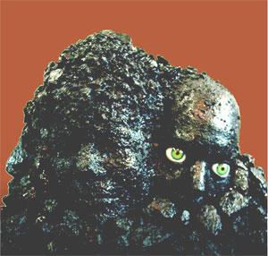

#6954 1 2006-02-19T23:20:31Z Yahoozy Please play my level "Rotting Pinata" found here:
http://numa.notdot.net/map/30208
Tell me what you think.
#145940 1137 2006-02-19T23:33:46Z Yahoozy Rated Juxtapose 4. NEED "Rotting Pinata" rated. found here:
http://numa.notdot.net/map/30208
Plz rate AND comment.
#6956 1 2006-02-20T00:00:53Z Yahoozy In this contest, you have to get through this level I made. It is VERY long and VERY hard.
If you go the farthest out of everyone, you get a ded made for you.
If you go all the way, you get a custom level.
If you go all the way in the fastest time, you will get a ded AND a level.
The contest ends March 25. Also, rate and comment the map. Here is the link:
http://numa.notdot.net/map/30208
Good luck!
#146029 3 2006-02-20T03:00:00Z Yahoozy Thanks, wedgie. I'm glad you like it. And wow! You did a good job! Came really close. I also think it should've gotten a better score than 2.5. WTF is that!?!
#146063 7 2006-02-20T04:50:50Z Yahoozy The prizes will be given out on March 25, like I said they would. lol.
#146064 103 2006-02-20T04:53:14Z Yahoozy I, as do some others, think this should be rated higher. I am also holding a contest for this map. PLZ rate.
http://numa.notdot.net/map/30208#146192 152 2006-02-20T16:32:37Z Yahoozy Here is my submission, "Clover".
http://numa.notdot.net/map/30281
Tell me what you think. =)
#146280 167 2006-02-20T20:37:41Z Yahoozy Here is my entry. It's called "Chi". Enjoy!
http://numa.notdot.net/map/30316#146326 154 2006-02-20T22:11:18Z Yahoozy WOW!!!!!!!!!! I think this level I just made has a good chance of winning this . It is REALLY cool. Tell me what you think and rate.
http://numa.notdot.net/map/30332#146418 155 2006-02-21T00:42:01Z Yahoozy Third submission. Just as good (if not better) than the last.
http://numa.notdot.net/map/30349#146473 157 2006-02-21T02:25:49Z Yahoozy @ Mysterpower: I didn't double post you retard. They're different.
#148898 9 2006-02-26T18:23:33Z Yahoozy You need to put my two maps on the map list. "Angel Wings":
http://numa.notdot.net/map/30349
and "Twinkle Twinkle":
http://numa.notdot.net/map/30332
They came out REALLY good (atleast in my opinion).
Enjoy! Hope you like them! And if I don't win,
Edit.
LV: No death threats.#149134 65 2006-02-27T03:38:28Z Yahoozy Here is my entry, " A Fine Line Betwwen Here and There":
http://numa.notdot.net/map/31192
Enjoy!
#7095 1 2006-02-27T17:56:13Z Yahoozy General Info
OK guys. Here is a new challenge for yall. Here are the rules:
Invent a map that has absolutely NO tiles.
You may use ANYTHING besides tiles.
NO NArt and NO DDAS!!!!!!!!
When submitting, provide a link to this challenge.
____________________________________________________________________
Judges
1. ME! (yahoozy_Guacamole)
2. Greengooguy49
3. *need judge*
4. ( I have no friends) *need judge*
PLZ BE A JUDGE!
____________________________________________________________________
Scale
25/100: Use of objects (creativity)
25/100: Style (looks good)
25/100: Fun factor (is it fun to play?)
25/100: Length (to long/to short)
____________________________________________________________________
HAVE FUN!
#149322 4 2006-02-27T19:56:58Z Yahoozy YAY!!!!!!!!!! I HAVE A JUDGE!!!!!!!!!!!!!!!
#149342 1193 2006-02-27T20:34:03Z Yahoozy Rated "Death Rune". Gave it a 4/5.
Rate my map, "Crimson", found here:
http://numa.notdot.net/map/31343
A comment would be nice, too!
#7103 1 2006-02-27T23:13:34Z Yahoozy This is my level "Crimson"
http://numa.notdot.net/map/31343
PLEASE play!!!!!! Rate AND comment!!!!!! #150144 10 2006-03-01T04:58:12Z Yahoozy Here is my submission, "Circuitry":
http://numa.notdot.net/map/31604
Hope you like it!
-Y.G.
#7170 1 2006-03-01T19:51:25Z Yahoozy I think that we should be able to see the people that voted, and what they're voting was.
That way, we can stop snipers!
WE CAN END SNIPER WORLD DOMINATION!!!!!!
ok... maybe a little extreme... but you get my point.
#150364 23 2006-03-01T19:53:35Z Yahoozy I KNOW!
We can lower the amount of votes needed for a public raing! Maybe about 3.
#151763 32 2006-03-05T03:03:34Z Yahoozy astheoceansblue, sendy, krusch, tktktk, and ME! I love myself. lol.
#152056 1266 2006-03-05T22:45:19Z Yahoozy Rated "Rocket Riding". Need "Exogenous" rated:
http://numa.notdot.net/map/32236.
#154108 1317 2006-03-12T17:31:02Z Yahoozy #158362 1442 2006-03-27T02:06:03Z Yahoozy rated qix's level appetiver. 4.5/5
need these two:
http://numa.notdot.net/map/35322
http://numa.notdot.net/map/35257
first one needs 2 more votes and second needs 3.
#158588 1446 2006-03-27T23:08:12Z Yahoozy #160607 1479 2006-04-01T19:53:27Z Yahoozy rated qix's map 4.5. good job!
need "Macoroni and... Applesauce?" rated.
http://numa.notdot.net/map/36124#161246 1502 2006-04-03T02:38:52Z Yahoozy rated "Death by Thwump", "Shrub of Unrelenting Evil", "Hooky", and "Circle of Pain". need
"Mechanical Popcorn":
http://numa.notdot.net/map/36385
and "Burnt Toast":
http://numa.notdot.net/map/36354
and "The Crazed Muffin":
http://numa.notdot.net/map/36324
and "The Music Machine":
http://numa.notdot.net/map/36327#162971 1522 2006-04-08T01:19:39Z Yahoozy #163481 11 2006-04-10T01:08:42Z Yahoozy #163765 24 2006-04-11T01:05:30Z Yahoozy does this count as numbah one sence i deleted my first one? if not, here's numbah two:
http://numa.notdot.net/map/37749#163787 26 2006-04-11T02:37:06Z Yahoozy I'll judge.
#163791 28 2006-04-11T03:29:19Z Yahoozy cool. thanks. oh. and the avatar: i think its an owl or a penguin covered in discolored mustard. but i love it.
#170058 13 2006-04-30T21:06:43Z Yahoozy my submission: "Claude Monet Took the Monkey"
http://numa.notdot.net/map/40613#8427 1 2006-05-02T22:58:52Z Yahoozy Please play this and read the description.

Yeah. It's sad. Believe me. I know.
http://numa.notdot.net/map/40796#171153 4 2006-05-03T01:06:38Z Yahoozy this should be under contests and tournaments.
#171195 6 2006-05-03T02:07:14Z Yahoozy well. it is a good contest idea. you should make it one.
#174857 16 2006-05-12T02:12:53Z Yahoozy can we stop talking about puberty?!? lol. yes. it was a serious relationship. not like that.... we loved eachother very much. she just didn't want to be with me when i moved.
#8749 1 2006-05-16T22:35:21Z Yahoozy i haven't mad a map in a while. this is my latest one. absolutely ADORE it. check it out please:
http://numa.notdot.net/map/42710
ratings and comments would be wonderful.
#178305 27 2006-05-20T21:35:45Z Yahoozy thwumps, rockets, and floorguards. yep.
#9106 1 2006-05-29T22:12:11Z Yahoozy this is my map. "phiddle"
http://numa.notdot.net/map/44828
it has to be the funnest map i've made in a long time, if not ever.

rate and comment please.
much appreciated.
#181990 28 2006-05-29T22:31:32Z Yahoozy yeah.
um.
i'm on bitesized numa.
and i've inspired authors.
by my levels and my randomness.
and i think i can take the name of best map namer on numa
#182627 36 2006-05-31T05:43:19Z Yahoozy palemoon.
i love you.
and you dancing taco eating fishberry.
idk.
but seriously.
you are VERY underated.
you're my personal favorite author.
and mcp.
your right

#9159 1 2006-05-31T19:06:39Z Yahoozy #182781 5 2006-05-31T20:04:36Z Yahoozy great.
sniped.
once again.
i have one after me.
arggh..

#182912 139 2006-06-01T01:12:15Z Yahoozy #9204 1 2006-06-02T19:02:52Z Yahoozy http://numa.notdot.net/map/45452
the description tells you everything you need to know.
rate and comment please.
#184318 1780 2006-06-04T02:45:39Z Yahoozy rated "earthquack" and "whats that coming over the hill?"
i need::
http://numa.notdot.net/map/45701
thank you very large.
and a comment maybe??
#185099 1791 2006-06-05T19:18:07Z Yahoozy rated sherpas peak 1:: 4.5
i need this rated::
http://numa.notdot.net/map/45943
thank you!!
#186149 145 2006-06-08T03:25:00Z Yahoozy umm..
yeah..
i have two maps that deserve more than a 3.5.
http://numa.notdot.net/map/45088
http://numa.notdot.net/map/43538
yes.
i know the second one is short.
but i find it fun.
thanks yous!!
#9330 1 2006-06-08T19:32:57Z Yahoozy #186430 5 2006-06-08T21:35:32Z Yahoozy oops.
sorry.
i forgot one.

#9332 1 2006-06-08T21:42:13Z Yahoozy ok.
i know i'm not the only one.
but lately i've noticed an excess of noobs on the site.
and they're really ticking me off.
they kick good levels off the newest page in like five minutes!!
and they submt 200 crappy maps a day.
grr..
#186496 7 2006-06-08T23:49:53Z Yahoozy edit:
noobs being noobish.
#186508 10 2006-06-09T00:06:45Z Yahoozy because it was mainly to talk about noob levels.
not the noobs themselves.
#9339 1 2006-06-09T01:41:39Z Yahoozy There are many author's on numa,
and a lot of them are very good.
Yet they don't get the attention they deserve.
Personally,
I have two favorites.
PALEMOON is just.
Wow.
I've never played a bad map from him.
I think he's overall my favorite author.
Another is Theory.
A lot of his maps are great.
soo..
who's your favorite underrated author??
#9342 1 2006-06-09T02:59:06Z Yahoozy heres a tileset.
one of my best.
http://numa.notdot.net/map/43411
if you use it,
rate it,
comment it,
cite it,
but don't eat it.
it gives you gas.

#186605 12 2006-06-09T04:12:51Z Yahoozy i mess around a little bit.
make a tileset.
eat a pbj sanwich.
spaz out on the floor and dance like a mustard covered penguin.
then i place objects in.
and..
there you have it!!
a yahoozy map.
#186795 12 2006-06-09T16:12:07Z Yahoozy nooooooooooooooooooooooooooo!!!!
*sob*
i really enjoyed
*sob*
your maps.
*sob*
have a good..
life..
*sob*
good-bye
*sob*

#187217 22 2006-06-10T14:15:29Z Yahoozy wow.
i always forget about bobodahobo. he always makes beautiful levels. balwe? is one of my favorite maps ever.
and yeah. i know what your saying. i do tend to pump out the maps.
#188350 8 2006-06-12T15:20:11Z Yahoozy if you don't get me a present..
YOUR ASS IS MINE!!
....
bye ngaged
#188387 13 2006-06-12T16:14:42Z Yahoozy noo!!
man.
you are a map genius.
even if you leave forever.
i'll be playing your levels for quite some time.
they're beautiful.
well.
i hope its not forever,
but nice knowing you.
and good luck on the road ahead.
#9431 1 2006-06-12T20:38:21Z Yahoozy an unrated map.
i believe to be pretty good.
http://numa.notdot.net/map/47054
rate.
comment.
blub.

applejuice!!
pickle lickle..
chicken nipple!!
rawrr!!
#188580 18 2006-06-12T20:42:12Z Yahoozy i think i'm somewhere in the 120s on the authors list.
around half of my maps were sniped.
#189020 41 2006-06-13T20:16:12Z Yahoozy yeah.
i've been looking at him.
his maps are great.
but he's not new.
he just never submitted to numa.
butterfinger!!
#189047 10 2006-06-13T21:56:55Z Yahoozy #189115 18 2006-06-13T23:55:23Z Yahoozy yeah.
i agree with nemetacyst.
STOP TAKING MY FRIGGIN IDEA!!
....
...
..
.
#189148 20 2006-06-14T01:08:50Z Yahoozy #189153 44 2006-06-14T01:26:09Z Yahoozy holy friggin crap dudes!!
how about shortshift!!

#9455 1 2006-06-14T02:17:55Z Yahoozy #189170 10 2006-06-14T02:26:54Z Yahoozy idk what anyone is talking about.
so i'll just say something random here.
look at the hairy ranch dressing!!
its stealing the shoe-eating melons!!
....
....
....
you may proceed.
#189172 3 2006-06-14T02:28:36Z Yahoozy well.
this is basically the forum to share levels.
but yeah.
there is.
#189180 5 2006-06-14T02:39:31Z Yahoozy nor guacamole
")
*winks at a random woman*
*gets avacado thrown at face*
woman's husband:: there's some f-ing guacamole for ya!!
*spontaniously says "penguin pants!!"*
*
*
#189362 17 2006-06-14T15:49:55Z Yahoozy mhm.
most maps on numa.
608 to be exact.
yet your aa..
klakdfkla..
DINOSAUR!!

*walks away*
#189366 11 2006-06-14T15:53:37Z Yahoozy bobo,
astheoceansblue,
krusch,
and me.
that was a joke.
so please don't slap me.

#189384 60 2006-06-14T16:26:44Z Yahoozy #189394 16 2006-06-14T16:47:39Z Yahoozy and it's mcp's fault too!!
*stabs mcp*
*watches him slowly die*
*watching..*
mcp::"wh.. eh.. why?? *dead*
yahoozy::".. blub.."
*kicks mcp in the head*


#189404 45 2006-06-14T17:13:21Z Yahoozy orion_ is laso making some pretty freaking awesome shit--aki mushrooms right now.
#189464 13 2006-06-14T18:30:54Z Yahoozy thanks topolord!!
i didn't even think i had a style.
the only way i found out is by people telling me i do.
but thanks!!
it means a lot.
i think you have been doing some great stuff lately.
thanks.
#189467 26 2006-06-14T18:37:44Z Yahoozy wow.
i just read the comment you put on my second entry.
thanks man.
but seriously.
your stuff lately kicks ass.
your tilesets?!
there unbelievable!!
but yeah.
thanks.
#189478 1843 2006-06-14T18:55:31Z Yahoozy rated telepipes.
need this rated::
http://numa.notdot.net/map/47239
#189618 51 2006-06-14T23:21:49Z Yahoozy yeah.
aju is cool.
but he used to scream at me.
so i don't play his maps anymore.

#189704 53 2006-06-15T02:34:28Z Yahoozy ok.
i forgive you.
but only if you give me a cookie.
#190155 2 2006-06-16T05:56:24Z Yahoozy TEH SOOPA UMAYZIN AWWSUMNES!!!!!11!!ONEONE!!!ONE!!11!!
yeah.
i pretty much had a blast playing this level.
but i want to get the best possible demo i can.
and see my competition.
so i may wait a while until i actually submit one.
but yeah.
loved the level itself.
you can expect a demo from me!!
#190162 1852 2006-06-16T06:46:25Z Yahoozy rated jiggerjaws first map and the pieces don't fit.
heres a map of mine.
unrated.
 http://numa.notdot.net/map/47498
http://numa.notdot.net/map/47498#190166 1854 2006-06-16T06:54:49Z Yahoozy rated the pieces don't fit.
jiggerjaws easy map.
and storm in a teacup.
my map.
sadly.
is unrated.
http://numa.notdot.net/map/47498#190177 1857 2006-06-16T08:14:31Z Yahoozy rated golden by jeffkillian.
how about this::
http://numa.notdot.net/map/47552
#190187 19 2006-06-16T08:51:26Z Yahoozy hello there!!
i'm yahoozy.
people here know me for being random.
like that mustard covered penguin standing on that chair eating a pillow.
anyway.
welcome!!
and happy mapmaking!!
#190370 147 2006-06-16T17:28:51Z Yahoozy i've rated atleast half the maps on this page.
i really really think that this level deserves more than a 3.5
http://numa.notdot.net/map/47552
it was 5/5 with four votes.
#190390 25 2006-06-16T18:12:08Z Yahoozy these were my thoughts.
..
.

..
..
..
...

..
....
")
..
.....

..
#190634 21 2006-06-17T04:11:32Z Yahoozy Bahaha. This again.
#190641 1860 2006-06-17T05:48:09Z Yahoozy rated britiannawd's maps.
one more rating on this::
http://numa.notdot.net/map/47671#190662 23 2006-06-17T08:31:32Z Yahoozy Holding this spot for something later.
#190666 31 2006-06-17T08:45:45Z Yahoozy i have the best idea!!
how about..
ok.
picture this.
a yellow drone that spits out purple rubber duckies.
and the duckies spray mustard all over your cookies.
and the ninja dies from loss of chocolatey crumbly goodness.
and a big jar of pickles.
and when you wall jump from it..
it tips over spreading pickle juice all over your cookies.
and the ninja dies from loss of chocolatey crumbly goodness.
and a peanut that dances like a penguin and steps all over your cookies!!
and the ninja dies from loss of chocolatey crumbly goodness.

and!!
....
COOKIES!!
#190831 56 2006-06-17T18:08:44Z Yahoozy i agree.
blue tertis is no underRATED.
maybe not given the attention he deserves after he left.
but not underrated.
#190888 183 2006-06-17T21:21:46Z Yahoozy i want a random one with cookies..
oranges..
bunnies..
ruber duckies..
and fish swimming all over it.
#190942 1862 2006-06-18T00:11:24Z Yahoozy rated lord_day's map.
rate this::
http://numa.notdot.net/map/47804
#190955 1864 2006-06-18T00:50:17Z Yahoozy rated cerberus's awesome map.
need one more rating on this::
http://numa.notdot.net/map/47804
#191037 59 2006-06-18T05:00:02Z Yahoozy oh..
shit yeah.
slicesofbread fricken rocks!!
#191047 62 2006-06-18T05:49:16Z Yahoozy kablizzy.
do you seriously think you're NOT a legend??
#191119 66 2006-06-18T12:26:29Z Yahoozy kablizzy.
you're a legend.
ths all there is to it.
#191216 31 2006-06-18T16:45:46Z Yahoozy Quote
bobodahobo and jahoozy.
jahoozy?!
#191300 31 2006-06-18T20:44:16Z Yahoozy =[[
sorry.
#191365 74 2006-06-19T00:36:31Z Yahoozy no kablizzy.
you're more like this::
http://numa.notdot.net/map/47964
and also notice the name.
#191376 76 2006-06-19T01:04:45Z Yahoozy whoa.
its definantly not that bad.
and did you just call your self a bad map??
#191412 78 2006-06-19T04:41:28Z Yahoozy i wasn't really talking about the level.
i was talking about how it looks like a tiny *peepee*
because you said "you" were so "big"
and i told you to look at the level name to.
haha.
get it??
#191623 64 2006-06-19T19:01:26Z Yahoozy mr. smith was angered to find out that those cookies he accepted would never come.
or.
he could be nevermore.
NOT ANOTHER ONE OF YAHOOZY'S STUPID NAND DRONE MAPS!!
ARGH!!
#9580 1 2006-06-19T19:10:38Z Yahoozy i'm going.
not forever.
just a break.
as i am tired of people screaming at me.
so i'll go crawl in a hole somewhere.
goodbye.
Edit::
sorry.
wrong link.
last map here::
http://numa.notdot.net/map/48069#191632 4 2006-06-19T19:21:53Z Yahoozy the screaming isn't in that map.
#191685 14 2006-06-19T20:40:47Z Yahoozy there's nothing wrong with naning.
its just controlling the movement of drones.
myself.
atob.
sweep.
and many others nan drones.
there is nothing at all wrong.
so stop complaining.
#191689 11 2006-06-19T20:44:22Z Yahoozy no kablizzy.
about 14 of my maps.
most by nevermore.
one by kingalex.
#191694 16 2006-06-19T20:49:03Z Yahoozy #191701 82 2006-06-19T20:54:30Z Yahoozy hah!!
now i see.
maybe it can be an optical illusion??
you know.
its a vase!!
its two faces!!
its a little penis!!
its a vagina!!
get it??
#191705 18 2006-06-19T20:57:37Z Yahoozy that was just two examples.
you can look up in my archive.
i do have more.
#191866 186 2006-06-20T05:50:06Z Yahoozy do i get that sig??
#191868 105 2006-06-20T05:54:05Z Yahoozy can i have one with a fish in a fishbowl..
some music notes..
and my name in a text that looks as if it were sketched out??
that would be pretty frigggin awesome.
#191880 14 2006-06-20T07:33:29Z Yahoozy i am staying.
this is just for a little while.
what nevermore doesn't get is that i'm not leaving because of you guys and yelling.
i'm leaving to to get my mojo back.
i was on a good streak.
then i had this author's block.
so i will be back.
i even started on some levels already.
but thanks for being nicer about it than nevermore.
hint hint.
read what he said on my last map.
thank you kingalex.
one cool dude.
")
#191887 18 2006-06-20T07:59:15Z Yahoozy haha.
i'm leaving silly peoples.
but not forever.
tis a BREAK.
haha.
i will be back soon though.
#192050 107 2006-06-20T17:47:47Z Yahoozy yes!!
thats great!!
but..
i've never had "gaucamole"
haha.
you should fix that.
#192107 110 2006-06-20T20:16:51Z Yahoozy can you maybe make the fade go from the background color in my avatar to white instead of white to grey??
that would be pretty sweet.
but i would like to see both versions and make a final decision.
eeps!!
thank you bunches topolord!!
it rocks!!
#192109 112 2006-06-20T20:28:55Z Yahoozy i want the tan color over my name and fade into white over the fishbowl.
#192111 114 2006-06-20T20:34:40Z Yahoozy oky doky.
and thanks again topolord.
i really do love it.
#192128 117 2006-06-20T21:08:20Z Yahoozy hmm..
sorry.
i think i like the first one better.
i do like that one though.
but the other one is better.
thank you!! thank you!! thank you!! thank you!!
i love it!!
#9606 1 2006-06-21T00:05:42Z Yahoozy i've noticed the use of words such as::
"wangsta",
"gangsta",
"ghetto",
"beotch",
and the ever popular "pimp" sprinkled throughout numa.
any thoughts on this??
..
....
....
..
#192222 16 2006-06-21T00:10:31Z Yahoozy licenense to eat cookies.
i want it orange and white.
and the font to look as if it were sketched out.
please and thank you.
#192226 3 2006-06-21T00:12:01Z Yahoozy i'm not leaving the forums.
i'm taking a break from maps.
#192238 19 2006-06-21T00:26:46Z Yahoozy tank yous!!
#192258 23 2006-06-21T01:04:46Z Yahoozy off-white is almost a peachy white.
and i think i want another one.
i want one with letters in red and the background tan (like the colors on my avatar)
and i want a text that sort of looks either hand-drawn or chalky.
along the lines of that.
i want it to say "license to go crazy"
please and thank you.
#192273 27 2006-06-21T01:27:32Z Yahoozy i love it!!
but instead of the wings.
how about y.g.??
#192277 30 2006-06-21T01:35:26Z Yahoozy thank you
#192286 33 2006-06-21T01:41:02Z Yahoozy that would be great!!
and make the text.
idk.
look like it belongs.
fits in with the avatar.
#192417 13 2006-06-21T09:36:33Z Yahoozy might i say,
pariah,
i really liked it.
and umm..
sorry about all the crap between us nevermore.
lets end it.
anyway.
this thread is about poems.
here are some short poems of mine::
the longest journey
it is good to have an end to journey to, but it is the journey that matters in the end.
the surface of the earth is as hot as the sun; this sand.
this sand tht has no path; no way and cannot lend.
cannot lend any help; no helping hand.
number 9
pour into me like wine.
wrap around me like a vine.
you loved me; but you set your mind.
to be an 8 track player.
and i'm number nine.
blub
fish are cool.
baby fish don't drool.
if they could, you couldn't tell.
because they live in the water.
life: the motion picture
bottle up your tears.
throw them in the ocean.
let go of all your fears.
and set your life in motion.
a long one::
goodbye old friend. i making this choice. it has to be.
dazed on this burning bridge between you and me.
trapped in a lucid smoke.
i could clearly walk down my path.
or walk down yours and choke.
you do the math.
you're making this too hard.
harder than it needs to be.
feel me.
feel me.
but don't you fucking touch me.
it's too hard to see.
just let me go.
get me out of this trap.
i don't need your compass.
or your map.
you're making this too hard.
harder than it needs to be.
feel me.
feel me.
but don't you fucking touch me.
i'm making this choice.
my path is clearly lit.
see you on the other side.
i doubt you can make it.
feel me.
feel me.
feel me.
feel me.
but don't you fucking touch me.
#192429 3 2006-06-21T10:50:20Z Yahoozy as music is very important in my life.
i thought i'd post a thread for song lyrics.
post your favorites here.
comment on them.
here are two of my favorites
8 track-dada (american highway flower)
She pours like red wine
Into me
She crawls like green vine
Wraps around me endlessly
She floats above me
Without strings
She tries to love me
As she loves everything
Yeah, I really believe she tries to love me
But in the meantime
Baby's got an 8 track mind
Baby's got an 8 track mind
Baby's got an 8 track mind
And I'm number, I'm number...
She plays her records
In the sun
She's warping my mind
Likes to keep me on the run
She burns her candles
In my hand
She wants to know me
Doesn't want to understand
Yeah, I really believe she wants to know me
In the meantime
Baby's got an 8 track mind
Baby's got an 8 track mind
Baby's got an 8 track mind
And I'm number 9
I'm number 9
Baby's got an 8 track mind
Baby's got an 8 track mind
Baby's got an 8 track mind
And I'm number 9
I'm number 9
ask the dusk-dada (american highway flower)
(What, what is it that you want?)
(What is it that you want?)
She don't lift her head for nothing
She don't lift her head for no one
30 years have glazed her eyes
Her tongue is dry from asking why
Why (why) all my ideas
Peel and turn to rust (why)
Why I feel I must
I guess I'll ask the dust
She's an American highway flower
Walking, blossoming into nowhere
Digesting tailpipes and babies' screams
To fill the hole that used to house her dreams
Why (why) all my ideas
Peel and turn to rust (why)
Why I feel I must
Guess I'll ask the dust
I guess I'll ask the dust
I guess I'll ask the dust
"I wonder what I'm doing here"
She asks the moon but he don't care
He's busy shinin' on the lucky
In the dark she swims toward nothing
Towards nothing
Why (why) all my ideas
Peel and turn to rust (why)
Why I feel I must
Why (why) all my ideas
Peel and turn to rust (why)
Why I feel I must
Guess I'll ask the dust
I guess I'll ask the dust
and by the way.
american highway flower by dada is a must buy.
now.
time for you guys to put some lyrics up here!!
i want to see your taste in music.
#192433 5 2006-06-21T11:04:23Z Yahoozy wait a second.
did you post first.
or me.
because i have like the exact same thing below you.
#192634 107 2006-06-21T20:09:01Z Yahoozy 1. where do you find a dog with no legs??
right where you left it.
2. what do you call a cow with no legs??
ground beef.
3. what is dead, blonde, and in a closet??
last years hide and go seek winner.
4. two blondes are staring at the moon.
one says,
"which you think is farther: florida or the moon??"
the other one goes,
"duh! can you see florida?!"
#192842 9 2006-06-22T05:34:25Z Yahoozy NOOOOOOOOOOOOOOOOOOOOOOOOOOOOOOOOOOOOOOOOO!!
MCP!!
COME BACK!!
it's all krusch's fault!!
*slaps krusch*
come back!!
well.
you will be missed.
*later that day*
"look krusch. i just got worked up in the moment. i'm really sorry. can i please sto.."
"STFU!! this is you're punishment!! you should of thought of that before you slapped me."
"but.."
"yes please. butt next. and when you finish my sponge bath. i found something in the toilet yesterday. i want you to eat it."
sorry.
off topic.
i miss you already.
#192846 12 2006-06-22T06:02:45Z Yahoozy i wasn't at all. i'm always talking like that. well. not lately. which is probly the only side of me you have seen. so please. this is not a judgement on yahoozy thread. this is a goodbye mcp thread. so w/e.
#192982 558 2006-06-22T15:23:50Z Yahoozy ^banned for banning someone for eating doritos^
#193070 133 2006-06-22T18:08:05Z Yahoozy can i have an avater that matches my sig??
#193270 1887 2006-06-22T23:00:51Z Yahoozy rated not all frogs are green.
how about this::
http://numa.notdot.net/map/48542#193275 569 2006-06-22T23:10:33Z Yahoozy ^banned for having an avatar that looks like vaccum and a duck combined^
#193412 884 2006-06-23T04:26:41Z Yahoozy this is me!!

#193628 365 2006-06-23T20:21:14Z Yahoozy actually.
i usually listen to these four songs while making a level.
ventura highway-america
solar sister-the posies
i-dada
i'd love to change the world-ten years after
#193632 1895 2006-06-23T20:43:33Z Yahoozy rated pembie's and the adster's maps.
here::
http://numa.notdot.net/map/48668#193654 2 2006-06-23T22:16:00Z Yahoozy its called ghost mode.
about everyone on numa has discovered it.
nothing new.
#193680 1654 2006-06-23T23:41:24Z Yahoozy granted, but after all that work all you get is a pair of socks wrapped up in newspaper.
i wish i had a house made of cookies.
#194029 21 2006-06-24T20:59:18Z Yahoozy an ode to cookies::
oh tiny morsel of bountiful sugary delight.
let me digest you to make my tummy happy.
but oh my dear cookies; it seems i've eaten too much.
so i will lie down on the couch, and have a little nappy.
and i shall dream.
dream.
dream about cookies.
the end
#194119 28 2006-06-25T03:02:51Z Yahoozy dada is my all time fav. and the rest change over time. right now, besides dada, i like.. the posies, guster, pete yorn, america, flock of seagulls, minus the bear, and ned's atomic dustbin.
#194152 6 2006-06-25T04:53:04Z Yahoozy thank you!!
i love you you right now.
it has gone far past criticism.
i mean..
**** used to be one of my favorite authors.
i couldn't believe the things he said the first time.
but he kept going on and on.
i mean telling me to delete my maps?!
and ********* agreeing with him?!
after he clearly scram at me for deleting maps!!
wtf?!
all i can say.
wtf.
and thank you rocket_thumped.
you have gained even more respect from me.
#194155 8 2006-06-25T04:55:44Z Yahoozy ugh.
one of them left.
so he says the fiery ones and doesn't worry.
that makes me even angrier.
#194280 17 2006-06-25T12:35:51Z Yahoozy oh shutup aju.
i do make different levels.
which they completely ignore.
i make one remotely the same as a previous one.
they hunt me down.
and one of them said it nicely.
that last quote put up by r_t.
that was ****'s first one.
#194432 27 2006-06-25T17:46:06Z Yahoozy i think this is the best poem i've ever written.
Melons are realy nice when you get hungry, he'll cut you a slice!
Melons are tasty; cut you a slice, and don't be hasty!
Llamas eat melons; llama llama so isn't it ironic, that a melon ate your moma!
kangaroos eat melons; they save some in their pouch; they sit in the couch; and make sure they don't slouch!
Melons don't wear hats of red; heck, I'm not even sure if they have a head!
I'm pretty sure that they have a head; isn't one named after the flinstones? the one named FRED?
Hey, YEAH! I heard of him! He was in a play once; he was kind of dim.
During Romeo and Juliet, Juliet yelled," Yo Romeo! Whats the matter!"
Then Fred replied," I don't have arms. I can't climb the ladder."
Wait you said his name was romeo... is this a figure of speech ?
you know what this is.. never mind...melons are stupid...i'm going eat a peach!
#194440 23 2006-06-25T17:57:54Z Yahoozy now why couldn't you say it like that in the first place.
you were one of my fav authors.
probably top 3 on my list.
and to see you cussing and screaming at me hurts.
i do have feelings you know.
i'm not a mapmaking android with no heart.
geez..
and i haven't used a nand drone in atleast 10 maps.
#194484 541 2006-06-25T19:04:04Z Yahoozy can i be an orange ninja with wings eating a cookie?
that would be sweet.
it doesn't matter where i am.
just would like to be in it.
and my lair is a fishbowl.
#195038 39 2006-06-26T22:32:59Z Yahoozy finally.
someone sums it up perfectly.
thank you tktktk.
edit::
i find it funny that the newest topic reads::
yahoozy_Guacamole
yahoozy_Guacamole

#195108 1910 2006-06-27T01:50:29Z Yahoozy rated no_common_sense's, rocket_thumped's, gameaddict's, and jakel's levels.
how about this::
http://numa.notdot.net/map/49105#195131 1550 2006-06-27T03:13:49Z Yahoozy ^9/10
mine?
#195141 20 2006-06-27T03:59:30Z Yahoozy Clovic's Super Happy Bunny Crackhouse.
Clovic's Secret Stash of Cheerios.
Clovic's Extremely Cannabalistic Forum of Scrambled Eggs.
and finally..
[Forum Name Removed Due to Brain Frying Randomness]
just some suggestions.
#195163 26 2006-06-27T05:41:51Z Yahoozy i myself am not emo.
but i agree with formica on all accounts.
#195457 49 2006-06-27T20:33:26Z Yahoozy i'm 13.
#195540 1914 2006-06-28T00:01:12Z Yahoozy rated asian gangsta's and epigone's maps.
i need 3 on this::
http://numa.notdot.net/map/49242#195619 399 2006-06-28T03:14:46Z Yahoozy either way-guster
#195764 34 2006-06-28T12:27:30Z Yahoozy yep. so lets all have a good hard laugh at him.
hahahahahahahahahahahahahaha!!
haha!!
hahahahahahahahahaha!!
hahahaha!!
ha!!
meh.
haha!!
silly emo..
edit: damn. rocket_thumped beat me.
#195798 1087 2006-06-28T14:12:36Z Yahoozy ooh!!
i love those things.
10.
#9759 1 2006-06-28T15:55:46Z Yahoozy some ideas.
1. maybe thwumps not going through doors??
2. when rockets collide they explode, making for new tactical and strategical gameplay, instead of just dodging.
3. shotgun drone??
4. turret??
umm.. thats it.
#195991 23 2006-06-28T21:29:22Z Yahoozy i would make a joke about borwn, and yellow (if there is 1), but maestro already did.
so i like blue.
#196031 3 2006-06-28T22:23:42Z Yahoozy wow. great, great job you guys. so far every level is astounding. an amazing collection of levels. good job!! it's incredible.

#9770 1 2006-06-29T00:16:36Z Yahoozy just wanted to write a story about clovic. and let him be able to put his emo replies
the begining..
once upon a time. there was a platypus. his name was mr.cat. one day, mr.cat had to leave. he was invited to go to the happy peppy dancing house of platypus. so he asked his spastic friend, jolly crack muffin, to watch his cabbage garden. but his friend realized he had aids. and died. mr.cat was very sad. but he had add. so he forgot about it pretty soon.
then he remembered the happy peppy dancing house of platypus, (which shall now be called shin-dig, as happy peppy dancing house of platypus is too long), and called his other friend right away. super taco banana melon was his name. and he came to mr.cat's house at 4 o'clock. 2 hours before the shin-dig. he gave mr.cat medicine for his add. which takes 2 hours to work. mr.cat took it right away.
time flew and and 2 hours passed. right as mr.cat was about to walk out the door, he realized his friend was dead. he became depressed and didn't go to the shin-dig. he also became angry at super taco banana melon and killed him. which made him more depressed.
meanwhile, at the shin-dig, everyone was getting angry that mr.cat didn't show. he was supposed to become the new head platypus. so the current head platypus, dane cook, called everyone to form a mob and get mr.cat. and they headed to his house.
they got there to see a depressed platypus. they expressed their sympathy, then threw him in a pool and lit the surface on fire. yes. just like the dane cook joke. they left him there and went back to the shin-dig. as mr.cat was drowning. he was thinking about his life. and came to a conclusion. "this sucks." so in that instant, he became emo. he came out the pool, through the fire, because the pain made him forget about the loss of his friend. and he walked to a dark corner.
he wondered about life. and how being in that firey pool reminded him about his life. never being able to escape the torture. so he changed his name to clovic. because it sounded darker than mr.cat. and hid away in his lonely subforum. the only subforum he is allowed to see. and he wonders why nobody likes it.
but it's not all bad. i mean. c'mon. he has his own subforum. that's pretty fricken sweet.
the end..
#196138 609 2006-06-29T02:03:43Z Yahoozy ^banned because banning is the whole point of this game^
#9781 1 2006-06-29T08:41:24Z Yahoozy so dada is my favorite band. and man can michael gurley jam. i recently found this solo. i thought it amazing. how about you??
http://www.youtube.com/watch?v=OaJZLh_TkyU#196245 5 2006-06-29T10:30:46Z Yahoozy the shotgun drone.. hmm.. maybe it would shoot as fast as a chain-gun drone, but one bullet. and the bullet is bigger. and there is less time between spotting n and shooting him than a chain-gun drone.
#196458 623 2006-06-29T19:52:25Z Yahoozy banned for...
banananananananananananananananana..#196464 625 2006-06-29T19:56:53Z Yahoozy banned for banning me for something someone already banned me for.
#9790 1 2006-06-29T20:34:55Z Yahoozy i have a problem. not very big. infact. very small. and annoying. as i was trying to press "ctrl+c" for a level code, i pressed two different keys. and everything on numa went tiny. the text. the thumbnails. everything. any idea what i did and how to reverse it??
#196506 3 2006-06-29T20:46:11Z Yahoozy ack!! thank you.
and yes. i know i'm a retard.
#196517 634 2006-06-29T21:05:32Z Yahoozy banned for not having a brain-eating link on your sig (oh you knew it was coming
)
#196543 141 2006-06-29T21:47:52Z Yahoozy there is truth in manuscript form, achealogical form, and, for us christians, faith . but i agree with obby. accept that we think different ways.
#196585 1098 2006-06-29T22:41:46Z Yahoozy sob has the best friggin avatar in the world!! =D 10/10
#196610 637 2006-06-29T23:22:09Z Yahoozy banned for having green text.
#196638 13 2006-06-30T00:41:58Z Yahoozy thats the scientist. and i like the video of feel the pain by dinosaur jr.
radiohead's high and dry is probably my favorite radiohead video/song. as much as i like dada. no good videos
. bjorks human behavoir is really neat. modest mouse's the ocean breathes salty as well as float on. minus the bear's pachula sunrise. pete yorn's strange condition. but my favorite is the replacemet's left of the dial.
#196667 1924 2006-06-30T02:12:07Z Yahoozy already rated bobo's.
rated no_common_sense's.
here::
http://numa.notdot.net/map/49579#196688 9 2006-06-30T03:26:22Z Yahoozy something that has a flat bottom and connects to tiles. and maybe it could shoot like a chaingun does.
#196731 1691 2006-06-30T05:46:44Z Yahoozy granted. but then.. mustard.
i wish i could dance like a melon fused taco fish.
#196735 1693 2006-06-30T05:57:41Z Yahoozy granted. but then you get possessed by the n hating demon and delete all your progress.
i wish this wish wouldn't be corrupted.
#196795 89 2006-06-30T09:56:24Z Yahoozy ooh.. krusch is right. and thank you for keeping this topic alive.

#197211 33 2006-07-01T00:25:24Z Yahoozy there once lived a flamingo named cracka-lacka-booga-wooga-pama-gama. he danced with a grace of a thousand mustard covered pillow eating leather cows. so one day, he was trying to nail is peanut butter and jelly sandwich collection to the wall, when in from the ceiling comes::
super duper taco melon person hero thingy blubbershniggle!!
and he landed on the carpet. he twirled around 78 times, said
"
blugashnapple!!"
and threw an orange leprachaun into the refrigerater. after that, he stopped and said,
"blup."
and flew off again. in flamingo language, all of this means,
"help!! someone stole my pie!!"
and the flamingo knew exactly what to do. he grabbed a banana, some duct tape, a patty, and some vaseline. then he thought to himself,
"oh wait. i'm not making spaghetti. i have to get that pie!!"
and he ran out the door. he knew exactly where to find it. he stopped at is cabbage patch to grab some money (as this is where he hides it), and ran to the store. and with a leap, a bound, some dodging of the doritos, and
cheeeeeeeeeeeese.. he made it to the dessert section. and yes. he bought a pie. he made it quick to
super duper taco melon person hero thingy blubbershniggle!!'s house. and flew through the door.
"your pie, sir. from the grocery."
"but how did you think of looking there?!"
and with that, cracka-lacka-booga-wooga-pama-gama replied with,
"the emo frog/pretzal/stripper of rainbow sunshine told me."
and they danced the night away..
together..
the end!!
#197214 2 2006-07-01T00:28:33Z Yahoozy i'm thinking it's walmart, but with drug outlet in the middle.
#197219 35 2006-07-01T00:32:42Z Yahoozy there once lived a flamingo named cracka-lacka-booga-wooga-pama-gama. he danced with a grace of a thousand mustard covered pillow eating leather cows. so one day, he was trying to nail is peanut butter and jelly sandwich collection to the wall, when in from the ceiling comes::
super duper taco melon person hero thingy blubbershniggle!!
and he landed on the carpet. he twirled around 78 times, said
"blugashnapple!!"
and threw an orange leprachaun into the refrigerater. after that, he stopped and said,
"blup."
and flew off again. in flamingo language, all of this means,
"help!! someone stole my pie!!"
and the flamingo knew exactly what to do. he grabbed a banana, some duct tape, a patty, and some vaseline. then he thought to himself,
"oh wait. i'm not making spaghetti. i have to get that pie!!"
and he ran out the door. he knew exactly where to find it. he stopped at is cabbage patch to grab some money (as this is where he hides it), and ran to the store. and with a leap, a bound, some dodging of the doritos, and cheeeeeeeeeeeese.. he made it to the dessert section. and yes. he bought a pie. he made it quick to super duper taco melon person hero thingy blubbershniggle!!'s house. and flew through the door.
"your pie, sir. from the grocery."
"but how did you think of looking there?!"
and with that, cracka-lacka-booga-wooga-pama-gama replied with,
"the emo frog/pretzal/stripper of rainbow sunshine told me."
and they danced the night away..
together..
the end!!
Funny as that was, the deadline for entries was June 18th.
NOO!!
#197229 469 2006-07-01T00:53:16Z Yahoozy ^most likely to get eaten. sorry sob. you're toast.
#197283 10 2006-07-01T03:00:46Z Yahoozy agh!! i can't get on!! =[[
#197319 61 2006-07-01T04:37:53Z Yahoozy my first level.. not so great..
http://numa.notdot.net/map/26700
but hey. i got better. you can too. and your first map is better than mine
just have faith in yourself.
#197321 25 2006-07-01T04:58:03Z Yahoozy you get a bunny.
inserts yo mama.
#197327 16 2006-07-01T05:31:09Z Yahoozy jif will go out of buisiness. as well as all other peanut butter companies. and as well as jelly companies. and the world is over in 2789. because in the future, the peanut butter jelly song will be a huge internet hit again. but in the future, "it's peanut butter jelly time!! peanut butter jelly time!!" means"destroy earth and cookies!!"
#197335 7 2006-07-01T06:10:11Z Yahoozy beans beans the magical fruit.
the more you eat, the more you toot.
the more you toot, the better you feel.
so eat beans for every meal!!
#197336 27 2006-07-01T06:18:28Z Yahoozy you get a heaping pile of golden crap.
inserts 29 cupcakes.
#197364 5 2006-07-01T10:34:17Z Yahoozy but forests give you gas, so it farted out all the fairy cows and dancing fish.
#197621 502 2006-07-01T22:28:29Z Yahoozy Quote
$Crimson Skies#Twistkill#Action#50002111111111111111111000001111111111111111110000011111500000211111100000111150000000211111000001115000000000211110000011100000000000111100000111000031140001111000001110000111100011110000000000001111000111100000000000011110001111000000000000111100011110000000000001115000111100000000000010000001111000000000000100000011110000000000001000003111100000000000310000311111000000000031100001111110111111111115000011111101111111111500000111111000001111110000001111110000011111100000311111111100111111000001111111111001111110000011111111110011111100000111111111111111111111111111111111111111111111111111111111111111111111111111111111111111111111111111111111111111111111111111111111111111111111111111111111111111111111111|5^324,468!12^492,108!12^492,132!12^492,84!12^492,60!9^36,84,0,0,18,1,1,-1,0!0^36,72!0^36,60!0^36,96!0^36,108!0^84,324!0^84,360!0^84,348!0^84,336!0^84,372!9^588,348,0,0,19,1,1,0,0!12^588,324!12^588,372!12^384,132!12^276,192!1^324,264!1^396,180!12^288,144!12^312,180!10^204,36!12^348,96!12^252,168!12^336,72!12^408,96!12^384,84!11^576,132,456,36!1^288,84!4^372,306,1!10^324,348!8^141,14,3!8^228,420,1#
twistkills first map!!
#197639 303 2006-07-01T23:42:25Z Yahoozy here's my in depth opinion.
girls friggin rock.
#197721 272 2006-07-02T02:51:33Z Yahoozy has two r's in his name.
#197723 48 2006-07-02T03:06:13Z Yahoozy you get slapped.
*inserts pants*
#197732 51 2006-07-02T04:14:43Z Yahoozy you get wellbutrin.
inserts dancing monkey.
#197738 29 2006-07-02T04:44:11Z Yahoozy it's ok to joke, but when people are offended by it, please stop.
do we really need to say anymore??
#197895 655 2006-07-02T16:55:00Z Yahoozy banned for banning someone for banning too many people when banning people is the whole point of this game. muahahaha..
#198148 1935 2006-07-03T03:20:59Z Yahoozy rated scythe33's.
rate teh supa map of teh supa awsumnessnessticity!!11!!!!!11!!oneone!!!one!!!1111!!!oneone!!
http://numa.notdot.net/map/49623#198166 10 2006-07-03T04:29:21Z Yahoozy a cookie that eats poopie!! haha!! POOPIE!! then..
#198175 107 2006-07-03T05:12:57Z Yahoozy super gun:
phase one:
shoots cookies. and then the bad guys eat them.
phase two:
the chocolate chips have a chemical to transform every blood cell into a four inch wide peace of foam, turning the bad guy into a giant stuffed animal.
phase three:
then the foam has a chemical to change all the foam into rubber duckies.
phase four:
then 52 1/2 giant arms come out of his ass and squeeze all the rubber duckies until his head pops.
phase five:
the head turns into key lime pie for everyone to enjoy!
#198258 45 2006-07-03T13:45:45Z Yahoozy i can only play minesweeper for about 2 seconds before i say "fuck this shit" and go play n.
#198628 14 2006-07-04T07:39:19Z Yahoozy 4. to keep drones still just delete the last number of the drone code like so...
3,1,0 ---> 3,1, -----> 3,1,NaN
this freezes the drone...
no no. i know how to nan drones. trust me. ask nevermore =/
by turrets i mean something like a floorguard. well. in a sense that it attaches to tiles. but it doesn't move. and it may shoot something like a chaingun drone. idk. just an idea. and yes. one spray of bullets would be nice.
and also. would it be hard to code floorguards not going through doors?? or maybe staying still until you actually get on the same platform??
#9876 1 2006-07-04T07:48:12Z Yahoozy http://numa.notdot.net/browse?author=testpilot1989
he's new here, and i see greatness in his future. only four maps (which are quite good i might add), and he asks how to get better. wow. what a refreshment from those noobs who steal and submit another bad map every 5 seconds. now he may not be methodic, amomentlikethis, or palemoon. who all blasted onto the scene. but he's pretty much brand new at this. i think it's great. any opinions??
#198641 16 2006-07-04T08:29:09Z Yahoozy and it would stop noobs who clump a million rockets together.
#198781 6 2006-07-04T17:08:57Z Yahoozy #199018 13 2006-07-05T01:50:54Z Yahoozy holy crap!! the first one is mine!!
#199038 1946 2006-07-05T02:51:15Z Yahoozy rated both mysterypower's and jtbande's.
here::
http://numa.notdot.net/map/50068#199063 14 2006-07-05T04:55:56Z Yahoozy things that made me sad today::
i read the morning glory comic and felt unclean

no milk=no macaroni
kablizzy dropped his cake
.. this thread..
#199083 14 2006-07-05T06:43:07Z Yahoozy no. i am not saying he's a sure to be a legend. but i know he'll be a great mapmaker.
#199391 1956 2006-07-06T00:09:52Z Yahoozy rated djlo's first three.
this::
http://numa.notdot.net/map/50260#199479 7 2006-07-06T05:37:59Z Yahoozy i knew i saw one of these before!! the second one played on the show "eye drops" on G4. they're all amazing.
#199494 117 2006-07-06T07:09:59Z Yahoozy my favorite thing to do is gather about 10 people, and tell them to laugh at a joke. then i go up to someone and say::
hey!! two rhinos were in a bathtub. one of them goes
"can you get the soap??"
the other goes
"what do you think i am?! A TOASTER?!"
then everyone starts laughing and that one person doesn't have a clue what's going on.
another one to tell in person::
knock knock.
whos there?
an interupting cow
an interupt..
MOO!!
#199511 1966 2006-07-06T09:49:05Z Yahoozy #199644 24 2006-07-06T19:17:21Z Yahoozy Anyway, this guys looks good. Haven't actually played the maps, but they look promising. I believe it was Methodic that started out this way as well, although I haven't head much of him lately.
no. methodic EXPLODED onto numa.
#199672 1977 2006-07-06T21:21:58Z Yahoozy rated dark_ball_y-e's.
this::
http://numa.notdot.net/map/50408
jaws theme 2!!
#199820 6 2006-07-07T05:41:08Z Yahoozy spacebar.
#199829 1985 2006-07-07T07:05:31Z Yahoozy rated homestarrunner's and both epigone's maps.
here::
http://numa.notdot.net/map/50452#199849 219 2006-07-07T08:22:17Z Yahoozy yeah!!.. when's the next one?!
#199859 14 2006-07-07T08:43:54Z Yahoozy you guys are cRaZy!!
spacebar pwns!! well.. i guess since thats the only thing i ever use to jump on the comp, i'm used to it.. but it still pwns..
#199861 41 2006-07-07T08:47:57Z Yahoozy hmm.. a mix of the two??
hey y'all!! lets go to my house and get a round of tea and teacakes. then we can go out in the back and play some-a-dat cricket.
#200421 1993 2006-07-08T21:32:31Z Yahoozy rated both of qix's. i 5avd the first one. lovely map. and gave the second a 4.
here::
http://numa.notdot.net/map/50693#200450 1996 2006-07-08T22:40:05Z Yahoozy mine was being ignored.. so here it is again::
http://numa.notdot.net/map/50693#200492 1998 2006-07-09T00:45:08Z Yahoozy #200537 17 2006-07-09T03:20:00Z Yahoozy woohoo!!
wheres my present mother [sunflower]
when shall we see some ngaged levels??
#200758 19 2006-07-09T21:59:47Z Yahoozy great stuff dude!!
#200804 2004 2006-07-10T01:34:07Z Yahoozy rated legiax's and dark_ball_ye's.
this::
http://numa.notdot.net/map/50868#200826 2008 2006-07-10T03:13:49Z Yahoozy #200829 3 2006-07-10T04:06:45Z Yahoozy i saw it on cinematech from g4. they were showing internet games. i went on freeonlinegames.com to play. loved it. downloaded it. end of story.
#200854 13 2006-07-10T07:44:57Z Yahoozy If you havent noticed spartanruss left comments on most of my maps. We are good friends and he thought it would be funny to rate all my maps 5/5 with his 16 accounts. He was later banned. So no i dont multi-account because I dont care about ratings because I know my maps all suck anyway.
2006-05-18 03:15:23Dom1nation
Quote
i skipped gold I would give this a 1/5, but because im also joel 5/5
heh. it's good to know that this was all a mix up, and you're not lying because you're scared.
#203229 11 2006-07-16T01:54:05Z Yahoozy i'm so glad my baby is back!! i love you honey!!
#10095 1 2006-07-16T09:39:55Z Yahoozy I miss the little dot above the "E", and that big white slab.
. . . .
#203542 11 2006-07-16T21:58:50Z Yahoozy have a great trip tktktk. really enjoy it. and don't forget my present. or you'll be expecting.. a surprise.. in the near future..
muahahahahahaha!!
have a good time!!
#203895 2070 2006-07-18T00:19:20Z Yahoozy rate legiax's.
here. this is one of my favorites ever. unrated
http://numa.notdot.net/map/52013#203927 2077 2006-07-18T01:31:52Z Yahoozy rated no_common_sense's map.
here::
http://numa.notdot.net/map/51947#203947 2079 2006-07-18T02:43:30Z Yahoozy rated spiker5's maps.
here again::
http://numa.notdot.net/map/51947#203963 55 2006-07-18T03:54:09Z Yahoozy #204224 2093 2006-07-19T01:20:29Z Yahoozy #204308 37 2006-07-19T06:18:44Z Yahoozy one between me and r_t. man, i love doing these things.
Quote
<yahoozy> make a mountainus tileset along the bottom.
<rocket_thumped> do the same to the top
<yahoozy> mines along the bottom.
<rocket_thumped> some tiers on each side
<yahoozy> gold along the top.
<rocket_thumped> add some gold and blocks in the spaces inbetween.
<yahoozy> enclose the piers, like doors can go in them, and put the door switches along the bottom.
<rocket_thumped> floor gaurds on the tiers.
<yahoozy> the exit door at the end of one set of doors, the switch at the other.
<rocket_thumped> add a rocket in the middle.
<yahoozy> add the ninja on one of the blocks.
yahoozy::
http://numa.notdot.net/map/52191
rocket_thumped::
http://pastebin.ca/92097#204311 98 2006-07-19T06:41:53Z Yahoozy 20 F****ING MINUTES!!
#204324 12 2006-07-19T07:04:14Z Yahoozy yes. YES!!
#204330 18 2006-07-19T07:09:58Z Yahoozy PONY IN THE EFFIN WATER!!

PONIES AND CANDY CANES!! AHH!!

#204361 43 2006-07-19T08:24:48Z Yahoozy POBIES PWNN!!11!!oneone!!111111!!!1TWENTFIVE!!11!!

#204832 69 2006-07-19T23:55:33Z Yahoozy #204976 15 2006-07-20T05:03:54Z Yahoozy i <3 devo ponies.
#205002 2099 2006-07-20T07:54:27Z Yahoozy rated dejablue4's and scythe33's.
here::
http://numa.notdot.net/map/52279#205170 2102 2006-07-20T17:43:00Z Yahoozy rated legiax's and monkey_of_doom's.
this is one of my fav maps::
http://numa.notdot.net/map/52322#205323 72 2006-07-21T02:01:22Z Yahoozy this is my second entry resubmitted. i edited. sorry.
http://numa.notdot.net/map/52428#205385 9 2006-07-21T07:05:43Z Yahoozy #205797 2126 2006-07-22T01:14:08Z Yahoozy #205889 103 2006-07-22T09:38:15Z Yahoozy holy crap. i can't beleive i never said him. tl just might be my favorite author ever. his tiles are beautiful. and same as his gameplay. too bad he can be underrated sometimes..
#206104 2138 2006-07-22T23:31:00Z Yahoozy rated Wednesday's at the Roxy by mcp.
here::
http://numa.notdot.net/map/52660#206105 10 2006-07-22T23:32:48Z Yahoozy atramentis....
#206164 2140 2006-07-23T01:55:35Z Yahoozy rated obby's and legiax's "bounceblocks".
Need 2 more on here::
http://numa.notdot.net/map/52660#206495 4 2006-07-23T23:19:21Z Yahoozy #206506 5 2006-07-23T23:43:00Z Yahoozy McP needs to shutup. He knows he loves to get some *action*

yeah. action is my favorite.
#206523 12 2006-07-24T00:16:42Z Yahoozy that once a 200 year period when stepself is on, he's helpful.
McP is my baby-pie-suger-lumps.
#206632 59 2006-07-24T06:50:44Z Yahoozy #206855 9 2006-07-24T21:10:32Z Yahoozy first map i ever made/submitted.
i don't think it's
extremely awful. i mean. not as ugly and horrid as a lot of noob maps. but.. it's pretty bad.
http://numa.notdot.net/map/26700#206913 80 2006-07-25T01:03:37Z Yahoozy third and final submition. based on 35-2.
http://numa.notdot.net/map/52988#207449 19 2006-07-26T18:08:54Z Yahoozy who idiot made this???
who needs to learn proper english???
#207748 31 2006-07-27T09:17:33Z Yahoozy wow. what a story. i know how it feels to be in a dreamlike state. where everything seems to be unreal. strange. it scares you at first, then you get used to this feeling. you eventually leave. after all, it's just "dream world" . but once you leave, you can only speculate your existence, in that strange state, and in general. and why the hell did you choose to leave. now, i don't really know if this is particularly how you felt of it. maybe i'm just sounding like a babbling idiot here. ahwell. this story enlightens me. makes me wonder how, what is just a *small* touch of someone's life, can be a life changing speculate to another.
#208842 5 2006-07-29T21:48:00Z Yahoozy *cough* CUSTOM LEVELS *cough*
#209014 6 2006-07-30T04:20:21Z Yahoozy as of now,
http://numa.notdot.net/map/53547
i just love it. simplistic beauty.
but, i would have to agree with stepself on this one. different day, different map.
#209355 33 2006-07-31T03:14:52Z Yahoozy #209362 1719 2006-07-31T03:29:01Z Yahoozy 7/10
i really miss your old one.
#209739 22 2006-08-01T02:31:15Z Yahoozy This is my
true pride map.
http://numa.notdot.net/map/49336
I just think.. gah!! I love it.
It did get some recognition, but it came and went pretty quick. I thought it could get more.
#209746 34 2006-08-01T02:49:13Z Yahoozy The save music on Ico.
#209912 25 2006-08-01T16:16:10Z Yahoozy This is my true pride map.
http://numa.notdot.net/map/49336
I just think.. gah!! I love it.
It did get some recognition, but it came and went pretty quick. I thought it could get more.
I tried that one out. Nice work!
you forgot to rate.
very nice map, cerberus.
atob, maybe tl-esque.
#209914 39 2006-08-01T16:20:38Z Yahoozy nevermind.
ignore this.
#209944 6 2006-08-01T17:17:11Z Yahoozy #210191 8 2006-08-02T00:52:56Z Yahoozy the penis maps.. THE PENIS MAPS!!
*fetal position*
#210271 5 2006-08-02T04:19:56Z Yahoozy oh dont POST on this ANYMORE
dude. shutup. just.. stop. i'm not trying to be mean, but it's best if you just find out for yourself. and shooting down what i just said will make people not want to tell you even more than they already do. many, many people have beat the game by the way.
#210665 93 2006-08-02T23:55:03Z Yahoozy I deleted my other third entry. heres my new one.
http://numa.notdot.net/map/54229#210718 21 2006-08-03T01:37:32Z Yahoozy sorry, but this is just another senseless post from the same idiot that refuses to take our advice and
stop spamming.
edit:: basically,
think before you post something.
#210786 1731 2006-08-03T03:49:42Z Yahoozy a little_too_big. but i love your actual sig. for that, 7.5
#211127 54 2006-08-03T23:27:02Z Yahoozy i want to take out jaws theme. it actually uses three different types of tyles. my bad.
really my second entry. really.
http://numa.notdot.net/map/54022#211249 8 2006-08-04T05:24:03Z Yahoozy i briefly read this thread, but from my understanding, you can answer ANY question i ask.
soo..
why is it that the little paper boat sank and jamal got wet and all the guacamole exploded??
edited:: i before e, except after c.
#211665 25 2006-08-05T03:23:45Z Yahoozy by the way, just so my question doesn't sound as horribly random and stupid,
http://www.albinoblacksheep.com/flash/avocado.php#211824 3 2006-08-05T16:22:58Z Yahoozy jumping from wires!! enemies of varying proportions!! n on xbox live?!
holy smokes!!
#211898 65 2006-08-05T19:21:42Z Yahoozy um.. did you read my other replies?? you took out fragment digital and kept jaws theme, when i really wanted to keep fragment digital and get rid of jaws theme.
http://numa.notdot.net/map/53547#211914 69 2006-08-05T20:00:49Z Yahoozy Wow, I felt you double posted.
And y_G, we already know that Jaw's doesn't work with the contest and I'm pretty sure Jakel is going to judge that level in it's place.
ok. but my first entry is still non-existent.
#211922 35 2006-08-05T20:21:26Z Yahoozy hmm.. i'm curious.
#211942 1779 2006-08-05T21:13:44Z Yahoozy a little big. 7/10
#211978 1784 2006-08-05T23:21:44Z Yahoozy eh. 7/10
#212011 60 2006-08-06T01:37:15Z Yahoozy i would like to know if the new game will have a level editor.
#212018 62 2006-08-06T01:53:21Z Yahoozy i would like to know if the new game will have a level editor.
Quote: From the article
Currently, Metanet is working on their next gametentatively titled "Robotology"developed in OpenGL and C++. Like Umihara Kawase, the protagonist will be able to fire and swing from a wire and use a variety of parkour-like gymnastics to navigate a Phillip K. Dick-inspired future world of robots (some comparable in size to the population of Fumito Ueda's latest release). As with N, a level editor and user-created stages will be an important part of the game.
....
well thats cool.
#212038 64 2006-08-06T03:01:59Z Yahoozy haha. ted. will there be a new site like numa?? tuma??
#212104 39 2006-08-06T06:37:24Z Yahoozy 
2nd
i actually like this one a lot.
#212105 4 2006-08-06T06:47:14Z Yahoozy you're both wrong.
*from irc*
Quote
<McKFC> Pee = gold
<Cadmus> I am.
<McKFC> Add gold
<McKFC> now
<ExtremeHouseOfLederhosen>
<McKFC> lolol;
<Cadmus> Not anymore.
<McKFC> N is attracted to gold.
<McKFC> And gold = pee.
<ExtremeHouseOfLederhosen>
<McKFC> Therefore N is attracted to pee.
<ExtremeHouseOfLederhosen>
<McKFC> However there is no evidence that gold is actually pee.
#212202 72 2006-08-06T16:13:02Z Yahoozy #212234 1799 2006-08-06T17:45:06Z Yahoozy i like. different. 8/10
#212556 11 2006-08-07T05:28:06Z Yahoozy If you really hate all your previous maps, then just sit down with a cup of joe in the morning and wok all day deleting your maps.
It doesn't take all day. Trust me. And besides, deleting all your maps is such an obvious plead for attention, not to mention meaningless and just plain foolhardy.
yes. very,
very stupid idea.
#212675 1813 2006-08-07T14:30:11Z Yahoozy i like. 9/10
#212922 14 2006-08-07T22:24:58Z Yahoozy goodbye cadmus. you were a great friend to me here. so long.. old friend..
#212965 4 2006-08-07T23:39:36Z Yahoozy aju, gtxkiller, and topolord would be your best bets.
edit:: mine's from aju.
#212995 1755 2006-08-08T01:06:25Z Yahoozy granted, but since i'd rather women, you end up shooting yourself in the face.
i wish i was an awesome musician.
#213006 1757 2006-08-08T01:27:59Z Yahoozy granted. it wasn't messed up. it was mixed up with another wish, and you ended up turning into a gay unicorn.
i wish i had a million dollars.
#213264 30 2006-08-08T19:34:57Z Yahoozy this was the first map i was real proud of. looking back, it sucks arse.
http://numa.notdot.net/map/30208#213297 23 2006-08-08T21:15:19Z Yahoozy Guiseppi. Not just for the sheer amount of votes, also quite helpful.
#213453 2421 2006-08-09T03:37:49Z Yahoozy rated both of the above.
here::
http://numa.notdot.net/map/55025#213782 17 2006-08-10T01:50:47Z Yahoozy the fact the limer is the one posting this topic baffles me. a bit ironic, no?? firstly, smart people wouldn't join an "anarchy". secondly, even if arachnid made another map, there's no guarantee it will be amazing. the rating system sucks anyway. now please, stop whining about it and take a look at bitesize numa.
#214189 6 2006-08-11T01:09:35Z Yahoozy No one on NUMA seems to comment constructive criticism.
That's because no one on NUMA ever does constructive critcism.
This way is fine, if there is no one helpful on NUMA, than you can post it on the forums. Just next time put it in NUMA discussions or custom maps sub-forum.
you're silly.
#214204 17 2006-08-11T01:25:55Z Yahoozy i have no sympathy for people who commit suicide. there was a story on the news the other day about a boy who killed himself because his parents were missing. they came the next day and he was dead. i think it's just stupid. period.
#214242 23 2006-08-11T02:59:30Z Yahoozy For the past few years, especially in Middle School, I kept thinking of suicide. It just seemed like a simple way for you to get rid of all your problems. But some people don't keep in mind those who will be effected by your deadly choice. Your parents, neighbors, other kids that were around you...
Fortunately, I thought of that before attempting it. So here I am today.
The people who do it aren't stupid at all. Of course, you might think "Why the heck would he/she do that? How stupid of him/her!" But they're not stupid. They're just troubled individuals who need a hand.
i have had many problems in my life. i have anxiety and depression. please, no fights about who's had more problems, though. i'm sorry if i insulted you. those are just my views on the matter.
#214507 29 2006-08-11T22:33:16Z Yahoozy i have no sympathy for people who commit suicide. there was a story on the news the other day about a boy who killed himself because his parents were missing. they came the next day and he was dead. i think it's just stupid. period.
Having no sympathy for suicidal people is kind of like having no sympathy for the handicapped. We could call them lazy for sitting in their chairs and taking all the easy parking places, but that sort of makes them out to be masters of their own fates (instead of victims). The truth is, the suicidal are victims just as much as any other disabled group. I think we should have sympathy for them under the same auspices as we have sympathy for the mentally ill.
They haven't chosen to be depressed and haven't chosen to have thoughts of suicide. In fact, those things are chemical in nature. That's why we can diagnose those things with medicine. If it were up to their true natures, I'm sure they wouldn't be suicidal. Innately, every person wants to live.
well. let me get more detailed here. suicide
is not an illness. depression is an illness. you can help depression.
ok. let me go back about 4 years. i have anxiety. one summer, there was a story about depression on the news. i began to panic. "what if i have depression?!" i'd think to myself. so i thank this for a long time. it actually gave me depression, and an ocd personality. so i spent 4 summers sitting on the couch, pondering depression, and looking at the knife rack. i had nightmares. i thought they were visions. then i thought i was going crazy.
so finally, real bad things started to happen.
real bad things. the flood made me lose everything. i had a reaction to a medication; i couldn't walk. three family members died. i was informed we had to move. more nightmares (except about the storm). my mom became violant. she once grabbed me by the arm and threw me against a wall. and finally, my sister gets to stay in louisiana while i go to arkansas.
so looking back before these things, i was an idiot. nothing really happened to me. i soon found myself, helped myself, and now i'm better. i do understand that some people aren't capable of this, but there is so much more you can do about it. not to mention the things in life that you'll miss out on. so now. i'm very strong about my views on suicide. i respect yours, though i don't think suicidal people are at all crippled, and i stand next to mine. suicide, to me, is stupid.
#214562 31 2006-08-12T00:49:00Z Yahoozy Suicide is not an illness? Did you even read (completely, mind you) the quotes in the very first post in this thread, and some of the posts following?
Suicide-The act or an instance of intentionally killing oneself.
i did read them. thats why i said "
is not" in bold. depression causes people to commit suicide. calling suicide itself and illness is just silly (IMO).
#214573 33 2006-08-12T01:34:23Z Yahoozy i have no sympathy for people who commit suicide. there was a story on the news the other day about a boy who killed himself because his parents were missing. they came the next day and he was dead. i think it's just stupid. period.
... can't you at least feel slightly sorry for him for, you know, being DEAD? But, yeah, anyway.
EDIT: On an unrelated note, is it just me or has the average post length in serious discussion gone WAY down, of late?
I mean, in this place, it almost makes my Lit teacher look justified in calling me "overly wordy". Because, you know, "wordy" is such a great adjective for a Lit teacher to use!
well ofcourse i am slightly sorry for him. it's the way he died i have no sympathy for.
#214601 1207 2006-08-12T02:34:34Z Yahoozy eh. 8
#214603 1846 2006-08-12T02:36:20Z Yahoozy hmm.. 5
#214657 37 2006-08-12T08:02:21Z Yahoozy Also Yahoozy, I think you consider suicide as the easy way out. As the coward's choice. I used to see that, but I have been confronted by the reality of suicide. Consider the pain that drives someone to those lengths to escape it.
read my final post on the previous page. i kind of did the complete opposite of you. but yeah. you're right.
#214985 8 2006-08-13T05:30:37Z Yahoozy i'm just an all around better person than you. i'm sexier, nicer, more fulfilling, better tasting, more satisfying, better at dancing, better at playing music, funnier, happier, better in bed, better at mapmaking, and many other countless things.
#215975 19 2006-08-16T06:35:26Z Yahoozy Well he should be back in the next few days.
that gives us just enough time for a wild party!
i'll get the beer! keron, you get the crack.
(that was a referance to a quote, keron. don't hurt me.. please..)
#222555 13 2006-09-02T00:41:57Z Yahoozy Where has y_G been recentley? I miss that guy and him pumping out like 7 maps a day.
my computer crashed. that's right. again. this time it's unfixable. i have to resort to using my dad's work laptop in the afternoon when he gets home from work. i can't have n on here. so yeah....
#222953 1986 2006-09-02T23:35:44Z Yahoozy i like it.
8.421/10
#223569 6 2006-09-04T09:06:47Z Yahoozy if you know they're not his maps, why does it bother you so?
learn to ignore. it's helpful sometimes.
#226571 225 2006-09-10T02:20:41Z Yahoozy *dancing like a fool with a face that looks like the kind you see on spanish soap operas (you know. the serious one.) while stripping to earth, wind, and fire and eating some black forest cake in the corner*
#226676 928 2006-09-10T07:30:48Z Yahoozy banned for playing with my heart.
</3
#11165 1 2006-09-11T02:09:27Z Yahoozy So.. most of you know that my computer crashed and I can't play n or make maps. Well that will all be over soon!
Yeah!
*Crickets*
I should be getting my comp back pretty soon.
La la la la la la laa..
(The End)
#227060 6 2006-09-11T02:25:47Z Yahoozy Great to see you back, baby. 
sept!
....
bow chika bowow, chika bowow..
#231281 191 2006-09-20T23:32:52Z Yahoozy i've been off for a while, so if the levels were made, please pm me a link.
thanks.
#232912 17 2006-09-24T18:24:31Z Yahoozy oh, crap. my dad has no patience. he's taking the computer from the professionals to put a motherboard in himself.
damnit.
#233119 24 2006-09-25T02:01:49Z Yahoozy i'd rather ico.
rez is another completely overshadowed game. extremely different.
too bad the cheapest you can get it for is like, 80 bucks or something..
#233580 23 2006-09-26T02:29:26Z Yahoozy now he's just going to get one from his office for free. what do i have to say?
why the hell didn't he do that in the first place?!
idk, but hopefully everything gets situated quickly.
#234163 203 2006-09-27T02:29:10Z Yahoozy yeah! thanks guys. :]
#234655 26 2006-09-28T02:23:26Z Yahoozy republican.
yeah, i listen to rush from time to time.
#235663 95 2006-09-30T21:34:53Z Yahoozy the dictionary of politics:
republican- takes action and does what he says he will do.
liberal democrat- says he will fix something. doesn't say how..
liberal republican- (see liberal democrat)
republican democrat- (see republican)
#235775 1915 2006-10-01T03:21:20Z Yahoozy granted, but you wander into the city and die.
i wish i had some toast.
#246517 (forumer) 53 2006-10-01T17:53:00Z Yahoozy go saints!
#237742 2140 2006-10-06T02:58:36Z Yahoozy eh. not bad. 6.6748
#237744 528 2006-10-06T03:01:04Z Yahoozy *appears naked*
*humps a piece of wood*
#237745 52 2006-10-06T03:06:32Z Yahoozy heh. my friend went to a dance once when he was high on shrooms.
he thought flaming arrows were flying all over the place and killing people.
besides, homecoming sucks anyway. f*** it.
#238073 543 2006-10-07T02:08:35Z Yahoozy *cries from the splinters in his pants*
#238210 2156 2006-10-08T00:04:32Z Yahoozy eh, 4.
#238346 2163 2006-10-08T08:23:40Z Yahoozy hmm.. sevenpointeight.
#238490 2969 2006-10-08T17:39:34Z Yahoozy #238625 2172 2006-10-09T01:06:27Z Yahoozy eight.
#238976 2183 2006-10-10T00:32:27Z Yahoozy hmm.. 8.5
#238984 558 2006-10-10T00:40:42Z Yahoozy you get the splodin' chipmunk's compacted head.
inserts chicken wing.
#240342 52 2006-10-13T01:18:24Z Yahoozy you were my best friend here.
i'll miss you... goodbye.
~yahoozy.
#240375 55 2006-10-13T02:29:40Z Yahoozy 
@yahoozy

look at my sig.
also, i guess this is a good time to say thank you. mcp, you were my one truly great friend here. actually, you were my first friend here. you stood up for me when other people didn't. you encouraged me all the time. we pretty much we were there for eachother from the begining.
i was going through some really tough shit when we became friends on here. honestly, you really helped through some things. it may have been unintentional, but it was still a great feeling to have someone to give me hope.
i know we're from two different places, and we just met on here, but.. you are a really good friend.
thank you.
#240382 2234 2006-10-13T03:08:32Z Yahoozy zero. because you were screwing with xdude.
*hugs xdude tight*
#240765 31 2006-10-14T00:12:15Z Yahoozy eight.
#241064 31 2006-10-14T19:14:27Z Yahoozy Zelda: Ocarina of Time owns everything on that list.
mhmm.
#241662 100 2006-10-15T19:31:39Z Yahoozy animals killed his friend in the vietnam war.
why is this wooden duck i have called a dcuk?
#241731 71 2006-10-15T22:47:43Z Yahoozy eight.
#242227 64 2006-10-16T23:32:14Z Yahoozy no. i feel i get too much attention.
#244799 26 2006-10-23T01:08:59Z Yahoozy Tempus Fugit, dude.
#244852 3065 2006-10-23T03:33:34Z Yahoozy #245243 3078 2006-10-24T03:33:52Z Yahoozy #11934 1 2006-10-26T04:47:34Z Yahoozy A couple of nights ago, my friend was being an ass. Not the best way to begin a story... ahwell. Anyway, like the average person would do, i got pretty mad at him. So then he says he's going to kill himself. I really didn't take that seriously, and i doubt any of you would either.
Then my other friend starts to talk to him on the phone and called me. After a brief conversation with him, she said that he was in his car with a gun. I didn't believe this, but just to be safe, i decided to check things out. I found him in his car in someone's driveway. Just sitting there. So i ambush his car and jump in.
He stares at me and bursts into tears. There was no gun in the car, so I begin to chew him out. Then... well... he came out. He's gay. Quite surprising if you ask me. I told him exactly this:
"Dude. I don't care if you like peas and carrots. I'll still be your friend. Just don't come on to me or I'll have to punch you in the face. Also, you shouldn't be afraid. There are always going to be jerks in this world. You should just come out with it."
At that moment, i thought i did the right thing and made a big mistake at the same time. Now people call him a fag and shit like that. I feel really bad about this.
So I'm sitting here now wondering if I gave him the right advice. Should I have told him to come out with it, or should he have kept it a secret.
#245977 3 2006-10-26T05:12:40Z Yahoozy I am not ashamed of him at all. I hang out with him all the time.
Seondly, i know that people use the term fag without even taking sexuality into consideration, but the fact that he really is homosexual and people know it makes it that much harder.
Thirdly, yes. I should have never said that. That was idiocy on my part, and I'm sorry for that.
I also know that he's at a tough age, and he doesn't know who he really is yet.
But what's done is done.
#246213 44 2006-10-26T22:55:48Z Yahoozy Quote
1)Make a nice big circle of gold.
2)Place a group of medium sized tiles anywhere you want using the 3 tiles that you use the least.
3)Launch pads below the gold.
4)Put one solitary mine towards the top.
5)Place 6 thwumps anywhere you like. However, they must be nestled in tiles, so put the necessary tiles to accompany them.
6)Put tiles on the adjacent side of the thwumps.
7)Create a bunker somewhere that the ninja can hide in when war breaks out. Fill it with something.
8)8 mines along the bottom.
9)And a further 9 mines on the outside walls of your map. In some way or another, ensure that the right most wall is only accessible via trapdoors.
10)Three doors to enter the bunker.
11)Place 30+ E tiles on the right hand side of your map, and two other tiles of your choice.
12)Four trap doors. Anywhere.
13)Place an exit switch next to the far right wall, and the exit wherever the hell you want.
14)Place the ninja on top the bunker.
With Sweep.
Sweep:
http://numa.notdot.net/map/65163
Yahoozy:
http://numa.notdot.net/map/65162#246226 5 2006-10-26T23:30:09Z Yahoozy my friend is fifteen. i live in arkansas, so yeah. he can drive now.
#246260 8 2006-10-27T00:54:09Z Yahoozy woops. thought that post said fifteen.
no farmer's license.
#246269 114 2006-10-27T01:40:03Z Yahoozy 9.5 I love that game.
#246496 2370 2006-10-27T18:13:35Z Yahoozy eightponitfive. classic.
#247169 156 2006-10-28T23:22:29Z Yahoozy "Really?!"
*Looks at hands*
"Aww..
"
#247288 2406 2006-10-29T02:54:25Z Yahoozy eight.
new sig!
#247465 2416 2006-10-29T15:43:11Z Yahoozy 6.9
#247761 1143 2006-10-30T02:51:45Z Yahoozy Banned because that's what this game is all about.
#247820 1398 2006-10-30T07:18:58Z Yahoozy 
Me! Pretty spiffy, eh?
#248941 134 2006-11-02T03:47:32Z Yahoozy fourpointfive.
#248944 2461 2006-11-02T03:50:23Z Yahoozy eight.
#248945 1574 2006-11-02T03:51:05Z Yahoozy Six.
#248946 622 2006-11-02T03:53:56Z Yahoozy You get molested!
Inserts cow liver.
#248961 256 2006-11-02T04:29:30Z Yahoozy Eulogy-
Tool
#248970 258 2006-11-02T04:44:25Z Yahoozy And The Same-
Fugazi
#248987 84 2006-11-02T06:07:48Z Yahoozy Pyramid Head is freakin' creepy.
I'm using Bloody Gir. Scratch that. I'm using Baphomet.
I liked Bloody Gir, Angel, Baphomet, Desolation, Emo, Heart Barf, and Smile Factory.
#248991 262 2006-11-02T06:31:51Z Yahoozy What Happens Now-
Kitchens of Distinction
#249090 144 2006-11-02T17:15:31Z Yahoozy eightpointfive. you're a pretty helpful guy.
#249109 2466 2006-11-02T17:57:45Z Yahoozy five.six
#249247 493 2006-11-02T22:32:58Z Yahoozy three.
#249399 273 2006-11-03T04:03:13Z Yahoozy You Will Become-
Means
#249440 151 2006-11-03T07:48:20Z Yahoozy Seven. Stop stalking me!
Edit: Yes, I do mean stalking.
#249447 6 2006-11-03T08:38:29Z Yahoozy It's an average map, and being full of yourself is going to get you rated lower.
Just a heads up.
#249851 2482 2006-11-04T07:11:58Z Yahoozy Five.
New sig! Well, not really new. I'm just using this one instead of the other one to see what you guys think.
#249852 133 2006-11-04T07:16:07Z Yahoozy Name is Zres.
...
#249853 192 2006-11-04T07:20:49Z Yahoozy I don't have anything to be depressed about...
#249856 13 2006-11-04T07:30:40Z Yahoozy If only they tought sarcasm and humor in school.
Damn. Reading through this thread, even
I wouldn't mind giving them a good smack on the forehead.
Anyway, not a big fan of the DDR scene, though this game does seem pretty cool.
Edited to stay somewhat on topic.
#249859 2484 2006-11-04T07:39:44Z Yahoozy Seven.
Changed my sig back to normal.
#12093 1 2006-11-04T07:44:57Z Yahoozy It has come to my attention that tl has deleted all of his maps.
Him being one of my favourites, this isn't all too great.
It sucks.
Is there anyway to try and get his levels back like we did for Baraba?
If so, is anybody willing to help?
#251355 704 2006-11-07T22:48:14Z Yahoozy Wouldn't 999 be more satisfying?
#251542 867 2006-11-08T03:02:36Z Yahoozy #252034 574 2006-11-09T04:07:59Z Yahoozy Eleven.
#12183 1 2006-11-09T23:02:58Z Yahoozy Well, I have hear a video showing the Budd Dwyer incident. It's at the very end of the video, after all the war and destruction.
Most of you probably know who Budd Dwyer was, but for those who don't:
http://en.wikipedia.org/wiki/Budd_Dwyer
You'll need an account set to an age
over 18 to watch it.
Here you go:
youtube.com/verify_age?next_url=/wa...v%3D5ioAFC44vto
There's a video link at the bottom fo the Wiki. Find that if you really want to watch a man shoot himself.
By the way, if you have a weak stomach, or get kind of paranoid after disturbing things like this, don't watch it.
On with the show!
#252294 785 2006-11-09T23:06:19Z Yahoozy BALLS.
#252772 47 2006-11-10T23:51:50Z Yahoozy Team three please.
#253163 5 2006-11-11T21:11:03Z Yahoozy Man. This was really fun.
We should do it again sometime. Maybe even make a competition out of it.
Yeap.
#253225 10 2006-11-11T22:58:02Z Yahoozy tktktk for sure. He's the only one I've actually talked to, and he gave me great advice. Amazing mapmaker and player as well.
#253272 4 2006-11-12T01:20:14Z Yahoozy Winjet. The only thing I'll ask of you is this:
Please stop whining about getting rated down. It's anoying.
It's not like the rating of a map lowers it's greatness or potential, anyway.
Ranting on about snipers get's you looked down upon. People lose respect for you.
It's just a game. Have fun with it. Don't whine about it.
The end.
#253281 6 2006-11-12T01:29:37Z Yahoozy Then this thread is one big contradiction.
#253363 60 2006-11-12T05:52:01Z Yahoozy Holy !@#$. That's sexy.
#253597 210 2006-11-12T19:29:14Z Yahoozy Six.
#253598 2597 2006-11-12T19:31:07Z Yahoozy Nine.Five
One of my favorites on the forums.
#253874 13 2006-11-13T04:26:31Z Yahoozy I'm joining!
Save the dragons! Save NUMA!
#254361 2616 2006-11-14T01:24:48Z Yahoozy Two.Five
#254384 648 2006-11-14T01:56:56Z Yahoozy Seventeen-Eighteen.
#254416 2621 2006-11-14T03:13:06Z Yahoozy Ergh. Five.
#254422 41 2006-11-14T03:21:47Z Yahoozy I remember whe you said, "I remember when you were a little less mature."
#254430 224 2006-11-14T03:37:43Z Yahoozy 8.89
#254442 15 2006-11-14T04:11:09Z Yahoozy I'm pretty well rounded, but the laser is hard to use effectively without it being too hard.
Yeap.
#255178 10 2006-11-15T22:12:53Z Yahoozy Just contact Arachnid. It'll take a while, as he is a busy man, but he'll get to it in due time.
Babbling on about snipers isn't going to do anything. There's always going to be dumbasses. Just live with it.
#255188 16 2006-11-15T22:35:38Z Yahoozy so even if we do p.m. him he wont bother.
We wouldn't have NUMA without Arachnid, so just shush. He's a busy man. PM him and he'll get to it eventually.
#255207 655 2006-11-15T23:22:29Z Yahoozy Sixteen.
#255353 103 2006-11-16T04:10:22Z Yahoozy #255678 2652 2006-11-16T23:18:39Z Yahoozy Six.
#255876 252 2006-11-17T05:00:02Z Yahoozy Eight.
#259272 25 2006-11-25T05:56:15Z Yahoozy I don't even look at top rated maps.
I turn to bitesize NUMA for good maps.
#259299 2717 2006-11-25T06:57:58Z Yahoozy Two.
#259354 30 2006-11-25T09:04:04Z Yahoozy Edit: Sketch and me are on a team.
#259710 14 2006-11-25T23:53:41Z Yahoozy !
http://numa.notdot.net/map/69590
Edit: I am now aware this is a double post. Sorry.
#259732 17 2006-11-26T01:06:30Z Yahoozy I wouldn't call it suicide. The man in point A is still alive.
(I'd consider suicide as murder anyway.)
Ofcourse, you'd have to take into thought the whole spectrum of emotion. What if he was scared to have a twin? What if he was once accused of mistaken identity and didn't want it to happen again?
Also, the clone wasn't a registered citizen. Neither was he an actual being on this planet. So I wouldn't think the scientist would be charged with anything.
It could be a man vs. self situation, or maybe just killing.
I wouldn't think it murder, definantly not suicide.
So what we have here is: a man killing a non-human being because of numerous possibilities who wouldn't be charged with murder because the being wasn't a registered citizen nor a human.
Right?
#259769 20 2006-11-26T03:46:44Z Yahoozy So now I'm wondering.
What if the police found the body of the clone and then saw the real man.
Ofcourse, they would suspect something. So they would bring him in for tests.
It's him for sure, and they let him go.
Wait. Then they do tests on the clone. Same DNA. So they figure... clone.
Maybe it isn't the clone! They can't tell.
So they would charge the alive one with murder.
So I change my mind. Murder.
#260201 562 2006-11-27T02:21:12Z Yahoozy I love my new desktop.

#260297 16 2006-11-27T04:19:08Z Yahoozy Gah! I've been waiting for this thing to come out forever, and I still haven't seen it!
This thread makes me want to see it even more. Argh!
Edit: Actually, the original was a funny parody. Nothing like the rest of them.
#260300 2743 2006-11-27T04:36:24Z Yahoozy Sixpointfive.
Before you rate mine, play this:
http://www.monkeyinthepants.com/fg.php?n=ollie&w=300&h=350
It will change your life F O R E V E R.
#260303 34 2006-11-27T04:43:35Z Yahoozy "You're as ugly as your mum's penis!"
"So is your mum's face!"
#260306 50 2006-11-27T04:51:18Z Yahoozy Bah.
Bo.
#260325 7 2006-11-27T06:06:24Z Yahoozy *moved to BnT*
Relationships are shit.
Q fucking F fucking E.
i had an EXTREMELY deep relationship with a girl and she broke up with me a week ago. that was why i started this...
Quote
Birthday 1 April 1992
It couldn't have been
that serious.
#260772 2759 2006-11-28T01:17:37Z Yahoozy Eight.
#260795 1637 2006-11-28T02:14:46Z Yahoozy Two.
#261327 46 2006-11-29T02:31:32Z Yahoozy I'm a noob.
#12527 1 2006-11-29T03:30:58Z Yahoozy fuck Yeah, the ducks Are coming out to party with us in an eternal Happiness Of and/Or laZY dog with, AND Someone who is Evil yet can't quite ProtecT the doggies. Then MAPPACK!
Sunday! Sunday! Sunday!
No. Not really.
But it's coming BITCHES! It will be whoreish and secksi like ninja.
I'm doing it with ma baby gurl, an she is ma ho. We do dat thang all night long.
Are
you ready?
#261373 9 2006-11-29T04:17:20Z Yahoozy Name: Mansecksy McPenispumper
Gender: Male
Sexual Preference: Straight
Preference Limits: Prefer only
Sexual Style: 2
Stats:
Stamina: 1+3
Physique: 1+3
Flexibility: 1+2
Ejaculation: 1+2
#261406 2768 2006-11-29T06:22:07Z Yahoozy Eight-an-a-half, mayne!
NU SIGG!!!1!!1!1!1
I made it myself.
#261702 2772 2006-11-29T20:42:42Z Yahoozy Four.
#261962 2782 2006-11-30T06:11:52Z Yahoozy Two.
#262264 15 2006-11-30T21:58:15Z Yahoozy I'd like this. Sign me up!
#262404 39 2006-12-01T01:39:40Z Yahoozy Barbara Bush on Kablizzy's bald spot.
Doin' it doggy style/HARDCORE!
#263631 7 2006-12-03T04:48:39Z Yahoozy Guys, this is just a preview. The whole thing will be 25 levels.
I love you.
#263641 50 2006-12-03T05:22:56Z Yahoozy Great job! I liked the maps of the week section, especially because some of them can be quickly passed because they aren't rated as well as others. Great job with this!
P.S.- You're right. That map is sort of Zorn-esque.
#263656 2 2006-12-03T05:48:17Z Yahoozy Hey, man. Glad you joined the forums!
Follow the rules around here, and be nice. Especially to me.
See you around!
#263657 63 2006-12-03T05:50:17Z Yahoozy Garfield on a grassy knoll.
(Story soon.)
#263688 65 2006-12-03T07:36:18Z Yahoozy wow all these cars are really good keep em cummin heres another one
Did anyone else notcie this.

My favorite car:
http://www.cpsc.gov/cpscpub/prerel/prhtml04/04118.jpg#263853 59 2006-12-03T17:43:34Z Yahoozy It's all about the content, man. Who cares if it isn't fancy enough?
#263915 12 2006-12-03T20:22:54Z Yahoozy I hope those are the first several levels of the pack, and not the cream of the crop.
Yes sir. These are the only maps we've made so far.
#265883 592 2006-12-07T03:20:06Z Yahoozy New!

#266319 30 2006-12-08T02:43:20Z Yahoozy I loved it, man. It was... eccentric!
#266322 10 2006-12-08T02:46:35Z Yahoozy If she asked you out without you ever talking to her, it means she wants in your pants. Just keep your mouth shut and whip it out when she's around. Also, don't be surprised when the relationship ends. Girls tend to get bored of anyone after a while.
Applaud!
#266836 594 2006-12-09T03:13:36Z Yahoozy I kind of made another one. For me and Kim.
Kind of small here, but that's it.
Awwww!
Heheh.
#266841 29 2006-12-09T03:29:51Z Yahoozy I... I love you...
Goodbye.
;_;
COME BACK TO MEEEE! I miss you!
*moans*
#266877 43 2006-12-09T05:30:20Z Yahoozy Can I have a whale chewing on some baby intestines? Thanks.
#267142 18 2006-12-09T17:54:56Z Yahoozy Don't double post.
Quote
what are you smoking?
Nothing
ok, im only at episode 200, but so what thats 200 episodes
I have seen every single episode
i know enough, like where Orchimaru is
Orochimaru not Orchimaru you idiot
all the 7 lengendary swordsman
How the hell do you know about something that has not been shown in anime or manga? (they have only shown you 2)
that Ihicha killed his best friend to use the "special" Sharigan,
Itachi not Ihicha idiot
and lots of tons of other stuff
What like whose Naruto's dad is?
I don't watch this show at all, so I have no clue what the hell you're talking about.
Seriously though, does this give you right to call him an idiot? All just because he doesn't know as much about a television show than you/messed up a couple a friggin' Asian names.
#267221 2 2006-12-09T20:45:25Z Yahoozy Maybe, you know, she can't trust you. Maybe stuff happened and, you know, it's hard for her to trust guys.
The only way she would change is if you helped her. Breaking up with her wouldn't be the smartest thing to do. You really like her, after all.
#267314 16 2006-12-09T23:39:02Z Yahoozy What if there were no top rated, and instead a "Maps of the Day" section. That way, snipeage wouldn't matter to your precious baby of mappy delight.
Ratings wizzzze: What if only certain members could rate? The elite of NUMA. Eh?
Though, out of these two, I'd have to stick with numerical.
#267346 827 2006-12-10T01:05:26Z Yahoozy <Linus> I'm doing *major* debeefage work on my favorites.
<Linus> And I'm hardly adding maps.
<Linus> Mind you, still playing all of the newest maps.
<Yahoozy> That word is... AMAZING.
=-= Yahoozy has changed the topic to DEBEEFAGE
<Linus> Heheh.
#267443 9 2006-12-10T07:02:25Z Yahoozy #12758 1 2006-12-10T19:12:55Z Yahoozy What if there was certain number of maps you need to have before you could vote. Like twenty or fifty or so?
This would put a big dent in the number of those rascally little snipers, and give people a little more time to become mature over maps; be able to seperate the good from the bad.
Well... what do you think?
#267736 3 2006-12-10T19:22:48Z Yahoozy I'd guess that if you're a respected member on the forums but don't build maps, you could ask for permission? Maybe?
#267739 60 2006-12-10T19:28:11Z Yahoozy My ballot is in!
It was clear to me who should get mapmaker of the year.
#268024 839 2006-12-11T04:30:36Z Yahoozy Quote
<Sept|Away> Yahoozy, don't you wanna see a picture of Keron Cyst.
<Sept|Away> ?
<Sept|Away> And then a picture of him naked?
#268594 12 2006-12-12T04:10:49Z Yahoozy LOOK AT MY SIIIG.
#268621 17 2006-12-12T04:46:25Z Yahoozy I want to be riding on a whale carcus (with underwear and a cowboy hat) on the right side.
#268632 19 2006-12-12T05:05:06Z Yahoozy #269180 604 2006-12-13T02:18:15Z Yahoozy #269241 37 2006-12-13T04:09:02Z Yahoozy That's so freaking HARCOREEEE!
I love you.
#269263 28 2006-12-13T04:36:08Z Yahoozy Yes, but he is a moderator. He can check what I put when I regestered.
Why do people love making up Moderator abilities?
"Suki's a Moderator, so he can view your post as you're typing it."
Shut the fuck up.
Hey Suki: Can you pull me a peanut-butter sandwich out of your ass?
Thank you.
#269266 39 2006-12-13T04:40:10Z Yahoozy One thing: Can you please make my color brown and my cowboy lime green?
Thank you.
#269843 12 2006-12-14T03:58:12Z Yahoozy I have two balls two! Obby and McP are having a kinky time with both of them.
Bow-chika-bow-woooow...
#270327 15 2006-12-15T01:42:25Z Yahoozy I think they all look like tin foil.
#270854 14 2006-12-15T22:16:05Z Yahoozy You could put the pack on photobucket, and submit the first map in the pack with the link.
EDIT: Pastebin, damnit. PASTEBIN.
#271173 17 2006-12-16T06:42:55Z Yahoozy What the...
I meant pastebin.
#271374 16 2006-12-16T16:37:06Z Yahoozy Tool-Eulogy
Quote
He had alot to say.
He had alot of nothing to say.
We'll miss him.
We'll miss him.
He had alot to say.
He had alot of nothing to say.
We'll miss him.
We're gonna miss him.
We're gonna miss him.
So long.
We wish you well.
You told us how you weren't afraid to die.
Well then, so long.
Don't cry.
Or feel too down.
Not all martyrs see divinity.
But at least you tried.
Standing above the crowd,
He had a voice that was strong and loud.
We'll miss him.
We'll miss him.
Ranting and pointing his finger.
At everything but his heart.
We'll miss him.
We'll miss him.
We're gonna miss him.
We're gonna miss him.
No way to recall.
What it was that you had said to me,
Like I care at all.
But you were so loud.
You sure could yell.
You took a stand on every little thing.
And so loud.
"I'm too smart when you're invisible by the bone and the symbol on you. So he bashes his skull through the window while over looking the sea. Twilight amber ego. We were amused by this"
Standing above the crowd,
He had a voice that was strong and loud and I
Swallowed his facade cause I'm so
Eager to identify with
Someone above the ground.
Someone who seemed to feel the same.
Someone prepared to lead the way, with
Someone who would die for me.
Will you? Will you now?
Would you die for me?
Don't you f___ing lie.
Don't you step out of line.
Don't you step out of line.
Don't you step out of line.
Don't you f___ing lie.
You've claimed all this time that you would die for me.
Why then are you so surprised when you hear your own
eulogy?
He had alot to say.
He had alot of nothing to say.
He had alot to say.
He had alot of nothing to say.
Come down.
Get off your f___ing cross.
We need the f___ing space to nail the next fool martyr.
To ascend you must die.
You must be crucified
For our sins and our lies.
Goodbye!
This about sums it up for me.
#271394 15 2006-12-16T17:09:55Z Yahoozy #271849 18 2006-12-17T04:40:55Z Yahoozy Anyway, to answer all your questions about unusual weather, I have 2 words for you: Global. Warming.
*SIGH*#271930 670 2006-12-17T06:03:02Z Yahoozy Happy birthday!
#271936 32 2006-12-17T06:11:34Z Yahoozy Oh, you silly kids and your "multi-accounting."
HOHOHOHOHO.
#273241 17 2006-12-19T03:41:59Z Yahoozy ;_;
I LOVE YOU GUYS, TOO!
#273255 7 2006-12-19T04:39:55Z Yahoozy #273753 17 2006-12-20T05:58:33Z Yahoozy *sigh*
Some things in life you cant close your eyes too. this includes racistism, genocide, and Democrats.
You sound like an idiot government-bashing band that knows nothing about real issues. You can't spell, either. I would totally boo you off stage.
Seriously. If some kid called another kid a n_____, would you not blink? I think the human eye needs to retain some ammount of water, my friend.
Kids, kids, kids. Can't you see that nobody in this world is perfect? Can't you look into your hearts and find the truth? That's right. You're crying over a map made by a guy on a game that was put on a website that is only there for attention.
CAN'T YOU ALL SEE PAST THE
RACISTISM?
#273758 24 2006-12-20T06:24:05Z Yahoozy Nintendo. Why? Four words:
Zelda: Ocarina of Time
#274594 44 2006-12-21T22:39:50Z Yahoozy YA THATS FUCKIN GROSS L0L.
#275386 32 2006-12-22T23:24:18Z Yahoozy Mhm. Very fun.
Now if only I can get my hands on that dragon map of yours...
#276936 891 2006-12-25T04:33:19Z Yahoozy WINJET U NEED 2 LERN YOR PLASE N THIS WORLD CUZ U R NOT KEWL OR FUUNNI U R JUS STOOPID
Merry Christmas, everyone!
#276938 26 2006-12-25T04:40:46Z Yahoozy How about 'The Fucking Forum of Fucking Bashing/Thrashing/Trashing Mother Fucking Bithcass Cocksmokers!'
#276939 32 2006-12-25T04:51:20Z Yahoozy Porn, dude. Who doesn't love some nice T & A on a boring, lay-around-and-do-nothing kind of deigh?
#277120 11 2006-12-25T20:47:22Z Yahoozy for god's sake keep the ps3!!!!!!
seriously the Wii is not good long term
I... uhh... I don't understand. Wha...
Anyway, hey. Atleast you have something.
#277267 17 2006-12-26T04:06:53Z Yahoozy I say... you're all so egocentric!
Be grateful, damnit!
#277271 45 2006-12-26T04:19:12Z Yahoozy I got an Obey and Replacements shirt,
a vintage Peanuts calendar from 1964,
The Complete Calvin and Hobbes,
a new shaving kit,
some golf balls,
balderdash,
a tennis raquet/balls,
a CD making kit,
two CDs and DVDs,
a subscription to Alternative Press,
a Bose Ipod dock,
a twenty-five dollar Itunes gift card, and five hundred bucks!
Oh sweet Jesus!
#277284 2 2006-12-26T05:36:08Z Yahoozy No. Exit switches and gold.
BLOO AND YELO MAKS GREAN!1
#277445 42 2006-12-26T19:35:06Z Yahoozy One night during the Second World War, an allied bomber was on a mission over Germany. The plane was in perfect condition and everything worked properly. When it has reached its target, the pilot ordered the bomb doors opened. He then ordered the bombs released, but the bombs did not fall from the plane.
Why should this be so?
#277516 53 2006-12-26T23:22:24Z Yahoozy A plane has crashed and everyone on it has died, including the female who caused it (Gertrude's her name). Investigators examined the scene and found the culprit. However, they didn't charge her for her actions. Why is this?
#277522 57 2006-12-26T23:42:10Z Yahoozy Because...she's dead?
NO. Let me refraise: They weren't pissed at her for her actions.
#277526 59 2006-12-26T23:47:40Z Yahoozy A plane has crashed and everyone on it has died, including the female who caused it (Gertrude's her name). Investigators examined the scene and found the culprit. However, they didn't charge her for her actions. Why is this?
Because the female who caused it was a bird who got sucked into one of the engines.
Damnit.
#277564 6 2006-12-27T01:53:24Z Yahoozy One night alone with Formi- a t-shirt...
#277579 9 2006-12-27T02:37:40Z Yahoozy You can divide it up into sections. Easy.
If this was so, I'd try.
#277605 26 2006-12-27T03:58:52Z Yahoozy Yahoozy says: Not if the rapee enjoys it. ;]
#277625 64 2006-12-27T07:03:28Z Yahoozy I made my own. (:

#277728 31 2006-12-27T19:14:06Z Yahoozy #277782 15 2006-12-27T23:45:28Z Yahoozy You're straying dangerously close to /b/ country, Mister E. Power. Although, this is pretty damned funny. If only they would work...
http://img132.imageshack.us/img132/3471/mo...r8892230up4.jpg
!?@#
I love you.
#277865 18 2006-12-28T04:36:11Z Yahoozy Damnit...
#277869 20 2006-12-28T04:42:08Z Yahoozy #278299 11 2006-12-29T07:54:12Z Yahoozy Twelve.
#278300 52 2006-12-29T07:59:26Z Yahoozy I wrote this one a couple weeks ago.
Quote
Chocolate made of Wood.
Dont kiss those splinters goodbye, just find yourself a metal body.
Worthless automated machine, wrapped in chocolate made of wood.
Lie down your tune and listen.
Lie down your tune and listen.
Colder, now and then. Revisit the olde; sixpence and a bottle of liquor, I always knew you could.
One day I stopped breathing; decomposing, recomposing.
Colder, now and then. Electric sex-machine wrapped in chocolate made of wood.
Wrapped in chocolate made of wood.
I always knew you could.
#278498 7 2006-12-29T20:01:39Z Yahoozy Quote
An Ode to a Fish.
Oh wet pet.
Here's one that I wrote:
Quote
Melons are really nice. When you get hungry, just cut you a slice!
Melons are tasty; cut you a slice, and don't be hasty!
Llamas eat melons, llama llama. So isn't it ironic, that a melon ate your moma?!
Kangaroos eat melons. They save some in their pouch. They sit in the couch and make sure that they don't slouch!
Melons don't wear hats of red; heck, I'm not even sure if they have a head!
I'm pretty sure that they have a head. Isn't one named after The Flinstones? The one named Fred?
Hey, yeah! I've heard of him! He was in a play once; he was kind of dim.
During Romeo and Juliet, Juliet yelled," Yo Romeo! Whats the matter!"
Then Fred replied," I don't have arms. I can't climb the ladder."
Wait you said his name was romeo... is this a figure of speech ?
You know what this is... never mind... melons are stupid... I'm going to eat a peach!
#278515 6 2006-12-29T20:37:03Z Yahoozy Magical.
#278685 908 2006-12-30T02:55:06Z Yahoozy #278929 10 2006-12-30T19:00:37Z Yahoozy Since the summer of '05. I joined NUMA in the winter, and the forums early '06.
#279246 6 2006-12-31T04:53:23Z Yahoozy Finally!
Oh, f!@# yes. I'm entering this time, for sure.
First Entry:
http://numa.notdot.net/map/74100#279254 14 2006-12-31T06:45:34Z Yahoozy 2 ON DIS 1 lol
AAWWW BEET ME 2 IT LOLOL
OOOOO BRRRRRTTXXXRTRTX 2 LOLLLOLO
#279261 3 2006-12-31T07:16:51Z Yahoozy 
This hunk kills you.
#279402 49 2006-12-31T19:11:02Z Yahoozy #279552 11 2007-01-01T02:09:37Z Yahoozy Hey, this sounds hella fun. I want in!
#279555 10 2007-01-01T02:23:34Z Yahoozy I've been seraching for hours on which maps to choose. You can certainly expect a map from me.
#279622 41 2007-01-01T07:19:16Z Yahoozy I've used XChat, but I'm used to Chatzilla.
I don't need all those new-fangled doo-dads you kids like these days. It works just fine for me.
#279623 11 2007-01-01T07:28:44Z Yahoozy #279919 5 2007-01-02T01:19:10Z Yahoozy None of these, really. I use a variation gold layouts.
#279937 9 2007-01-02T01:59:51Z Yahoozy Then choose the last one.
Nah. I roll more like Sendy does.
#280036 21 2007-01-02T07:22:17Z Yahoozy Not yet.
#280045 24 2007-01-02T08:37:10Z Yahoozy Once a day.
#280367 29 2007-01-02T23:49:40Z Yahoozy #280882 29 2007-01-04T01:18:30Z Yahoozy Numerous things that cause death. From radiation poison to cardiac arrest.
I'm paranoid.
#280903 16 2007-01-04T01:59:59Z Yahoozy Psh...
i would like to know what mine is like...
yahoozy_Guacamole: Seemingly more worried about aesthetics and how the map looks, he uses lots of items and multiple enemies to achieve his purpose. He was originally somewhat linear and only used rockets, and somewhat simple shapes, but since then has grown to use more abstraction, and of lately his style can almost be called random and verging sporadic. However, it isnt as he is able to merge this strange concept into nice and creative levels that are somewhat hit or miss...but many are straight legendary.
Aww... thanks McP.
Mcp3000: HIZ MAPS R FUN. Though he sometimes finds a style and clings to it, they're never short on quality and fun... ness.
I'm sorry. I can't write a long extravagent paragraph like you did... ;_;
#280996 25 2007-01-04T08:50:24Z Yahoozy Not being able to sleep.
Amen to that, brothah!
I also hate depression and anxiety. And paranoia.
Sometimes, I'm so scared, that when I try to go to sleep, my mind wakes me up. Er... it's hard to explain. It's like waking right as you go to sleep and you have no control of it. I hate it.
#281000 3 2007-01-04T09:21:32Z Yahoozy Rule number one: An operator's word goes. Any decision made by an operator is final. Don't waste your time being a dickhead about it.
Rule number two: No discrimination, racial, sexual, or otherwise. Use of the word 'gay' to mean 'bad' is an offense, and will not be taken lightly. 'Motherfucker' is exempt from this rule.
You broke the rules, you get the consequences. It's how things work around 'ere.
Edit: Kirby beat me. ;_;
#281014 7 2007-01-04T09:55:07Z Yahoozy Look on the bright side, maybe you can use the extra time that you won't be spending on the IRC to find a job at Baskin Robbins.
I... I love you.
And, Dave. You're a genius. Legendary, man.
#281209 19 2007-01-04T20:58:44Z Yahoozy Hehe. I LEIK DIK
#281213 57 2007-01-04T21:09:55Z Yahoozy Here we go. Excluding lord_days block. I didn't feel like adding it in there.
http://pastebin.ca/305500#281220 4 2007-01-04T21:20:55Z Yahoozy 44,710.
#281350 18 2007-01-05T01:22:59Z Yahoozy Quote: Obby, January 05, 2007 01:12 am
Sarcasm, my friend. I was comparing his situation to a real life situation.
His?
Think about this, Obby.
#281354 60 2007-01-05T01:27:55Z Yahoozy I think about death every minute of every hour of every freakin' day. I can't help it.
Anything that can kill me scares me. From cardiac arrest to radiation poisoning.
It's not entirely my fault, though. I'm terribly paranoid, and I have anxiety.
#281375 36 2007-01-05T02:41:53Z Yahoozy 42,700.
#281887 14 2007-01-06T10:07:48Z Yahoozy My goodness. I was always fond of your work. You made some of the first maps I played. I'd never thought I'd see you.
Well, hello and goodbye. I hope you visit again every once in a while.
#282271 38 2007-01-07T04:40:56Z Yahoozy Oh, man. I have the same percent of votes as
stepself?! You guys suck!
Congrats, kiddos. I never thought I'd even be up there. You all do an amazing job with what you do. Keep up the good work!
#13368 1 2007-01-07T05:08:34Z Yahoozy http://www.stripcreator.com/
Register, make a comic, put it here.
http://www.stripcreator.com/comics/Yahoozy/379341/
Eh.
DO IT! DO IT! DO IT! DO IT!
Also, I did not in any way see this website when that whiny little turd Obby posted it on IRC.
#282324 8 2007-01-07T06:55:50Z Yahoozy #282776 11 2007-01-08T01:41:52Z Yahoozy #282817 15 2007-01-08T03:30:23Z Yahoozy I made one from something VV33 had made:
http://numa.notdot.net/map/75167
I can't wait to see what someone will make of mine. (:
Great idea. I'll be using this as much as I can.
#282824 14 2007-01-08T03:54:47Z Yahoozy You were the greatest contribution to our community. I hope you spread your love and grace around the world on your time off.
I love you, man. I hope you can check back on us sometime.
http://www.stripcreator.com/comics/Yahoozy/379533 ;_;
#282870 3 2007-01-08T07:17:32Z Yahoozy I love everything about this game.
#283208 4 2007-01-09T00:23:35Z Yahoozy I got one for Sept. I think he'll like it. I don't know if I got the right color, though.
#283352 14 2007-01-09T08:03:10Z Yahoozy None of you are thinking of Seiklus when you play this? It has the look of Within a Deep Forest, yes. I think the gameplay is more like Seiklus; finding a bunch of items, more ambience than focus on platforming, etc.
Personally, this is becoming my favorite of all three. It's like... the super game. They were morphed together of sorts. Though it provided more challenge, I disliked the bouncing in WaDF. I'd rather the suttle jumping puzzles, of which the ones you find in the cloud sections. Also, I just like the feel of this one over Seiklus.
My favorite part was when I was at the very end of the world, and I traversed all the way back through all the different landscapes. I loved the scene with the first half of that brick/castle-esque bridge. This whole landscape was my favorite.


This, to me, is a perfect game. I loved playing it, I'll love replaying it, and I'll love rereplaying it.
#283723 19 2007-01-10T01:55:56Z Yahoozy Wow. I don't know if you guys have noticed this, but I just played the Harara Mountains on Within a Deep Forest when...

#283746 16 2007-01-10T02:53:30Z Yahoozy #284058 173 2007-01-11T00:21:11Z Yahoozy I guess I should go ahead and come out, too.
I'm everyone on NUMA. Everyone. Sorry I didn't teel you sooner.
#284097 8 2007-01-11T01:32:25Z Yahoozy n000b map makr lol!1
#284141 34 2007-01-11T03:37:40Z Yahoozy Notice how apple is now scrambling to come out with new gadgets to save itself? iPhone? Seriously.
You're right! Apple does need saving. They are just the biggest retailer in MP3 players, they have a growing population of Macs, and I've seen the iphone every where I freakin' turn. So yes. They're going to have trouble getting themselves out of the hole they've dug themselves into.
#284628 4 2007-01-12T02:58:40Z Yahoozy This is something Mcp3000 would post. In fact, you two are very similar. Or am I just being an asshole?
.#284634 18 2007-01-12T03:09:00Z Yahoozy Me! Me!
#284637 2 2007-01-12T03:10:58Z Yahoozy Oh, f!@#.
Why? Why, dear God?
#285098 34 2007-01-13T05:43:49Z Yahoozy The tribe has spoken. Both McP and Obby... grab your torches.
Though, I say we just exile them to a distant planet or something. Maybe a battle royal. Oh, hell yes! Battle Royal! Let them beat the emotions out of eachother with elongated swords, maces, and dildos. Then they can make out on a park bench somewhere.
I have a wild imagination.
#285296 19 2007-01-13T21:39:34Z Yahoozy 
You all just died. Go home.
#286272 11 2007-01-16T02:57:18Z Yahoozy ATOB, krusch, and lord_day are great mapmakers. Sometimes, I'd even venture to say krusch doesn't get the rating he deserves. However, I think the new age of NUMA users are looking for generic action levels that focus way too much on aesthetics. It takes away from the gameplay, even though it looks nice. I use to reflect upon this all too much. Ever since my enlightenment of 'gameplay>aesthetics', people have told me my maps are ugly and give me a rating around 1.5 or two. I have made maps that deserve this rating, but certainly not all of them. I was talking to someone on IRC who was going to "ReMix" one of my maps. He took out the gameplay and originality of the original to focus more on aesthetics. This bothered me.
There are levels, however, that look and play great. Authors that I can always turn to to give me this:
KinGAleX, nevermore, ATOB, krusch, lord_day, and the like. They aren't big names for nothing, you know.
#286290 15 2007-01-16T03:24:18Z Yahoozy Oh, please people. Ratings are entirely the user's opinion. Stop going on and on about this.
#287040 63 2007-01-18T03:08:10Z Yahoozy Forgetting someone on the map list? ;_;
#287249 65 2007-01-18T21:55:08Z Yahoozy Forgetting someone on the map list? ;_;
Didn't you delete your entry?
http://numa.notdot.net/map/73673#287727 27 2007-01-20T05:03:45Z Yahoozy Everybody is a critic. Firstly, I'd like to propose that that map came out exactly how I'd like it to be. It has the exact same attention to gameplay I'd have used if it was a generic, samy action map. The 'abstract' aesthetics do nothing to the gameplay. Ofcourse, krusch is a much better mapmaker than I. This is quite relevant. Also, your take on Cerberus is completely different than mine. I see you like to play the same map over and over again. That's not really what I shoot for, but it's your opinion.
Still, you cannot compare krusch and yahoozy in terms of style. That's a ridiculous idea.
I don't understand how you find this sentence propounding. It's quite simple, actually. KinGAleX is just trying to convey that you're classifying two authors with completely different styles in the same catagory (of which is not actually a classification of maps). So, yes. It is, infact, a ridiculous idea.
You certainly did a terrific job of moving yourself many places down in my book.
Quote
Yeah, honestly, I hold nothing against you for this, Caero. Especially due to the civility in your replies. Please, do continue. I just don't like this particular one.
#287729 29 2007-01-20T05:31:25Z Yahoozy Ofcourse, krusch is a much better mapmaker than I. This is quite relevant. Also, your take on Cerberus is completely different than mine. I see you like to play the same map over and over again. That's not really what I shoot for, but it's your opinion.
That last is horribly wrong. I love playing maps that are completely different.
That was intended to be a play on Cerberus's maps. Also, I'm not going to break this down into an insane amount of quotes. I stop here.
By the way, sept is the perfect mapmaker. /paidadvertisement
#287978 34 2007-01-21T00:33:29Z Yahoozy 
/evil
#288589 3 2007-01-22T02:51:22Z Yahoozy Kai, you son of a...
A note to anyone reading this: Don't say what you're about to post on the forums on IRC.
#288910 87 2007-01-22T22:42:48Z Yahoozy Bloodbath.
Edit: Damn.
#290096 29 2007-01-26T02:08:52Z Yahoozy 1.

2.

Two of 'em for your pleasure.
#290104 33 2007-01-26T02:28:28Z Yahoozy Wedgie, you cheater! ;_;
The second one's name is wrong, though. I'll just wait for you to Google it.
I hate you...
#290121 38 2007-01-26T03:03:40Z Yahoozy AFI-Sing the Sorrow.
Not a fan, but okay.
#292946 19 2007-02-02T23:28:14Z Yahoozy Personally, I think implementing bitesizeNUMA was a fantastic idea. It feels more like community favourites section now. Altruistic, man.
#293328 64 2007-02-03T21:03:29Z Yahoozy No. No, no. I need... something more!
#293413 21 2007-02-04T01:23:44Z Yahoozy Oh, sorry about my laggy computer, the reason of the duplicate PMs.
Maybe I'll just go get really rich and get a nice new shiny computer like all you richbitches.
You're wearing a big, red target keeping this abrasive attitude going. Seriously. The head-honchos of this forum can kick you out just as fast as you can write another arrogant post.
#293446 46 2007-02-04T02:56:46Z Yahoozy Ugh.
Point Break was just horrible. The whole idea of surfing baddies who jump out of planes and put on lurid presidents' masks is just abhorrent. Oh, and the ending is great!
"C'mon man. Before you arrest me, let me have one more surf."
#293512 6 2007-02-04T05:25:39Z Yahoozy ... see them in sombreros.
I... I came.
With that said, ten.
#293724 9 2007-02-04T19:03:10Z Yahoozy Genius! Every one of them, illustrious. Just great.
#294552 8 2007-02-07T01:07:17Z Yahoozy Thanks for the positive feedback, guys! All of these are terrific. Mine suck, and I kept you waiting on them. (:
#294850 50 2007-02-07T22:16:13Z Yahoozy After a strange turn of events, all of the ones I called enemies are cool now. Linus and I are good friends. KinGAleX and I are almost, kind of half-way on the same page.
If I had to pick one, it would be between jtbot and rulebot. Assholes.
#316504 (forumer) 3 2007-02-08T02:44:00Z Yahoozy The Hermit: Introspection, silence, guidance, and reflection.
#294958 84 2007-02-08T03:18:26Z Yahoozy The Mountain Man
Say hello to the traveler. Say hello to the traveler.
Silence, foolish peasant! You know nothing, yet lack the conviction to admit your inadequacy!
He is one true cadaver. He is one true cadaver.
#294960 2 2007-02-08T03:26:08Z Yahoozy What canon are you using? You missed the right forum by a mile.
#295249 10 2007-02-09T01:21:05Z Yahoozy People will be sacrilegious, abhorrent, elementary cunts. Labels and minorities and are fake, and surely everyone has felt the deepest of human emotions. Misrecollect the imbeciles, and everything will be reputable. Come to the greener side, where ascendancy and self-liberation are never insurmountable.
#295318 374 2007-02-09T03:39:51Z Yahoozy Zero. SNIPEDDDD. (:
I'd say about an eighty-four.
#296008 999 2007-02-10T23:32:27Z Yahoozy Quote
*Sept shoots his cum all over Yahoozy's ass
<jtbandes> O_o
<Yahoozy> NOT AGAIN!
<Yahoozy> DON'T DO THE POOP!
<Yahoozy> DON'T DO THE POOP!
<Yahoozy> DON'T DO THE POOP!
<Yahoozy> DON'T DO THE POOP!
<Yahoozy> DON'T DO THE POOP!
<Yahoozy> ;_;
<Sept> Fine/
* Sept frots with Yahoozy's cock
<Yahoozy> Ahhhhhhhhhhhhhhhhhhhhhhhhhhhhhhhhhhhhhhh.
* Sept waits for jt to put this in the IRC quotes thread
<Sept> NOW!
<jtbandes> O_o
<jtbandes> No.
<jtbandes> o_____O
<jtbandes> Sept, how do you do sound with Actionscript?
<Yahoozy> I WILL!
* Sept poops into Yahoozy's butt
<jtbandes> O______O
<Sept> Oh.
<Sept> Lemme show 'ya.
<Yahoozy> O_O_O_O_O_O_O_O_O
(>^.^)> <(^.^<)
#297451 24 2007-02-15T02:07:50Z Yahoozy I'm getting
back into it after a long comic hiatus.
#297755 66 2007-02-15T23:15:45Z Yahoozy 
Aha!
#297790 48 2007-02-16T02:24:00Z Yahoozy HATEHATEHATEHATE>:(
Thorax, the Impaler!
#297828 14 2007-02-16T04:09:05Z Yahoozy Oh, damn. I can't see this post! There's too much bullshit in the way.
#298638 23 2007-02-18T16:51:36Z Yahoozy Yeah, man. I hate fake people. Just the other night, this girl invited me over to her house. It was going good. Like, real good. The mood was just right for Dr. Love to come out and show his pride. His really long, obnoxious, protruding gift of pride that the Gods have brought upon him. So she says, "Hold on, baby. Let me slip into something a little more comfortable."
After a couple growls, she walks into the bathroom. I peak inside for a little preview, but I saw a little too much. There she was, taking off her mask. The alien head wasn't that unbearable, but her plan for abducting a human to make her servant was. So I grabbed my baseball bat and beat her. Though, it was better than the mutant vagina trick the last one had. Man, that was horrible.
Yes. Fake people are irritatingly stupid.
#298643 8 2007-02-18T17:22:16Z Yahoozy Oh, joy! I got and 85% for one of my quotes. (:
This is quite brilliant, maestro. Nice job.
#299659 32 2007-02-21T22:17:25Z Yahoozy Ah, Jeffkillian! My eternal love for you still burns with the intensity of a thousand microwave ovens! In use, ofcourse. They're all making wonderful Love Pockets ® ™ for us to enjoy on a wonderful summer's deigh.
#300082 16 2007-02-23T01:07:19Z Yahoozy Oh, for the love of everything good and filled with joyous satire, I certainly wish you weren't leaving! Seriously, you were one of my favourite people, man. Please don't hesitate to stop by and say hello. Also, for the last time (I promise), I need the link to your forum.
It really is sad to see you leave. You are loved; goodbye.
#14219 1 2007-02-25T04:34:55Z Yahoozy This isn't my discovery, nor have I written this large theses. However, I've always thought Tool's Lateralus was an amazing piece of music. Brilliant in it's own right; genre-shattering. Illustrious, epic even. This is something I found a while back, and I figured I should share it with you. Amazing, really.
Quote
To me, Tool's Lateralus is the most amazing piece of music ever composed. I think Tool deliberately wanted to give their fans something truly amazing, but wanted them to find it on their own. "Recognize this as a holy gift..." At first, I thought that the song Lateralus was about tripping acid - discovering true color by seperating the body from the mind. At first listen, I imagined the bending envelope as an intense visual. After becoming more familiar with the track, however, I had reformed my interpretation to something broader: think deeper. Lateralus, perhaps because it is the album's "title track", serves as the central clue for a puzzle that a friend of mine had read about somewhere on the internet. "All I know is that there is a different order for the songs - something about two spirals. Oh yeah, and thirteen is in the middle." After scavenging through endless google search results, I gave up on finding more about this 'alternate order'. Intent to figure the album out, and very curious about the spirals - I put on the proverbial 'thinking cap'. I understood how the spirals could have a lot of significance, in that the album's title track offers the inspiring, "swing on the spiral of our divinity and still be a human..........And following our will and wind we may just go where no one's been. We'll ride the spiral to the end and may just go where no one's been." In my internet scavenging, I had read one review, written by a drummer, who mentioned that Danny Carey's drum beat formed a fibonacci sequence during the song Lateralus. A drummer myself, I decided to get out the graph paper and follow Danny. I can't play like he can, but at least I can hear everything he's doing, and thus was able to construct the drum tabulature. Sure enough, Danny repeats a Fibonacci sequence through the number 13: 1,1,2,3,5,8,13. After 13, he starts again with 1. Bringing in my Algebra 2 knowledge of the Fibonacci sequence, when the equation for the Fibonacci sequence (which I don't actually know) is graphed, it forms a sprial whose vertex depends on the number at which the sequence begins. Coincidence? I began to think not. I had already known of Danny's obsession with sacred geometry and am familiar with Bob Frissell's book, Nothing in This Book Is True, But It's Exactly How Things Are , so the significance of what I had stumbled upon had actually begun to settle in. This is where I just had to play with Lateralus. I had doodled a few spirals in the corners of my graph paper, and in doing so made the first important connection to Lateralus. I knew that if the tracks were in fact intended to be heard in a different order, "Parabol" and "Parabola" would have to go together. In drawing my spirals, I had begun with a vertex and 'spiraled' outwards. After writing the numbers 1 through 13 linearly, I could immediately see that Parabol and Parabola would have to be the middle of my spiral (in that 13 / 2 = 6.5). I drew a simple arrow between 6 and 7 and then pondered the next pair. At first, I actually drew a spiral connecting pairs of numbers whose sum equaled 13 (the number of songs on the album). This, however, left the last track in the same position and without anything to connect to. At this time, I had used my copy of Lateralus and Cool Edit Pro to take out the silences between tracks and put the songs in the following order: 6,7,5,8,4,9,3,10,2,11,1,12,13. The transition from Parabola into Schism blew my mind, as the plucks, probably dismissed by listeners as a drawn out rant of an ending, perfectly transition into the beginning of Schism. When you count out beats as the strings are plucked, Schism resumes with the same time signature and tempo - mirroring the progression of notes. The transition from Schism into Ticks & Leeches is equally intriguing. Schism ends with strong double-kick bass and tom smacks, and Ticks & Leeches begins with what many would call a 'tribal' drum beat. The beat at the very start of Ticks & Leeches is slightly different every subsequent time it is repeated - the measures are two beats longer. Yup - you guessed it - those two beats are ACTUALLY the last two beats of Schism. I can honestly say that I never understood the album's fourth track, Mantra until reordering the album's songs. What I had originally heard as whale calls now had begun to resemble the worst imaginable dry heaves - or a stylized choking. Fitting, seeing as how the last line in Ticks & Leeches is "I hope you choke." After this transition, none of those following it really seemed to make much sense. I certainly didn't like that Disposition and Reflection had been seperated - as they sound quite good when played sequentially on the album. This was the only real roadblock in my disciphering of the Holy Gift. Then I had remembered what my friend had told me - 13 was in the middle. At the time, probably just wanting to believe that there was more to this cd, I had equated this to the positioning of the song "Intermission" on the previous release, nema. For the song to be in the 'middle' of the album it would have to be the seventh track in sequence, here having six tracks on either side of it. So I inserted Faaip de Oiad after Lateralus, and almost peed my pants when I discovered that (ever-so-faintly) the fading tone of the last note of Lateralus could be heard in beginning of Faaip de Oiad, and how the distortion of the guitars at the tail end of Lateralus resembled, and later transitioned seamlessly into, the static at the beginning of Faaip de Oiad. The lyrics of Lateralus justify this break in the spiral, almost instructing: "spiral out, keep going, spiral out, keep going." I went back to Lateralus to find the next clue. In Danny Carey's amazingly competent Fibonacci sequence, he had stopped at 13 and gone back to 1. This is what I chose to do to finish the sequence. A second spiral was now constucted, and the order for the Holy Gift now became 6,7,5,8,4,9,13,1,12,2,11,3,10. Already many of you are probably fascinated at what I have revealed to you, but I can not even begin to tell you what this new order has opened up for me. The beauty of Lateralus is very, very fragile and has to be viewed with a very open mind. It can also be different when looked at from different points of view. Aside from the fact that the new order of the songs places them in an order where they flow together nicely - often ending and resuming on the same notes or within the same progression, and some times - in the case of Lateralus into Faaip de Oiad and The Grudge into Triad - even overlapping (though admittadly sound much better when actually electronically overlapped, this is kind of cheating. Consider this a hint, however, if you plan on doing this yourself), the two spirals help to tell a story that every Tool fan should hear. In the interest of not boring the only casually intrigued, I will try to keep this very brief. I would also recommend familiarizing yourselves with Frissell's book (yeah - the one I mentioned earlier). I consider Parabol and Parabola to be quite expository. Maynard wants us to know that no matter what happens, we must all know that this is not our only existance. Our very minds and the contents of our subconscious are intended to be immortal, and if we accept this into our lives (be it because of personal or religious reasons), it will be so. As such, pain is an illusion. At first, I called it "The Lateralus Prophecy" (for reasons you will soon understand), but I have since decided to call the 'reordered' version of Lateralus "The Holy Gift". As Maynard says, "Recognize this as a holy gift and celebrate this chance to be alive and breathing," I take the word "this" to mean much more than just his simple cautioning. Since Parabola is the second track of the Holy Gift, it can be considered at the beginning (esp. considering the context of it's duality with Parabol), and as such, I interpret Maynard's words as more than just clever lyrics in a song. They are a plead for his listeners to listen to everything he has to say and truly celebrate the chance of immortality offered throughout. I would be lying if I said that each song has a specific translation. On the contrary, Tool's music is designed to make you think, not say something specific. It must be treated like great literature - much is hidden contextually. I will elude to Geometric-Drumming's previous post, where he explains the time signatures of Schism: "It represents the title...it's arranged in 12/8 time which is SPLIT into 5/8 and 7/8 - which only really FITS as you PUT THE PIECES BACK TOGETHER." Where Geometric-Drumming claims Schism as his favorite Tool song, I have heard some fans say that it was a retched pick for the album's only single - but I think it was brilliant. Not to downplay the interpretations of those who have posted before me (in fact, I agree with much of what %BlueSoulRobot% has to say), but I think that to the casual listener who knows nothing of Tool, it can be a powerful invitation. Think about it - a lot of dingbats with MTV and a radio would walk around with the words "I know the pieces fit" in their heads. I wonder how many of them took the time to put the pieces back together to (re)discover what is trying to be communicated. I welcome any feedback. I would love to share interpretations of the songs via email - just too lengthy to post here. I would like to offer the following advice: DO NOT use MP3s to digitally reorder Lateralus. A lot of VERY IMPORTANT information is encoded on the actual cd. Ever notice how everyone who has lost or broken that cd has IMMEDIATELY gone out and bought a new copy? I know I have. It's because there are things encoded on the factory pressing of the cd that are lost in the mp3 compression process and any direct copy onto a cd-r. If you want to do it, do it right - I can't stress how important this is. Use the cda tracks as you put it together and maintain all audio fidelity using professional mixing software.
There's a Fibonacci in Maynard's lyrics, specifically the syllables:
black [1]
then [1]
white are [2]
all I see [3]
in my infancy [5]
red and yellow then came to be [8]
reaching out to me [5]
lets me see [3]
there is [2]
so [1]
much [1]
more and [2]
beckons me [3]
to look through to these [5]
infinite possibilities [8]
as below so above and beyond I imagine [13]
drawn outside the lines of reason [8]
push the envelope [5]
watch it bend [3]
I suppose it's not actually a true Fibonacci, since it does reverse itself.
The Fibonacci Sequence. It's basically a string of numbers that when you add a number to the number before it, you get the next number. Starting with the numbers 0 and 1. 0+1=1, so the set now looks like this; 0 1 1. You take the 1 and add the previous number (1) and you get 2. The sequence looks like this; 0 1 1 2. Now you take the 2 and add the previous number and get 3. Now you have 0 1 1 2 3. When you add the 3 and the 2 you get 5. 0 1 2 3 5. 5+3=8. 0 1 1 2 3 5 8. The process continues.
#300892 53 2007-02-25T05:03:01Z Yahoozy Seven. You lost points for blatantly fulfilling my every need. Ahem: My every need. Ah, those were the best of times, you abhorrent fool! You know nothing, yet lack the conviction to admit your own inadequacy!
Hehe. I kid, I kid.
I'm fourteen!
#301024 57 2007-02-25T15:44:40Z Yahoozy I suppose(,) if you need to know, I'm 16, but in a some cases age makes little difference in intelligence. Unless you're taking it as(,) "Smart teenager versus a smart 30 year old." Then that's reasonable.
You're a lot smarter than a lot of 26 year olds that I know(,) too.
Are you being facetious?
Edit: The person above me gets a five.
#301081 7 2007-02-25T20:14:06Z Yahoozy Interesting, if pretentious as hell. I've been meaning to buy this album for ages, and I think that this has won me over. It's exaggerated, I'm sure, but I'm sure they've done a good job of mixing the tracks to be played in two orders. Also, screw that "Professional mixing software". The quality that is lost from CDs when converted to mp3s is near-enough inaudible. Plus, who can afford professional stuff?
True, that is. The album is amazing either way, though. You should certainly purchase it. It'd be a great investment.
#14231 1 2007-02-25T23:32:23Z Yahoozy Here's a little experiment for you to try. Pick one of your favourite albums, and mapmake to it. Not just for the pleasure of listening to music, though. Try and sculpt a map out of the album. Like so,
this was made whilst listening to Horn of Plenty by Grizzly Bear. It doesn't necessarily have to be playable. Give it a go. I'm truly exaulted to see what you come up with.

#301155 9 2007-02-25T23:56:32Z Yahoozy this has got me intrested in tool- i may go and download some 
what kinda music is it?
Artsy metal. Some songs are less angry than others. From this album, I recommend Relfection & Lateralus. If you're starting out, I'd recommend Schism & Parabola.
#14234 1 2007-02-26T01:25:51Z Yahoozy From one of my
favourite websites, I bring you
The Bounce! Such magic and excitement awaits you on this brilliant, yet short lived masterpiece of flash game greatness. Tanner (rennaT) and I will be hosting ladder competitions on IRC. Come to the channel #thebounce if you'd like to play. It truly is really freaking addictive.
#301191 3512 2007-02-26T01:29:20Z Yahoozy Four. It's not very flattering.
#301212 12 2007-02-26T02:21:37Z Yahoozy I really disliked Lateralus. Not sure why. It seemed like one of those "necessary progression" things that a band goes through.
Really? Huh. I always thought Aenima was necessarily progressive. It was certainly the biggest change in sound throughout the albums; widely different from Undertow. I felt Lateralus built upon this and gave so much more. It's just a matter of opinion, I guess.
#301460 3 2007-02-27T00:52:12Z Yahoozy #301942 23 2007-02-28T23:43:27Z Yahoozy I gave myself a five. I'm feeling conformist.
Plus, I am the greatest.
#301978 6 2007-03-01T02:08:06Z Yahoozy 1992:
Kitchens of Distinction - The Death of Cool
1993:
Catherine Wheel - Chrome
1994:
Dada - American Highway Flower
1995:
Sunny Day Real Estate - Sunny Day Real Estate (AKA: LP2)
1996:
The Ocean Blue - See
1997:
Yo La Tengo -I Can Hear the Heart Beating as One - 1997
1998:
Jets to Brazil - Orange Rhyming Dictionary
1999:
Mineral - EndSerenading
2000:
Sunny Day Real Estate - The Rising Tide
2001:
Tool - Lateralus
2002:
Broken Social Scene - You Forgot It in People
2003:
Radiohead - Hail To The Thief
2004:
Grizzly Bear - Horn of Plenty
2005:
Acid Mothers Temple - IAO Chant from the Cosmic Inferno
2006:
Beirut - The Gulag Orkestar
2007:
HeavyHeavyLowLow - Everything's Watched Everyone's Watching
#302115 44 2007-03-02T00:35:47Z Yahoozy Gah! I totally blanked! Now Beirut will never be on the list! ;_;
#302403 2 2007-03-04T03:00:25Z Yahoozy #302417 11 2007-03-04T07:03:57Z Yahoozy Ultima -> Ulginal -> Vaginal intercourse
Mr_Mongoose -> Mr_Fondles Goose -> Bestiality kills
McP3000 -> Me See Pee 3000 -> Urine mongering robot
#302588 35 2007-03-05T00:48:02Z Yahoozy pawn of yanni
Pawn: The least powerful piece in chess
No.
exuberence -> ur n00b hurts -> I kicked your mother's buttox.
#302811 16 2007-03-05T23:39:11Z Yahoozy -1i,1i,1i,1i -d,5m,-d,32 -d,32,2b,1r -9,33,58,2u 62,5m,-d,5m 10,2g,14,2v d,3e,a,42 a,42,1p,42 1o,3b,j,3c j,3c,r,3v 16,3h,13,41 1i,1i,4p,1h 2b,1r,5c,2o 1p,27,1q,2s 2r,21,2s,2u 1p,42,1o,3b 3j,2c,3j,2t 5b,43,3v,44 3v,44,3v,5k 3v,5k,5a,5m 4f,4o,48,4q 48,4q,48,50 48,50,4f,51 4f,51,4e,4q 4p,1h,7a,-1c 5a,2r,5b,43 5a,5m,5a,44 61,5j,dm,5j au,9c,a7,9c a7,9c,bd,84 b1,ac,ad,ad ad,ad,au,9c bd,84,c6,97 c6,97,bh,9a bh,9a,ce,a0 b2,bi,b6,aa ce,a0,bo,af bo,af,bs,bc dm,5j,nr,5g d2,a1,e0,8r e0,8r,d5,8q d5,8q,eu,6t eb,a4,d2,a1 eu,6t,g4,8g g4,8g,f7,8s f7,8s,g3,9u ga,9d,fc,98 fc,98,gb,7s ea,be,eb,a4 g3,9u,f8,a6 f8,a6,fc,bb g6,a3,f4,ab f4,ab,ga,9d gr,82,i5,6b gr,9m,hq,8n hq,8n,gv,90 gv,90,hn,7p hn,7p,gr,82 hi,9j,gr,9m g4,bf,g6,a3 gp,9j,h0,bk i5,6b,je,7q je,7q,id,7r id,7r,jd,8m jd,8m,in,8l in,8l,jl,9h hh,bd,hi,9j gb,7s,hk,9g hk,9g,gp,9j ku,8t,k5,91 k5,91,l2,7h jl,9h,iq,9h iq,9h,j1,bh lg,9k,jv,a2 jv,a2,ku,8t l2,7h,m3,8m m3,8m,lk,92 lk,92,ma,9p la,bd,lg,9k ml,a4,nk,8l nk,8l,ms,8t ms,8t,nr,7n ma,9p,ma,bj nk,a6,ml,a4 no,5g,106,40 ng,84,ou,7o ou,7o,nu,7f nu,7f,ph,64 nr,7n,p6,8t po,84,ni,89 p6,8t,o8,8t o8,8t,ou,ah nj,bq,nk,a6 ou,ah,o8,ag o8,ag,oc,bn ph,64,qr,77 qr,77,q5,7d q5,7d,rc,8a po,97,po,84 pq,95,pu,c4 rc,8a,qj,8b qj,8b,qo,cg 106,3v,1bj,28 1bj,28,1ne,7 1nd,6,20k,-1i 20k,-1k,2dm,-3p 2aa,-2a,2a4,-1j 29i,-21,2ap,-1r 29p,-28,2ac,-1g 2ap,-2a,29j,-1i 2a1,1q,2a3,30 29h,2h,2ak,2g 29f,28,2ab,2t 2ad,22,29j,2s 2d0,-25,2bn,-10 2bn,-10,2bg,k 2cd,-m,2ck,-h 2cn,-10,2c9,-r 2bg,k,2cc,20 2cc,20,2eg,24 2dg,-3o,2n5,-56 2en,-1t,2cu,-24 2dt,-1j,2dj,-18 2ck,-h,2ct,-p 2ct,-p,2cn,-10 2dj,-18,2dt,-13 2dt,-13,2e8,-1b 2e8,-1b,2dq,-1f 2d1,g,2cm,s 2cm,s,2d7,11 2d7,11,2d0,f 2dv,1e,2e9,u 2ef,16,2e1,1e 2fq,-g,2en,-1t 2ej,-5,2f3,2 2eb,7,2eh,-6 2eg,24,2fo,v 2f3,2,2en,c 2en,c,2eb,7 2e9,u,2ef,16 2fo,v,2fq,-g 2h0,2p,2i4,3m 2gt,3q,2i6,2n 2gq,39,2iq,34 2k0,-7,2ip,1b 2io,p,2kn,h 2hh,2g,2hj,3q 2k5,-3e,2ju,-28 2jj,-38,2k5,-2o 2ke,-3d,2j5,-28 2jj,-2t,2kl,-2s 2j9,-2,2jc,n 2j5,9,2jq,u 2n5,-56,2vg,-69 2oa,-4e,2o5,-3a 2nq,-3r,2op,-3r 2o0,-47,2ol,-3e 2oo,-49,2ns,-3e 2qa,-1e,2q9,-d 2pr,-u,2qt,-u 2ps,-19,2qm,-o 2qo,-1e,2ph,-7 2qk,2a,2rq,27 2r7,23,2r3,2j 2qn,1q,2rl,2f 2rl,1l,2ql,31 2uu,-8,2vn,j 2vv,-14,2v9,1i 2uk,d,30i,d 30g,-8,2to,10 2vg,-69,3a2,-7h 32e,-3p,35c,-3p 33n,-58,33f,-32 332,-4j,33n,-31 343,-48,32q,-39 350,-20,37a,-20 35i,-2e,36m,-14 36j,-2a,35g,-1c 38f,-5r,36r,-4s 360,-2t,361,-1a 37s,-5t,37v,-4a 37g,-58,389,-5a 379,-5q,38g,-4u 39e,-dj,3b6,-fl 39l,-94,39e,-dj 39h,-di,3d5,-do 39p,-cq,39p,-ch 39p,-ch,3a4,-cu 3a4,-cu,3a6,-ck 3a6,-ck,39u,-cc 39l,-cn,39r,-c1 39u,-cc,3a7,-c6 3a7,-c6,39s,-bt 3ac,-b3,39s,-au 39s,-au,3a3,-a6 3a3,-a6,3ak,-aa 39i,-96,39p,-9a 39p,-9a,3a6,-9a 3a6,-9a,3as,-9t 3aa,-5c,3a0,-78 39v,-75,3ai,-6g 3b6,-fl,3d7,-e5 3ak,-cv,3ah,-bt 3b4,-c1,3b9,-d1 3b9,-d1,3bi,-c3 3c7,-d6,3bo,-ct 3bo,-ct,3bs,-ch 3ah,-bt,3aq,-bu 3b5,-cb,3bc,-cc 3ak,-aa,3aa,-b5 3ao,-b6,3bd,-ba 3ao,-b8,3av,-ag 3at,-ar,3bc,-au 3bj,-ba,3br,-aj 3as,-9t,3ba,-9d 3ba,-9d,3bj,-9j 3ai,-6g,3at,-6t 3at,-6t,3bc,-6a 3bc,-6a,3bb,-6f 3bc,-71,3b6,-72 3b6,-72,3bk,-76 3bk,-76,3br,-6o 3b8,-71,3b9,-6h 3dr,-5h,3aa,-5c 3ab,-52,3ah,-4e 3ah,-4e,3au,-4q 3au,-4q,3bb,-46 3bb,-46,3bo,-4q 3bo,-4q,3ca,-40 3aa,-50,3aa,-57 3d9,-e7,3dn,-9a 3bs,-ch,3c5,-ck 3c5,-ck,3c9,-cc 3ch,-d4,3cu,-d1 3cu,-d1,3cp,-c9 3c9,-cc,3bu,-c0 3bl,-bd,3c9,-be 3bp,-b2,3c6,-b2 3ct,-bs,3cp,-b2 3cp,-b2,3cf,-as 3ce,-ag,3ci,-ab 3ci,-ab,3cm,-ah 3cm,-ah,3ce,-ai 3bj,-9j,3c1,-97 3c1,-97,3ce,-9p 3ce,-9p,3d0,-9m 3ck,-9c,3d1,-93 3d1,-93,3d4,-9f 3br,-6o,3cb,-6p 3cb,-6p,3co,-6u 3co,-6u,3cd,-76 3cd,-76,3co,-79 3co,-79,3dh,-6g 3df,-6u,3d9,-76 3d9,-76,3df,-7f 3ca,-40,3cm,-4u 3cm,-4u,3ct,-4i 3ct,-4i,3d4,-52 3d4,-52,3de,-49 3d4,-9f,3dh,-9f 3dp,-7e,3dt,-5c 3dh,-6g,3df,-6u 3df,-7f,3dl,-7f 3de,-49,3di,-4t 3di,-4t,3e2,-46 3e2,-46,3dv,-5c 3ff,-g,3em,7 3em,7,3ff,1k 3gm,-l,3fg,-g 3ff,1k,3gs,1e 3fj,b,3ff,j 3ff,j,3fn,s 3fn,s,3g5,j 3g5,j,3fq,9 3iv,-4c,3hr,-2n 3hr,-2n,3iv,-2 3h9,g,3gm,-l 3gs,1e,3h9,g 3j3,-4g,3kc,-3b 3iv,-2,3ki,-8 3l0,-3d,3kv,-4m 3kv,-4m,3ks,-5k 3ks,-5k,3k3,-56 3k3,-56,3kn,-4m 3kc,-3b,3n5,-33 3km,-2j,3js,-27 3js,-27,3kg,-1i 3kg,-1i,3l1,-1s 3l1,-1s,3kk,-2j 3ki,-8,3m7,1d 3mr,-1b,3mf,-f 3mf,-f,3nb,2 3m7,1d,3p8,c 3n5,-33,3qo,-3a 3nb,2,3o3,-13 3o3,-13,3ms,-18 3p8,c,3p7,-g 3p7,-g,3r5,-1t 3r5,-1t,3qu,-37 3r0,-2,3ql,e 3s1,-b,3qu,-5 3ql,e,3rb,10 3rb,10,3s8,g 3rj,2,3rc,b 3rc,b,3rm,i 3s8,g,3s1,-b 3sg,-n,406,-3h 3sl,-i,3td,b 3rm,i,3s0,b 3s0,b,3rj,6 3td,b,3u4,-i 3u4,-i,3uu,r 3vj,-1t,3uo,-1k 3uo,-1k,3us,-11 3vm,-13,3vo,-1p 3uu,r,40a,-1h 3us,-11,3vm,-13 406,-3h,407,-1g #269,-12 26k,1f 28l,d 28s,3n 2db,-2v 2fv,-2h 2g1,2r 2i6,-1p 2hg,-1 2lh,-4g 2la,-1n 2ku,1c 2n6,-1n 2nl,u 2qd,-3b 2s3,-1 2tm,-4p 2sq,-1r 320,h 3qi,-46
#14307 1 2007-03-06T00:32:11Z Yahoozy HE IZ A DUMB
Sept has deleted all of his maps from the N User Map Archive. Most of them can be found here:
http://pastebin.ca/382924#302870 15 2007-03-06T02:51:52Z Yahoozy Whoah, what's this bit of NUMA drama?
Why was Sept pissed at Linus?
Actually, I'd like to know too. Nevermore doesn't seem like a bad guy, and neither does Sept. So why is sept pissed at nevermore?
I like the way you reworded that quote to say the exact same thing. Anyway, I really don't know. I consider them both my bestest of friends, and I'm sure they were just being silly, BUT SEPT IS STILL A DUM ;_;
#326792 (forumer) 6 2007-03-07T23:11:00Z Yahoozy Quote: Samrat16, March 07, 2007 11:02 pm
About 2 years ago, I was watching this show called "Cinematech" (Cinematech shows trailers of games that are already out or upcoming games) on G4 and they had an episode on Innovative/Creative games. I saw this clip of the N game in action and thought it, though simplistic, a pretty good game. So I googled it. Unfortunately, I didn't find it.
That's exactly where I heard of it! There were all sorts of neat freeware games; Gish, Darwinia, and N to name a few. Good stuff, man.
#303365 39 2007-03-08T00:19:19Z Yahoozy You can count me out; I'm just as baffled as the next guy. I'm stil mappacking with Sept, anyway.
As for this mappack, brilliant. Every map is truly amazing. Resplendent!
Edit: 'I'm Down' and 'Baked' really do look like they'd belong to me.
#303400 2 2007-03-08T02:35:07Z Yahoozy E; it's here! Have fun with it guys. We spent no time on this and all the maps are crap Much time and effort was put into this two-man garden of pleasurable map-flowers. Here you go!
#303406 104 2007-03-08T02:53:08Z Yahoozy I never thought I'd place so high! I should've made some more. Heh.
#303601 9 2007-03-09T01:26:30Z Yahoozy i think he means a non jump pad teleporter
SIGH
That really has no effect on this. At all. Besides, the teleporter is still highly unnecessary.
#303922 78 2007-03-09T23:14:54Z Yahoozy I'm surely going to have to pitch in this time: Dinosaur Jr. - Start Choppin
#304086 85 2007-03-10T08:37:51Z Yahoozy This really did make me giggle. The fact that someone's judgement has been warped to the point of just making opinions on maps based on its ratings upsets me. Almost to the point of antagonism. It's not at all reputable. The rest of this post would be abounding with the following quote, but seeing as I'd certainly get warned for it, you'll have to imagine it yourselves.
What you think of maps is completely and utterly subjective.
#304172 18 2007-03-10T15:50:29Z Yahoozy I really can't understand how some can even begin to think he's overrated. His maps are splendid, and, for the most part, rating is completely dogmatic.
#304320 12 2007-03-11T03:10:25Z Yahoozy Personally, I think you should make a map.
#304321 26 2007-03-11T03:13:09Z Yahoozy -9f,-14,-9f,0 -a4,-e,-9m,-e -7u,-o,-7u,-2d -99,-d,-7b,-d -7o,16,-8h,16 -87,1d,-87,2b -8k,1r,-8k,39 -7d,-50,-6c,-50 -6l,-5b,-6l,-62 -70,-4o,-70,-4a -6q,-4j,-65,-4j -7g,p,-7g,1f -7a,14,-6v,14 -6l,5l,-56,5l -33,e,-4s,-2o -4s,-2o,-2t,-10 -5b,-1o,-5b,p -56,-1b,-4l,-1b -2m,13,-5g,1j -5g,1j,-33,e -4v,3,-43,3 -4o,22,-4o,39 -5s,56,-5s,3m -4m,6b,-5b,6b -56,6g,-56,78 -2t,-10,-38,-5f -38,-5f,-1e,-1h -43,-30,-43,-4p -3r,-42,-3d,-42 -3m,-3o,-3m,-2s -4l,-1b,-4l,-a -3b,3v,-2m,13 -4f,2l,-3f,2l -3k,2a,-3k,1o -44,31,-44,45 -1i,1g,-3b,3v -44,45,-4h,45 -4a,70,-4a,5j -43,68,-3m,68 -3m,68,-3m,6q -3c,85,-4a,70 -1e,7f,-3c,85 -1e,-3f,-1s,-3f -2b,51,-2b,48 -23,4m,8,4m -2t,5c,-26,5c -2j,5e,-2j,62 -d,-ag,-d,-8s -4,-9b,f,-9b -13,-4i,-13,-5s -p,-1q,h,-5i -1i,-49,-k,-49 -15,-3t,-15,-39 -1e,-1h,-1f,-2e -1f,-2e,-p,-1q -1i,1i,1i,1i -11,9i,-1e,7f 17,7p,-11,9i -1b,d9,-17,at -17,at,24,b3 p,c3,-1b,d9 -11,gc,-16,fb -16,fb,t,dv 33,e8,-11,gc 7,-92,7,-89 h,-5i,16,-29 17,-25,2o,-39 d,9k,17,7p 2j,8p,d,9k t,dv,p,c3 22,jp,1a,ht 1a,ht,2e,gr 2s,-54,1v,-54 2p,-54,35,-54 2o,-39,28,-1h 1p,-43,3r,-43 23,-3p,3n,-3p 28,-1i,6u,-29 1j,1i,7a,j 24,b3,2j,8p 1t,ga,33,e8 2e,gr,1t,ga 56,h8,2f,ht 2f,ht,22,jp 64,j0,2v,j1 2v,j1,56,h8 35,-4c,35,-5l 4j,35,4j,24 3m,39,3m,3r 41,3i,4n,3i 39,l0,64,j0 7g,ku,39,l0 4v,mq,3p,nk 3p,nk,7g,ku 59,qo,4v,mq 5l,s8,8e,q6 8e,q6,59,qo 8l,sb,5l,s8 5c,108,8l,sb e0,rk,5c,108 7j,-46,7j,-6h 7m,-64,8j,-64 81,-3s,78,-3s 6t,-29,fs,-29 6g,18,6g,1u fs,j,79,j 6o,1n,7f,1n 91,-d0,9e,-cq 91,-d2,7s,-bj 7s,-bj,d9,-a3 d6,-9j,92,-9a 92,-9a,9g,-8m 9f,-8o,87,-8o 8o,-8f,8o,-7v 96,-87,a1,-87 86,-4g,86,-3g 9a,31,8m,31 ej,-ee,am,-gj am,-gj,b0,-dm b0,-dm,9h,-dv 9e,-cq,9j,-dv ah,-64,ah,-5j ar,-5p,b7,-5p an,-3d,a2,-3d 9i,14,9i,3b ac,2c,ac,1d 9s,2c,ac,2c ak,1q,b6,1q ce,-8u,ce,-89 b0,-2v,b0,-49 cg,40,cg,2n c7,3q,c7,26 bu,4a,ct,4a c3,4i,c3,50 d9,-a3,d6,-9j cm,-8j,dj,-8j d3,-8b,d3,-7e ef,-39,dp,-39 dp,-39,dp,-2p d9,-31,dh,-31 co,38,d7,38 dt,so,e0,rk el,sc,dt,so g6,-g4,es,-fe es,-fe,ej,-ee od,-9t,ek,-bm ek,-bm,ir,-e6 ea,-3i,ea,-5k en,-2l,en,-4e ea,107,fa,td fa,td,ee,te ee,te,el,sc eo,14s,f5,v7 f5,v7,ea,107 m2,13h,eo,14s fp,-ep,g6,-g4 jp,-fv,fp,-ep ft,-2a,hr,-81 ft,j,hl,6f hr,-81,hv,-6d js,-7a,ie,-91 ie,-91,ld,-7v hv,-6d,js,-7a hl,6f,js,dn l2,-d9,jp,-fv ir,-e6,ja,-co ja,-co,l2,-d9 js,dn,mc,lj ks,-9b,lm,-9h lm,-9h,n3,-8b ld,-7v,m7,-8j m7,-8j,ks,-9b mb,lh,ke,kq m4,lh,kt,m4 ma,lg,kj,qc kt,m4,l2,mi l2,mi,ko,mr m8,ot,lq,p5 of,-9t,n2,-8c mc,lj,nn,pl m9,lk,m8,ot ra,oo,mb,lh m7,p0,mh,pj mh,pj,m9,ps m9,ps,mf,qa mf,qa,m5,qn o0,11i,na,10v na,10v,mg,142 mg,142,m2,13h nn,pj,oj,os oj,os,nu,o6 nu,o6,oi,nu p2,106,o0,11i sa,15r,p2,106 uh,oo,ra,oo 10a,13v,sa,15r 11g,oa,ui,oo vt,ot,v7,q6 v7,q6,107,pu vs,ot,11g,oa 107,pu,vm,r5 vm,r5,114,qb 10t,14d,10a,13v 114,qb,11u,rb 11u,rb,11m,pk 11m,pk,12o,r9 15g,119,129,13t 129,13t,11i,12e 11i,12e,10t,14d 13f,r5,134,os 134,os,15v,pm 12o,r9,12p,qf 12p,qf,13f,r5 16d,113,158,126 158,126,15g,119 163,14o,15d,14m 15d,14m,16d,113 16q,kd,19k,ig 162,m7,17q,l2 17q,l2,170,l3 170,l3,186,kb 186,kb,16q,kd 18v,ld,162,m7 163,nk,17v,na 15v,pm,1di,pm 16a,17v,163,14o 19n,13m,16a,17v 17v,na,18o,ni 19k,ig,1ca,jm 18v,nf,18v,le 19s,nb,19s,la 1c5,ma,19t,la 18o,ni,1ac,n8 1as,pm,19a,s9 1cr,197,19n,13m 1ca,jm,1ar,jt 1ar,jt,1c4,l0 1b2,k2,1bt,jp 1c4,l0,1b3,ku 1b3,ku,1c5,ma 1ac,ml,1au,lq 1ba,l8,1bh,kv 1bn,kk,1bv,kb 1bv,kb,1bd,kc 1bh,m3,1ac,ml 1ac,n8,1ar,ng 1ar,ng,1bf,n6 1bf,n6,1bv,nf 1as,pm,1bd,q4 1bd,q4,1b7,qg 1b7,qg,1ck,r6 1at,pp,1at,q9 1at,q9,1an,qg 1c5,jj,1d2,j6 1d2,j6,1em,jr 1ci,n7,1ci,ll 1ch,ll,1bu,lu 1bv,nf,1db,n3 1ck,r6,1cd,re 1dp,1bh,1d6,18g 1d6,18g,1cr,197 1em,jr,1dt,ju 1dt,ju,1el,kt 1da,n4,1da,lk 1el,kt,1dm,ki 1dm,ki,1f1,m2 1f1,m2,1da,lj 1da,m3,1e1,lq 1eg,lf,1eo,la 1eo,la,1e3,l3 1eu,ms,1dn,n7 1dn,n7,1el,mi 1el,mi,1db,mf 1db,n3,1do,nr 1do,nr,1e5,nl 1e5,nl,1eu,o4 1dg,pm,1ji,pm 1fi,1gm,1eo,18l 1eo,18l,1dp,1bh 1e3,l3,1fa,kq 1fa,kq,1gu,lm 1gu,lm,1g4,lk 1g4,lk,1h8,mt 1f0,np,1f0,ms 1fo,nl,1fo,mb 1h8,mt,1fo,ma 1eu,o4,1g5,nf 1ev,nm,1ev,o3 1g5,nh,1hn,nt 1fg,pp,1g0,q3 1g0,q3,1fn,q9 1ff,pn,1f4,q0 1i7,1er,1fi,1gm 1ji,pm,1uv,pm 1q6,1h6,1je,1dl 1je,1dl,1ie,1fd 1ie,1fd,1i7,1er 1lk,pn,1l4,q9 1l4,q9,1ln,qv 1lk,pm,1pu,to 1ln,qv,1l4,ra 1n4,sj,1m2,su 1m2,su,1md,ta 1md,ta,1lr,tj 1ms,qq,1o9,qh 1o9,qh,1og,qu 1og,qu,1ot,qn 1ot,qn,1p9,r2 1p9,r2,1ov,r8 1qp,11i,1oj,15d 1ok,15d,1oj,19b 1oj,19b,1s3,1a8 20v,ud,1qp,11i 1rj,1dg,1r3,1fl 1r3,1fl,1qk,1f7 1qk,1f7,1qk,1gi 1qk,1gi,1q0,1g1 1q0,1g1,1q6,1h6 1tt,14c,1sd,178 1se,178,1tv,18l 1s1,1a8,1tb,1bd 1sa,1h1,1rj,1dg 1v5,1e8,1sa,1h1 214,10r,1tu,14b 1tv,18j,1vj,18j 1tb,1bd,1vj,1be 1uv,pl,28v,sc 1vj,18j,224,16b 1vj,1be,22s,18i 1vd,1i8,1v5,1e8 24b,1ef,1vd,1i8 25p,ud,20v,ud 25v,10q,215,10q 23r,141,22t,13s 22t,13s,25l,13e 225,16a,248,14i 248,14i,22u,14s 22u,14s,23r,141 22s,18i,25d,166 25l,13e,246,12o 246,12o,277,10u 263,18c,23l,195 23l,195,23n,19m 23n,19m,25m,19j 25m,19j,24n,1ac 24n,1ac,23m,1ag 23l,1ai,24b,1ef 28f,tb,25o,ue 28q,vb,25u,10q 25e,167,283,16d 283,16d,25l,17v 25l,17v,263,18c 277,10u,279,11g 279,11g,28a,10d 288,12f,27q,131 27q,131,28n,13m 28q,18f,27f,185 27f,185,29k,178 28t,se,28f,tb 28a,10d,2aa,10k 28o,vb,2b2,va 295,12s,29b,11q 29b,11q,28n,12k 28n,12i,28n,118 28n,118,288,12e 28n,13m,29c,13d 29c,13d,29c,13u 29c,13u,2a0,12v 2a0,12v,295,12s 29k,178,28p,16s 28p,16s,2bm,16v 29l,197,29e,183 29e,183,28v,19l 28v,19l,28s,18g 2ag,tu,2ds,t6 2ae,tt,2ba,uv 2b2,va,2ai,vo 2a9,10j,2bk,10o 2bk,10o,2ai,vo 2aa,18u,2a2,180 2a2,180,29l,197 2ag,1a4,2av,17t 2av,17t,2aa,18t 2bc,19b,2ag,1a4 2ba,uv,2br,u5 2br,u5,2c9,105 2c9,105,2cl,tu 2bl,16t,2e5,14l 2dv,17i,2bh,192 2bh,192,2bq,19t 2bq,19t,2bc,19b 2er,u8,2dq,t6 2cl,tu,2d7,ub 2d7,ub,2dk,ts 2dk,ts,2er,u8 2e5,14l,2df,16t 2df,16t,2dv,17i 2eh,14g,2jr,15s 2ei,14g,2er,16a 2er,16a,2fi,15n 2fi,15n,2fu,18u 2fu,18u,2gj,16q 2gj,16q,2h9,17k 2h9,17k,2h5,18t 2h5,18t,2ih,16a 2ih,16a,2iq,171 2iq,171,2je,16j 2je,16j,2jj,17h 2jj,17h,2jr,15s 2l3,172,2k3,178 2k3,178,2kh,18u 2l2,172,2pi,16a 2kh,18u,2kp,186 2kp,186,2lc,19t 2lc,19t,2m4,17l 2m4,17l,2mi,184 2mi,184,2n3,17m 2n3,17m,2ng,1aq 2ng,1aq,2on,19o 2p6,11u,2or,12p 2or,12p,2pn,12j 2od,193,2ot,17c 2ot,17c,2p6,197 2on,19o,2od,193 2qh,121,2qa,10l 2qa,10l,2p3,111 2r7,11n,2qh,121 2p3,111,2pt,11q 2pt,11q,2p5,11u 2pn,12j,2q3,137 2q3,137,2qr,12d 2p6,197,2pj,171 2pj,171,2pt,17o 2pt,17o,2ph,16a 2rg,12k,2r7,11n 2qr,12d,2rg,12k 2qt,16l,30e,174 2qs,189,2qu,16l 2sf,17j,2ru,18c 2ru,18c,2re,17k 2re,17k,2qs,189 2u3,1au,2tf,17t 2tf,17t,2sm,18q 2sm,18q,2sf,17j 2vc,182,2u3,1au 30e,174,2vl,18m 2vl,18m,2vc,182 318,18a,30g,19c 30g,19c,314,194 316,18a,362,18a 314,194,31b,1b8 31b,1b8,32k,19p 32k,19p,33q,1ai 344,19e,33q,1ai 343,19e,35s,1b0 360,192,37f,17s 362,18a,37e,17s 36h,1a4,371,1ah 371,1ah,377,19c 377,19c,36e,19f 36e,19f,36s,18n 36s,18n,360,192 35r,1au,36g,1a5 37v,18g,3cv,17u 37v,18g,385,1al 385,1al,38o,19q 38o,19q,39c,1aj 39c,1aj,3a3,19b 3a3,19b,3ak,1ca 3ak,1ca,3bb,198 3bb,198,3bu,19r 3dp,195,3ct,17u 3bu,19r,3ca,18l 3ca,18l,3d5,1a1 3d5,1a1,3dp,195 3e2,18c,3j6,18p 3e2,18d,3ek,1as 3ek,1as,3f5,196 3f5,196,3fm,1c5 3fm,1c5,3gh,19m 3gh,19m,3gs,1ak 3gs,1ak,3hg,19j 3hg,19j,3hs,1c5 3hs,1c5,3ih,19i 3ih,19i,3j2,1a4 3j2,1a4,3j5,18o 3k0,19i,3jb,1ap 3jb,1ap,3k2,1ao 3jv,163,3jv,13t 3jv,13t,3lq,12n 3jv,13t,3no,13t 3jv,161,3nb,161 3k1,197,3k1,1bi 3nb,193,3k0,193 3k0,193,3k1,199 3k1,1bh,3nt,1bh 3k1,1bh,3k5,1c1 3kc,1bl,3kl,1bk 3kl,1bk,3kt,1bu 3k5,1c1,3kh,1bq 3kh,1bq,3kp,1ch 3kp,1ch,3lc,1c2 3kt,1bu,3la,1bn 3nr,13t,3lp,12m 3la,1bn,3lr,1c2 3lg,1bi,3ln,1bo 3ln,1bo,3m1,1bl 3m1,1bl,3m9,1bm 3m9,1bm,3mk,1bi 3lc,1c2,3ls,1cp 3ls,1cp,3mr,1c5 3lr,1c2,3m8,1br 3m8,1br,3mi,1bu 3mi,1bu,3mu,1bp 3nq,13t,3nq,1bf 3nb,161,3nb,193 3oh,1am,3nq,19h 3nr,1c2,3ns,1bg 3n6,1c0,3nh,1bi 3nq,1am,3oh,1am 3mr,1c5,3na,1ce 3na,1ce,3nj,1bt 3nj,1bt,3nr,1c2 3mu,1bp,3n6,1c0 #mp,l5 1bq,oj 1ui,1ad 2h8,14o 3lm,184
#304555 2023 2007-03-12T00:54:56Z Yahoozy Five.
#304564 1044 2007-03-12T01:12:13Z Yahoozy #304566 2025 2007-03-12T01:16:15Z Yahoozy What... what is it? Is it Cinderella warping very, very quickly?
4/10

Seven.
#304801 16 2007-03-12T23:40:51Z Yahoozy #304806 25 2007-03-12T23:52:52Z Yahoozy Those who do not appreciate life do not deserve it...
You've never been depressed before, have you?
Can't say I have. If everyone learned to appreciate everything they have and not take it all for granted they wouldn't be depressed either.
Because depression isn't a disorder, right? What an assy thing to say.
Damnit, Baraba. ;_;
#304819 29 2007-03-13T00:35:42Z Yahoozy The brain is powerful enough to make a person go insane just from thinking it and perceiving thoughts in a certain manner.
People let themselves become what they are and 'fall into depression'.
Instead of taking bottles of pills they should try cracking open a bible or trying to find God. Shit like that isnt from disorders that can be medically treated, its all in your head.
Did you learn those statistics from the Bible? Stop being such an abhorrent know it all (oxymorons, FTW!). It is a medical disorder, and if you have a damn illness, it doesn't magically disappear like your intelligence.
I also like how one sentence ended in 'find God.' and the next began with 'Shit'. Nice, man. Nice.
#305773 10 2007-03-17T02:57:39Z Yahoozy I'm going to be a critical ass-hole, so just deal.
Sept, your portion of the pack was a delight to play. Fun, old school and difficult. But your use of chainguns in some maps annoyed me.
And Yahoozy, jesus, man.
I'm getting annoyed with this "new style" you've brought out. You're are not the patron of the obscure and art. You make different maps to these. They felt as if they were forced to be different, like you wanted people to say: "Yahoozy is soo artistic and cool."
I don't know if my suspicions are correct, but that's what I interpreted the maps as.
Go back to your old style. That was you.
You're so wrong on all levels, man. What the maps are has nothing to do with my mapmaking ability, but more of what I luxuriate in. Just browsing NUMA, you can see how my maps range in style and gameplay, sometimes two or three with the same convention. That is certainly prominant in this mappack, which started when I was the 'Good Ol' Yahoozy'. Speaking of which, there was none of. Just me with a different percept on what I enjoyed.
#305780 7 2007-03-17T03:27:30Z Yahoozy Fucking damnit, I hate being assured.
I have obsessive-compulsive disorder. For example: I must open the fridge, then the freezer, take something from the fridge, close the fridge, then close the freezer. The same goes for cabinets; right, left, take, right, left. I can't have anything divisible by the number three. My Ipod has to be at the main menu over 'Music', with all the other menus scrolled to the top, before I turn it off. I take a shower the same way everyday. I have to have two certain blankets on top of me when I sleep, even if I were sweating profusely. The volume on the television cannot be thirteen or anything divisible by the number three. When I use the microwave, I can only use it for one minute at a time, staring at the numbers: 59-20 that aren't divisible by three, nineteen, sixteen, fourteen, twelve, eleven, ten, eight, four, two, and one. I won't go through all the details, but my room must have every detail to an exact. Every object placed accordingly. Things like books or papers must be lined up perfectly. I have to masturbate everyday. I must fall asleep to a certain channel. Ugh, et cetera, et cetera.
Theres more, but this is truly degrading.
Edit: For the record, I'm extremely paranoid, also.
#305863 14 2007-03-17T17:22:36Z Yahoozy /me slides Atilla a cool Washington.
I'm in, baby.
#306081 11 2007-03-18T15:20:03Z Yahoozy ^or he knows a lot of coding languages.
but it was prbably sweep or meastro...
It
was Sweep/maestro. Sheesh.
#306483 102 2007-03-20T02:12:07Z Yahoozy Not a whole lot of bands that start with 'E' in my music collection:
Echo & the Bunnymen - It's All Over Now
Ironically, this is the
only 'E' in my music collection.
I really enjoy how this project is coming along. It's introduced me to a couple of wonderful artists, and the playlist thus far is superb.
#306860 107 2007-03-21T23:20:00Z Yahoozy All the other entries automatically die.
Owen Pallet, FTW!
I wish we could submit two. The Fire Theft was almost my choice.
#307281 14 2007-03-23T22:26:29Z Yahoozy I think there were rumors/suspicion i guess because of the way he acted. Also so of the lyrics are written from a female (or gay male's) point of view. I mean, i was curious myself. I wouldnt stop listening to them either way, but i was curious.
So? Would it make any difference if he were gay or not was the point Alex was trying to convey. It's like you ate his post and crapped out something else before it had time to digest. Nice one, man. Nice.
#307311 40 2007-03-23T23:58:21Z Yahoozy #307588 2 2007-03-25T03:47:03Z Yahoozy Oh this is completely insane. You're all overreacting to recent news and controversy. I mean none of you are offended by the use of the word "gay", and yet you overreact. Please simply correct the usage of the word. Do you people not understand that most people to almost all people outside of this community have assimilated to this subconscious use of gay=bad? The best thing to help new people is to be kind and show them their wrong rather then jump on them and make them out to be morally incorrect persons. This overreaction simply creates unneeded tension and subconcious internal friction, leading to the vulnerable person growing a small pocket of distaste for the word/persons related to the word, that brought him conflict and displeasure.
Faggot.
Got any more queer pics for us, Professor Dongwand? Really? Damn. Even though you think people above the age of 18 are going about with the word "gay" on their lips, commuting to work with their attache cases still using the boyish term, and whatnot. No one is saying that the term isn't ubiquitously used in academia, at least in your region. We're saying it's wrong. Just because everyone does something doesn't mean that it's right to do.
So, I'll continue to use "gay" in the proper sense.
Which is to say, faggot, that I want to see more of those homoerotic portraits that your folks make you sit down for (clearly, lapsing their Texan judgment), so that I can sell them to 50-year-old men.
That's totally gay.
#307601 12 2007-03-25T04:58:34Z Yahoozy 
I just made it. :#
I love the game thus far.
#307711 64 2007-03-25T17:22:54Z Yahoozy #307735 14 2007-03-25T19:59:00Z Yahoozy Linus, man. Cut them some slack! (:
Nevermo', f'sho'.
#307747 297 2007-03-25T21:13:11Z Yahoozy A member of the Metanet forums.
#307879 5 2007-03-26T16:11:15Z Yahoozy How can you completely ignore Rocko's love for Melba?
And it's not surprising for there to be a few gay jokes in here. Think about the creator of Rocko, and what show he's doing now, that's getting the same heat.
What show is he doing?!
Camp Lazlo. From this
article, though, I can't find where it receives any heat.
Quote: t3h w1k1p3d14
Although there are similarities, there's a noticeable difference in the two shows content-wise. Rocko's Modern Life was known for its crazy imaginative sequences and sometimes use of "adult" humor, and despite the double-entendres, somehow it still managed to slip by with a TV-Y rating. In fact, some content of Rocko's Modern Life was so adult-oriented that the clips were pulled off the air. Camp Lazlo, however, lacks all of the above elements, but for some reason is rated with a higher TV-Y7 rating. This may be due to Nickelodeon and Cartoon Network each having different standards for ratings.
#307892 2 2007-03-26T17:54:32Z Yahoozy #308003 2 2007-03-27T01:15:27Z Yahoozy I don't think many of you have heard of it, maybe Kablizzy, Blue Tetris, and LV have...
It isn't that unknown of a song.
I'm not a fan of Disturbed. I'm not a fan of any 'mainstream progressive metal' bands, for that matter.
#308073 14 2007-03-27T07:23:16Z Yahoozy New stats! After two days:

#308169 4 2007-03-27T19:54:31Z Yahoozy [OPENING CREDITS]: Yo La Tengo - El Es Gay - Heh. Neat start.
[WAKING UP]: Grizzly Bear - Deep Sea Diver - Mm, yes. Very dreamy and introvertive. A good song to wake up to.
[FIRST DAY OF SCHOOL]: Tool - Eulogy - O_oOo_o-oO_o_O_Oo.
[FALLING IN LOVE]: HeavyHeavyLowLow - Eating the Porridge Killing the Bears - O_oOo_o-oO_o_O_Oo. Yet, even more so.
[FIGHT SONG]: Tool - The Grudge - Sure. I can feel this falling into place here, especially towards the end of the song, building up to the loud, angry growl Maynard lets out.
[BREAKING UP]: HeavyHeavyLowLow - I Forgot Two and a Half Days - Angry, disgruntled, et cetera. Yet, I can't see this being a breakup song at all.
[PROM]: Kitchens of Distinction - Drive That Fast - Ahahaha. I'm going to the prom with Molly Ringwald.
[MENTAL BREAKDOWN]: Sunny Day Real Estate - 5/4 - Slow moving, barely convoluted. The lyrics are perfect for a mental breakdown type song, especially if it was after a breakup.
[DRIVING]: Mineral - &Serenading - Sure, this could be a driving song. Good.
[FLASHBACK]: Grizzly Bear - La Duchess Anne - Mm, I love this song! I can't really see this as a flashback song, though. Maybe if it were a disconsolate flashback.
[WEDDING]: Yes - Sound Chaser - An outer-wordly wedding, at that.
[BIRTH OF CHILD]: Beirut - The Gulag Orkestar - My child died in the womb.
[FINAL BATTLE]: Adorable - Sunshine Smile - Ahahahahaha.
[DEATH SCENE]: Dada - 7 Dot 1 - I... uh, no.
[FUNERAL SONG]: Augie March - Heartbeat and Sails - Teedle supplied the soundtrack.
[END CREDITS]: A Hawk and a Hacksaw - A Kernal - I can see this. Not particularly this absurd film, but this can certainly be an end to a movie.
The Replacements - Can't Hardly Wait - Oh, goody! This is a good song. A good end credits song, too (for a 1987 film, atleast).
#14615 1 2007-03-27T21:18:11Z Yahoozy The Impossible Quiz just may be the most amazing test that's ever been bestowed upon me. Through much trial and error, I still haven't completed it. I've gotten past forty, though. How far can
you get?
#308199 5 2007-03-27T22:16:44Z Yahoozy holy shit.
what is 24-7?
What order do you paint that guy?
It's cool, but it sure lives up to its name.
Look at his name; Boggy. Blue, orange, green, green, and yellow.
#308220 7 2007-03-27T23:58:48Z Yahoozy Pelican - The Fire In Our Throats Will Beckon The Thaw Post-Metal/Sludge. Pretty heavy indeed.
Oh, good album. I can't wait for City of Echoes. The
one song I heard from it so far is quite awesome.
#308255 126 2007-03-28T03:20:09Z Yahoozy I wonder what Keron looks like naked...
#308280 2 2007-03-28T05:49:57Z Yahoozy just thought you all might want to know.
My God, YOUR SIGNATURE EXPLODED MY COMPUTTUTTUERRR! ;_;
Sounds neat. How many maps will it contain?
#308368 12 2007-03-28T20:34:03Z Yahoozy I'm stuck at 42. How do you solve it?
I just don't get it...
Haha. I'm actually surprised so few people got this one. It's the 42nd 42.
#308571 16 2007-03-29T18:33:53Z Yahoozy I used the music on my ipod this time, as it has the same music from itunes library +more.
[OPENING CREDITS]: Fix It - Grizzly Bear - I like this movie already. This is my favourite Grizzly Bear song.
[WAKING UP]: Round - Sunny Day Real Estate - This movie has bad taste in waking up music.
[FIRST DAY OF SCHOOL]: Pink Moon - Nick Drake - I don't know what to make of this.
[FALLING IN LOVE]: Simonize - Pete Yorn - It's amazing how appropriate this is.
[FIGHT SONG]: Forty Six & 2 - Tool - Meh. Not the greatest of Tool songs. A pretty good fight song, though. A slow moving fight, atleast.
[BREAKING UP]: Show Me Mary - Catherine Wheel - Completely inappropriate. Just like the last three Baldwins.
[PROM]: Even You - Dinosaur Jr. - Neat prom song!
[MENTAL BREAKDOWN]: Turn Of The Century - Pete Yorn - Pete Yorn does it again. I couldn't ask for a better mental breakdown song from my playlist.
[DRIVING]: It's Over - The Fire Theft - Not exactly a driving song. Ahwell.
[FLASHBACK]: Hang On To Eachother - Thee Silver Mt. Zion Memorial Ochestra & Tr-La-La Band - A strange flashback, at that.
[WEDDING]: I'm The Urban Spaceman - Bonzo Dog Doo Dah Band - Surprisingly, this can very well be a wedding song.
[BIRTH OF CHILD]: Change - Killing Joke - Obviously, this baby had a very bad rep.
[FINAL BATTLE]: Carousels - Beirut - What an awkward battle scene.
[DEATH SCENE]: Who You Are - Dada - NOT MY DEATH SONG SRY KTHX
[FUNERAL SONG]: Rainin' - Sponge - ;_;. And appropriate!
[END CREDITS]: Here Today, Gone Tomorrow - Dada - Neat credit song.
Dear Sir - Lotion - Good song to end to. Good stuff.
#308593 3 2007-03-29T21:05:06Z Yahoozy I think it's one of the most unique music videos I've ever seen.
Close.#308617 3 2007-03-29T22:25:25Z Yahoozy This one's a good one, also. My favourite from yours is the first shark one.
#308663 5 2007-03-30T01:15:07Z Yahoozy Downloading right now...
just curious, was it only you and lord day, rocket? Or were there others?
Did you not click the level list link?
I've had high hopes for this mappack. Let's see if it's as good as I'd hoped it'd be.
#308743 8 2007-03-30T04:39:27Z Yahoozy THIS IS WHY I HATE ART.
I also didn't see any parabolas, and that would have made sense to me
Music videos are supposed to be fun or thought-provoking. That Tool video is neither. It's visuals without content. Imagery without a message. I was too confused to even be creeped out (which was the point, I think). Incidentally, does anyone else here remember when this song was on the music video networks like 24/7? I sure do. Maybe that's why I hate it so much. Such a bizarre video to overplay... Anyway, I didn't get it then, and I don't get it now.
I completely agree. I was just implying that the video is rather strange, even in comparison to that Primus video. Also, I'm sure the video has meaning. It's just hard to pick out through all the pretentsious crap.
#308752 8 2007-03-30T05:01:57Z Yahoozy Wow. Episodes 00-04...are absolutely awesome.
And feck off 'hoozy, i didnt see the link
Tehe.
This pack has some really nice stuff in it. They're basically all the same style, but the gameplay somewhat differs. Most of them are insanely fun, also. Good job with this, you two.
#308781 22 2007-03-30T06:32:28Z Yahoozy I don't make maps. I make DREAMS.
Edit: Blizz, you're so full of it. Yes, you know what I'm talking about, babe. Besides that, what you said is a complete lie. I can sporadically visit your maps anytime, pick one, and know I'm going to have a blast playing it.
#308830 133 2007-03-30T16:15:00Z Yahoozy #308877 13 2007-03-30T18:58:40Z Yahoozy Ofcourse, I really like mine. I'm getting 'omg hooz wuts it???????' a lot, so here:
It's Alice warping through a bunch of vintage photographs. I think it's soo CEEEEUUTE! :#
#309064 6 2007-03-31T07:08:32Z Yahoozy If you're thinking about leaving while I'm still here, you should be thinking about never recieving any bags of my sand. Ever.
#309065 4 2007-03-31T07:11:20Z Yahoozy My vote goes to the stars of 'We Live Together' pt. 1-7.
#309705 22 2007-04-02T22:18:19Z Yahoozy Sgt_Poptarts, but here I'm voting Poulpe. Epigone's is just stolen from nataliedee.com.
EDIT: Well, I think Yahoozy's is stolen from somewhere, but I've never seen it before.
Do you honestly think I can make something like that? My God. Heh.
Actually, it was floating around the internet for about a week. Luckily I had saved it, because I haven't seen it anywhere else since.
#310336 1063 2007-04-06T03:37:16Z Yahoozy I love typos.
Quote
<jtbandes> Hahaha.
<jtbandes> You don't have Growl?
<jtbandes> http://growl.info
<smartalco> twat is it?
#311373 141 2007-04-08T22:30:27Z Yahoozy #313160 16 2007-04-14T20:54:32Z Yahoozy Here's my first shot at this thing:
Quote
Shes driving; slowly, down a mountain.
Dont put that in your skin.
If what I instill into my bloodstream wasnt dogmatic and you werent a complete idiot, I would agree.
Junior Phoenix, with her ash-filled eyes. She held the truth; impedimenta, now. Why couldnt I instill that into me, babe.
#313217 21 2007-04-15T00:47:31Z Yahoozy ^ Ugh! Disgusting!
Anyway, I don't really like Nutella.
You're such a Nutilla!
AHAHAHAHAHAHAH ATILLA + NUTELLA AHAHAHAHAHAAHAHAHA
I've never even heard of the stuff. It does look delicious, though!
#313263 1896 2007-04-15T03:42:49Z Yahoozy Candid photograph.

My sister and I.

Baby 'Hooz!

In the car.

I'll have more recent ones up soon.
#313267 1898 2007-04-15T03:48:47Z Yahoozy Two things:
1. Do you die your hair blonde?
2. No, I said hug
1. Yes, I dyed my hair blonde when I was one year of age and never changed it. /sarcasm
2. SHATTUP! ;_;
#313348 16 2007-04-15T08:13:16Z Yahoozy Dude, do you not listen? I swear, he
just said people would rather you not double post. What's worse is that you acknowledged him, yet completely ignored what he had to say.
Also, making maps extremely difficult all the time is such a silly, silly thing to do. It's a game, i.e. you should be able to have fun with it. Welcome, and please read the
rules/
FAQs/et cetera. If you need something answered that wasn't mentioned in the
rules/
FAQs/et cetera, I'm positive anyone would be willing to help.
Once you get comfortable here, you'll love the place. It doesn't take long to get adjusted. Enjoy your stay!
(Honestly, this is the first kind of post like this I've ever made.
)
#313478 31 2007-04-15T19:32:13Z Yahoozy I dreamt that I was playing with my dog, and while doing so, ripped her jaw off. I also relived a good stab to the gut about twenty times before waking up.
#313518 30 2007-04-15T21:16:11Z Yahoozy Hmph.
Attachment (lost): post-7-1176671771.txt
#313574 138 2007-04-16T00:16:28Z Yahoozy Please point out where KinGAleX failed to give a judgement subjected to the map he was judging. You have no proof for the crap you're spitting out. You're just coming off as abhorrent, incompetent, and a sore loser. Just drop it, man.
#313595 7 2007-04-16T01:26:33Z Yahoozy But I can't beleive you missed out Dragonforce.
Quoted for emphasis. Simply the best guitar playing of the new age, in my opinion.
#313818 149 2007-04-17T22:00:53Z Yahoozy Yes! Isis, FTW!
And now, for my next trick:
Jesu - Weightless And Horizontal#315093 3 2007-04-22T21:38:57Z Yahoozy That video is for friggin' hosers.
#14943 1 2007-04-22T22:14:27Z Yahoozy I haven't the slightest clue where Sept is, and I couldn't wait anymore. Here are four of my maps I lend to you for playing.
Attachment (lost): post-49-1177280067.txt
#315568 2 2007-04-24T21:15:09Z Yahoozy Is it happening in your country? Is it real? That sorta thing.
Besides that, HAHA IT'S GOOD I LIVE IN THE U.S.
#316058 1923 2007-04-26T23:40:13Z Yahoozy 
kewl shert lol
#316099 28 2007-04-27T02:05:54Z Yahoozy 10! Always take the biggest number! ALWAYS!
That's why I chose 4.
#316305 830 2007-04-27T22:50:38Z Yahoozy Roy, once again.

#316776 165 2007-04-29T14:39:01Z Yahoozy Kitchens Of Distinction -
4 Men#316961 5 2007-04-30T02:02:54Z Yahoozy We're so not friends anymore! AND YOUR PACK WAS CRAP! Actually, I really liked it. Fantastic stuff, man.
#317070 14 2007-04-30T19:26:53Z Yahoozy ...IS A FREAKIN' PONY!!!!
Daniel Bedingfield is...
Gonna get thru this! Darn!
Quote
Yesterday, I saw several...
...chocolate balls.
Gary Glitter once licked my...
#317128 18 2007-04-30T21:06:58Z Yahoozy itz a gamee, man. u shuuld vote jus on the map not th discripshun.
#317147 1936 2007-04-30T22:08:33Z Yahoozy A new pic of me, just in case you didn't have enough.
Nice picture, man.
My precious! Yes, yes! One more for the shrine of wedgie I inconspicuously hide in my closet! Muaha, muahahaha. Muahahahahaha!#317177 28 2007-04-30T23:21:12Z Yahoozy Albums:
1. Dinosaur Jr. - Where You Been?
2. John Zorn - Masada Guitars
3. Yes - Relayer
4. Rothko - Eleven Stages of Intervention
5. Dada - Puzzle
6. John Zorn and Electric Masada - At the Mountains of Madness
7. Catherine Wheel - Chrome
8. A Hawk and a Hacksaw - The Way the Wind Blows
9. Dinosaur Jr. - Without a Sound
10. Grizzly Bear - Horn of Plenty
Songs:
1. A Hawk and a Hacksaw - God Bless the Ottoman Empire
2. John Zorn - Abidan
3. Dada - Ask the Dust
4. Yes - Sound Chaser
5. maudlin of the Well - Heaven and Weak
6. Rothko - Give Everything
7. Grizzly Bear - Disappearing Act
8. Beirut - Gulag Orkestar
9. Kitchens of Distinction - What Happens Now?
10. Yo La Tengo - Pass the Hatchet, I Think I'm Goodkind
#317184 4 2007-04-30T23:57:44Z Yahoozy You'd spell out the word 'zero' instead of typing the numeral '0'. Both 'The 0.' and 'Discuss.' are sentence fragments, also. Way to withhold your title, King of Grammar.
#317223 16 2007-05-01T01:02:43Z Yahoozy Very well. I will relinquish my title of "King of Mapmaking." I won't double-post. However, I will NEVER give up the war on bad grammar (though perhaps I may tone down the arrogance a little).
Who are you at war with? All you've managed to do is continually make abhorrent threads preaching to the members of this community about bad grammar with a nasty undertone. There are already threads encouraging the use of proper grammar, but you completely disregard their existence. You sound idiotic and lack the conviction to admit your own inadequacy. Please stop, MixedThunder.
#317676 5 2007-05-02T21:39:54Z Yahoozy That would only cause a more convoluted Metanet Forums, driving it to be less of a Metanet forum. I find people are forgetting that this is an area of cyber-space principally for Metanet and Metanet related commodities. Also, emphasizing what Keron said, we already have an area for off-topic material. I think we'd be better off without the irrelevant impedimenta, seeing as that would put more accentuation into this being the Metanet Forums. So, I disagree.
#317682 30 2007-05-02T21:46:48Z Yahoozy f#a# (infinity)
The music moves so slow, yet so beautifully.
#317716 7 2007-05-02T23:46:10Z Yahoozy Poulpe, this is off-topic. That means the entire area is for non-metanet stuff.
I know that! I was just in remembrance of the good ol' days (approx. a year or two ago) when this forum focussed more on Metanet than anything else. I guess my earlier post was a little misguided.
#318015 52 2007-05-04T01:44:17Z Yahoozy I'm positive that every member of this forum is lackadaisical towards your abject and abhorrent attempt at starting a 'war' on bad grammar. I'm serious, man. What the hell is your problem? Do you think you're proving anything by arrogantly correcting minor grammatical errors on a message board based wholly on a freeware game? You do realise that every single one of your posts is about the same topic, and you're not solving anything. If anything, you're making everyone angry and/or matters worse. Like the suggestions before me, please take your sadistic attacks on bad grammar elsewhere, preferably someplace as far away and completely irrelevant as possible. Otherwise, just change your attitude from being a sacreligous, idiotic cunt. Would you not rather be someone we'd enjoy having around the forums?
#318220 19 2007-05-04T21:01:11Z Yahoozy You've always been one of my favourite members of this community, and it's truly sad to see you go. However, I respect that your commodities of importance have changed, and I'm happy that you have something to do in your life. Have a great one, man. Peace.
#318349 13 2007-05-05T05:03:36Z Yahoozy I had
this when I was around seven years old. It lasted me approx. a month.
I NEVER WANT TO CHEW GUM AGAIN IN MY LIFE
#319304 441 2007-05-07T21:09:24Z Yahoozy Nope; Poulpe.
#319305 442 2007-05-07T21:09:39Z Yahoozy Nice! Epigone.
#319314 7 2007-05-07T22:04:13Z Yahoozy Plain.
#319507 7 2007-05-08T16:13:23Z Yahoozy Certainly! I've been waiting for this thing for ages. If you don't finish it... maaaaaan...
#319510 32 2007-05-08T16:27:56Z Yahoozy The Sun Also Rises & Catch 22. These, honestly, are the only books that have ever interested me. The rest of my reading goes into short stories and poems. I'm a very picky reader.
#319521 950 2007-05-08T18:05:47Z Yahoozy Happy fourteenth, Andrelius!
#319538 17 2007-05-08T20:26:13Z Yahoozy ... having bad grammer and spelling errors.
Ahahaha. I love that. Also, yes.
#319579 2 2007-05-08T22:10:20Z Yahoozy Oh, yeah! Let's let everyone give out candy votes and bitesizes!
Honestly, you haven't listened to one person who says that ratings are subjective. You still say things slong the line of, "This map shouldn't be bitesized," or "This map doesn't deserve that rating." Let it be, man, and realise that ratings are completely dogmatic.
#319586 13 2007-05-08T22:20:18Z Yahoozy I agree with iangb, i.e. 'Co-operation always beats conflict or isolation'. However, the way a leader chooses to lead a country is never the same you you'd like to. Another thing, on the note of bringing out the troops now and ending the war, have you noticed where Vietnam is now? Because we wanted to pull our troops out of 'Nam so quickly, it became what Iraq would be if we did that same thing; a horribly led and distraught country. Also, our biased/liberal media, the people many clueless members of society seem to be siding with, are afraid for America to win this war. Why? For the thought that their morals and opinions will be put out of place. For this reason, I disagree.
#320362 7 2007-05-11T21:35:18Z Yahoozy I don't have any pie.
If I had to pick one, it'd probably be Formica. For sentimental reasons. Also, his maps are generally awesome.
#320380 5 2007-05-11T22:44:42Z Yahoozy I disagree, George. If anything, it's not generic. My only complaint is how clunky it is to maneuver. I feel you constantly have to stop when I played this level, be it the superfluous amount of lasers, or that first thwump you face. It's pretty annoying, and the map is average. For a first, though, it is pretty good. My main suggestion to you is not to follow what everyone else is doing. Try to find your own style and gameplay that you enjoy. Being a non-conformist, to me, is a major turn on.
/me twirls hair and bites lip
#320411 8 2007-05-12T02:12:22Z Yahoozy Thanks for the feedback. I've changed a couple things around, an updated version can be found attached (and I'm sure of it this time). I've halved the number of laser drones and changed one of the laser turrets to a rocket one. And the thwump's gone from the start and has been replaced with something more interesting. I'll also look into making some maps from tilesets, so thanks for recommending that.
Much, much better. However, I think you should subtract the laser on the right side of the map. Just the rocket is fine. Everything else is well placed, and the map is generally fun.
#320850 2 2007-05-13T18:27:35Z Yahoozy |o|?377`/ [001, |v|4/\/.
#322055 20 2007-05-17T21:06:29Z Yahoozy #322331 874 2007-05-18T23:50:00Z Yahoozy I made it myself.

#322821 3 2007-05-20T20:44:10Z Yahoozy The first time I played, I got to level ten with 1,119,050 points. I also got two medals; Level 10 Under 12 Minutes, and Get 3000 Kills. This game is so much fun to play.
Edit: 1,753,950 points the second time around, with the following medals: Score 1.5 Million, Get Hit 100 Times, Shoot the Sun 100 Times, and Kill 10 Black Holes.
The music option is really awesome, too.
#323138 25 2007-05-21T21:16:55Z Yahoozy I'd like to know the point in time where complexity meant better. Simple music has always had the potential, to me, to be more desirable than that of immoderately complex compositions. Not only that, but it's completely asinine to presuppose that classical music is the only style of music that is complex. Exremely fatuous.
To name a few bands that are as, if not more complex than classical, there's Godspeed You! Black Emperor, Yes, John Zorn and/or Electric Masada, Slint, The Flower Kings, Transatlantic, Rashanim, Tool, and many other prog or post-rock musicians.
It's just fucking insane to carry the conviction that classical music is the only form of music that's complex.
#323675 16 2007-05-23T22:46:03Z Yahoozy #325076 4 2007-05-28T21:11:50Z Yahoozy I fell this one time.
#325148 10 2007-05-29T00:03:03Z Yahoozy I've learned to cope with physical and emotional pain very adequately within my life thus far. There are an exiguous amount of certain entities that will, however, afflict me very quickly.
#325160 6 2007-05-29T00:25:59Z Yahoozy I disagree that they're all equally important. N is a GAME. Levels in the GAME should be FUN. I hate levels with supposedly good object layouts, that just play horribly.
I agree. Aesthetics are hardly needed when you're making a map out to be fun.
#352142 (forumer) 60 2007-05-29T12:23:00Z Yahoozy These last two were perfect. I loved them. I... I love you.
#352329 (forumer) 66 2007-05-29T22:24:00Z Yahoozy The fantasies that comic is congruent with are plenty.
#325533 31 2007-05-29T23:59:56Z Yahoozy 24769. You can probably figure out why.
#325666 6 2007-05-30T12:40:47Z Yahoozy The older generations were way better than the newer ones. Cubone and/or Ditto would have to be my favourites and/or favourite.
#325818 217 2007-05-30T21:29:39Z Yahoozy Ned's Atomic Dustbin - Kill Your Television
I used to listen to this album with my dad a lot.
#325832 8 2007-05-30T22:05:41Z Yahoozy #326086 4 2007-05-31T21:24:38Z Yahoozy #326444 20 2007-06-02T02:27:22Z Yahoozy 
Hmph. Not really.
#353389 (forumer) 76 2007-06-02T05:40:00Z Yahoozy Beyond my wildest dreams, that was.
#326644 2 2007-06-02T17:02:04Z Yahoozy 
It's amazing how true-to-life these things get.
#326806 6 2007-06-03T01:05:24Z Yahoozy Friday by Sunny Day Real Estate. It'll be Internal K-Dart by Pavement very soon, though. I've been listening to that song a lot lately.
#327441 223 2007-06-04T21:10:18Z Yahoozy #328431 28 2007-06-07T16:33:29Z Yahoozy 782.
#328444 18 2007-06-07T17:13:39Z Yahoozy Quote
Rap: 1
Metal: 2
Alternative: 2
Techno: 2
Undecided: 0
Jazz/Rock: 1
John Zorn: 1
Music: 1 <wtf?!?
Pop: 1
I don't listen to music: 0
I don't know how the hell to categorize that guy.
#328546 24 2007-06-07T23:28:35Z Yahoozy I vomited on the screen after your first comic. Maybe that triggered the next two.
#328562 7 2007-06-08T00:01:55Z Yahoozy Arrival by Abba.
#329216 36 2007-06-09T15:43:51Z Yahoozy My favourite paradox happens when you kill Ocelot in Metal Gear Solid: Snake Eater, triggering the words 'TIME PARADOX' to appear on your screen. That paradox is so above any other paradox. The sublimity of that paradox far surpasses that of any other pardox I've ever witnessed.
#330416 70 2007-06-12T15:53:28Z Yahoozy You say it's a comic, yet it fails to be comical. Therefore, it also fails at being a comic. That is totally not down with the water table, Wells.
#330471 7 2007-06-12T18:42:49Z Yahoozy The last two are deifinatly above-par maps. Intact was one of the first user-made maps I've played. The second one, though I've seen it before, I haven't played it until now. Brilliant, brilliant stuff. Brilliant thread, by the way.
P.S. -
http://numa.notdot.net/map/604 ,
http://numa.notdot.net/map/9109 ,
http://numa.notdot.net/map/2757 ,
http://numa.notdot.net/map/1008 ,
http://numa.notdot.net/map/435 ,
http://numa.notdot.net/browse?category=&au...er=asc&count=10#331316 24 2007-06-14T23:03:31Z Yahoozy Most certainly KinGAleX, Sendy, and Barabajagal.
#331911 7 2007-06-16T22:33:35Z Yahoozy 01 Electric Masada Karaim
02 Pavement Maybe, Maybe
03 Pavement Internal K-Dart
04 Yo La Tengo Pass The Hatchet, I Think Im Goodkind
05 Yes Sound Chaser
06 Godspeed You! Black Emperor Murray Ostril: They Dont Sleep Anymore On The Beach
07 Rothko Moments Cracked Open
08 Major Organ And The Adding Machine Water Dripping On Bread Makes Bread Taste Not So Tasty
09 John Zorn Hellfire
10 John Zorn Milano Odea
#332687 10 2007-06-18T20:51:47Z Yahoozy Definitely, without a doubt, a spelling error, or a second glance, Aladdin.
Hehe. I got the a box set of Aladdin a couple of Christmases ago. There is even a strip of the original film.
My favourites are Aladdin, Dumbo, Pinocchio, One Hundred and One Dalmatians, and Robin Hood.
#335039 3 2007-06-24T01:03:29Z Yahoozy Man, I totally wanted to discuss Bridge Across Forever with you! Besides that, this is something I always love doing. I can't wait until we move the computer back into my room so I don't have to withdraw myself at nine because my sister wants to go to bed. I miss conversing with my Australian friendlies!
#335115 10 2007-06-24T04:09:02Z Yahoozy Karaim, Lilin, Gates of Delerium, Murray Ostril: "They Don't Sleep Anymore On The Beach" (or, just Sleep), Monsters & Men, and Duel With The Devil.
#335143 6 2007-06-24T04:53:04Z Yahoozy I thought my knees and elbows would break my fall from flying into the cement at a very high velocity.
Nope.
#335193 7 2007-06-24T06:23:20Z Yahoozy #335203 26 2007-06-24T06:48:00Z Yahoozy None? None of those kill me. And even in the rare case that they do, it doesn't matter. You die so much in N anyway, it usually doesn't make any difference.
I died reading this post.
#335378 23 2007-06-24T21:08:19Z Yahoozy Well let's see. I'm young and in good health, economically stable. I have entertainment and recreation at my fingertips; there isn't a point in the day where I'm not listening to music, reading, eating, playing guitar or on the internet. All of my problems are standard, superficial. I prefer being alone, which suits my easy-going lifestyle. There isn't a whole lot to say really.
I feel like I'm nearing the end of an incubation period, and I'm pretty excited to split in a few years.
""
#335475 10 2007-06-25T01:46:58Z Yahoozy The Sting, Pulp Fiction, Kill Bill Vol. 1/2, Dr. Strangelove or: How I Learned to Stop Worrying and Love the Bomb, Citizen Kane, Raging Bull, Goodfellas, Resevoir Dogs, and La Terra trema.
#335533 630 2007-06-25T05:49:46Z Yahoozy 80%
#336147 26 2007-06-27T02:23:23Z Yahoozy Keron_Cyst. Oh, the
name? littleviking001.
#336194 24 2007-06-27T04:09:30Z Yahoozy I know a girl who's 18 and got engaged late last year. She's single now, if anyone wants a hook-up.
Dibs.
Uhm, I like eating in. Cooking with my date is something I really enjoy! I also like beaches. I like walking. I like puppies, Jesus, and Jesus puppies. Is seven Tuesday good for you? It's good for me. I hope you like your women fat and hungry!
#337191 19 2007-06-30T03:37:05Z Yahoozy Sendy
Yes! I'm really surprised that we're the only two who voted for her.
/me commences high-five.
#337278 31 2007-06-30T16:35:00Z Yahoozy Angstrom Flemish.
#337526 18 2007-07-01T18:12:25Z Yahoozy Quote: Wikipedia
Inflatable structures are large cold air inflatables that people (usually children) can enter and bounce around on. They have been marketed under a variety of names: Astrojump or moonwalk or moon bounce in the US, bouncy castle or inflatable castle in the UK and parts of Australia, and as jumping castles and party castles in Australia. They are often in the shape of a castle but can be made into a variety of designs. The walls and floor are both bouncy, like a trampoline.
Yessir, I've always called them moonwalks.
#337683 23 2007-07-02T00:04:55Z Yahoozy Wow. There's got to be a lot of Dust in the Wind in Kansas. There's got to be a lot of Carrying on of Wayward Sons.
Hah! Hahahahah! Hah. Oh, heh.
#337955 24 2007-07-02T18:15:23Z Yahoozy It means 'octopus' in French. Who wouldn't want a name that means octopus?
#338557 675 2007-07-04T00:18:19Z Yahoozy krusch? 100%!
Hahahahaha! Hahahahahaha! Hahaha! Oh, haha.
#338597 16 2007-07-04T01:39:23Z Yahoozy I found it! There it is!
Image removed; idiot warned.
-Tsukatu
#339554 29 2007-07-06T20:57:54Z Yahoozy Nuclear War (Version 1) - Yo La Tengo,
Five per Cent For Nothing - Yes,
Halftones and Metatones - Rothko, and
The Fireman's Guitar - Major Organ and the Adding Machine.
#339969 12 2007-07-07T16:37:32Z Yahoozy You're all wrong. It's really...
EL CHUPACABRA!
#340083 16 2007-07-07T20:58:13Z Yahoozy I voted for "The Jackhammer".
#343321 10 2007-07-15T12:49:37Z Yahoozy Astro Boy, Aqua Teen Hunger Force, Family Guy, and Robot Chicken.
#343333 308 2007-07-15T13:16:57Z Yahoozy Sunny Day Real Estate -
In Circles#343383 27 2007-07-15T16:24:45Z Yahoozy I'll do this.
#343465 21 2007-07-15T21:46:46Z Yahoozy I've only played it twice, completing the easy and medium modes. I've played Frequency and Amplitude long before, though. Take that into account if you like; I think I juzt gotz zkillz.
#343471 24 2007-07-15T22:25:09Z Yahoozy Sulking, having an extremely stale humour (i.e. spontaneous, random, and completely ignorant things get the most laughs), dressing in dark clothing just because you'd rather be akward, saying you're extremely religious then having drunken sex, only knowing what everyone else knows and doing what everyone else does, et cetera, et cetera. The list could go on, really.
#343571 2 2007-07-16T03:17:47Z Yahoozy 1. Sigur Rs - Milan (Birth)
2. Yes - To Be Over (Child)
3. John Zorn - The Sicilian Clan (Growing up)
4. Architecture in Helsinki - Do The Whirlwind (Halma's Remix) (Teenager)
5. Pavement - Box Elder (Graduating)
6. Electric Masada - Yatzar (First time)
7. Tool - Reflection (First encounters with adulthood)
8. Electric Masada - Karaim (Adulthood)
9. Dada - Here Today, Gone Tomorrow (Working)
10. Rothko - Break The Cycle Of Sorrow (Settling down)
11. Jesu - Weightless & Horizontal (Children)
12. Pelican - Winds With Hands(Teaching)
13. Yo La Tengo - The Story Of (Mid-life)
14. Grizzly Bear - Disappearing Act (Enlightenment)
15. Sunny Day Real Estate - Grendel (Growing old)
16. Rothko - Eighth Electric Eel (Children taking care)
17. Sigur Rs - Untitled 7 (Sick)
18. Godspeed You! Black Emperor - Sleep (Death)
Edit: I can't count.
#343789 5 2007-07-16T19:12:47Z Yahoozy Last night was the first dream I've had in about six months. It was mom telling me she had bought a new bottle of body wash, and then showing me where she was going to put it.
My mind is teeming with imagination.
#343869 5 2007-07-16T21:54:14Z Yahoozy I'm in this time.
#344276 734 2007-07-18T00:47:37Z Yahoozy 50 - 72 + 5 + 43 - 12 / 8 - 4 x 3 + 2 - .25
#344600 28 2007-07-18T20:29:38Z Yahoozy No, shampoo is better. It goes on first and cleans the hair.
Conditioner is better. It leaves the hair silky and smooth.
#344634 316 2007-07-18T21:12:04Z Yahoozy can I vote for Sash! even though I nominated it?
Your nomination automatically counts as a vote.
#345145 19 2007-07-19T20:18:30Z Yahoozy You know, my dad use to eat peanut-butter, jelly, and bolgna sandwiches. All of those on one sandwich, yes. Man, you guys suck. Try boiled shrimp, ice-cream, ketchup, steak, and chocolate sauce, with a nice topping of pubic hair and... gatorade covered macaroni salad, except the macaroni salad is made with tooth-paste and theater-style popcorn butter. And drink it with water, so you can't get the taste out. Heh. Heheheh.
#345370 13 2007-07-20T07:53:46Z Yahoozy Heh. I've thought about this a couple of times. I never thought it'd be so well recieved, though. I'd certainly be all for it.
#345615 12 2007-07-20T23:03:57Z Yahoozy tSUkATu
I second that. All in favor?
Oh, totally.
#345623 5 2007-07-20T23:39:42Z Yahoozy These aren't the craziest lyrics, but I'm pretty sure they have sentimental value with Tsukatu. Or, rather, just mental.
Quote: "Passenger" by Deftones
Here I lay - Chino
Still and breathless - Maynard
Just like always - Chino
Still I want some more - Maynard
Mirrors sideways - Chino
Who cares what's behind - Maynard
Just like always - Chino
Still your passenger - Maynard
The chrome buttons, buckles on leather surfaces - Maynard
These and other lucky witnesses - Maynard
Now to calm me - Chino
This time won't you please... - Maynard
Drive faster! - Chino
Roll the window down - Maynard
This cool night air is curious - Maynard
Let the whole world look in - Maynard
Who cares who sees anything? - Maynard
I'm your passenger - Maynard
I'm your passenger - Maynard
Drop...these down - Chino
Then...and put them on me - Chino
Nice...cool seats there - Chino
To cushion your knees - Chino
Now to calm me - Chino
Take me around again - Maynard
Don't pull over - Chino
This time won't you please - Maynard
Drive faster!!! - Chino
Roll the window down - Maynard
This cool night air is curious - Maynard
Let the whole world look in - Maynard
Who cares who sees what tonight? - Maynard
Roll these misty windows - Maynard
Down to catch my breath again - Maynard
Go and go and don't just - Maynard
Drive me home then back again! - Maynard
Here I lay - Chino
Just like always - Chino
Don't let me - Chino
Go... (9x) - Maynard
Take me to the edge... - Maynard
Yes. It's about male sex in a car. Otherwise, I always thought
these were pretty neat lyrics. I'm sure I have many that are a lot worse, but I just don't feel like digging through my library.
#348090 11 2007-07-27T23:12:41Z Yahoozy I played with a toy car upon my head when I was smaller, rolling it in a back and forth motion. My hair revolted.
I know, that's pretty weak. Most of my stories are unspeakable in forums outside of Bash & Thrash.
#348184 14 2007-07-28T03:41:55Z Yahoozy 
I got the same as Kaaaabloozy! I got the same as Kaaaabloozy! Aheheh, nah nah nah-nah nah! Oh, baby. On a side note, I am totally serious and empathetic.
#348730 4797 2007-07-29T22:06:46Z Yahoozy Rated five, just like I did originally.
http://numa.notdot.net/map/97970#349699 822 2007-08-01T06:07:22Z Yahoozy Stamos% ~ 12%
#349712 826 2007-08-01T07:05:12Z Yahoozy I'm Yahoozy. ,_,
Lucidium? 100%! Oh, woops. Mistaken. Ahahahahahaha! Hahahah! Heh. That's getting old. 45% ,_,
81%
#350884 13 2007-08-03T19:45:13Z Yahoozy Dada, Catherine Wheel, Kitchens of Distinction, A Hawk And A Hacksaw, Major Organ and the Adding Machine, Material Issue, Ned's Atomic Dustbin, Rothko
Some of these bands I talk about a lot on IRC, and I could probably name some more. Also, surprisingly enough, A Hawk and A Hacksaw and Major Organ and the Adding Machine are both with Elephant 6.
#351266 6 2007-08-04T16:01:00Z Yahoozy Every song on Spiderland by Slint. I'm pretty sure there are some forumers who agree.
#351664 20 2007-08-05T18:27:01Z Yahoozy Shadow of the Colossus, Ocarina of Time, and Knytt.
#352123 42 2007-08-06T22:43:02Z Yahoozy Four, please.
#352509 8 2007-08-07T22:25:37Z Yahoozy Yeah, children getting
pummeled is something that seems to be becoming immoderately modernized nowadays. Still, Tsukatu speaks the truth. Blame the parents.
#352832 28 2007-08-08T23:56:56Z Yahoozy #353269 51 2007-08-10T00:09:13Z Yahoozy Can you people read? You would have had to make a tileset, and that phase is over.
#353345 53 2007-08-10T03:19:18Z Yahoozy Can you people read? You would have had to make a tileset, and that phase is over.
Hey I'm a judge. I don't make maps.
Then that wasn't directed towards you.
#353649 19 2007-08-10T20:32:52Z Yahoozy /me grabs a moist toilet
#353697 16 2007-08-10T22:59:13Z Yahoozy Yo La Tengo, 7 albums, 107 songs, 7:40:00 total time, 479.2 MB.
#354183 15 2007-08-11T19:43:19Z Yahoozy Scratch that. I have 0.9 posts a day. Heh.
what the hell is a kablizzy?
GET OUT OF FORUMS
#354373 3 2007-08-12T03:33:41Z Yahoozy This is vomit microwavable. In a good way, of course. It made me feel tingly inside. Sickish, but tingly.
#355027 34 2007-08-14T00:05:09Z Yahoozy Arachnid needs to turn off NUMA at 99,999.
#355196 11 2007-08-14T11:35:17Z Yahoozy /me mode +hate BeSilence
#355496 3 2007-08-15T01:31:44Z Yahoozy I hate those filthy polotics.

On a side note, I think I lean more towards a Republican view on things. I hate the extremity of both conservatism and liberalism, so I try to keep myself neutral.
#355535 10 2007-08-15T03:44:46Z Yahoozy It was very neat. I made
this.
#355870 2 2007-08-16T03:03:41Z Yahoozy A chance to redeem myself! I entered the 9x9 (or something or rather) competition early in my mapmaking career, and my output... well, it sucked. I'll do this.
#355948 13 2007-08-16T07:42:35Z Yahoozy "(Interlude 1)" by maudlin of the Well, "For Dinner..." by Slint, "The Fish (Shindleria Praematurus)" by Yes, and the songs "Return to Hot Chicken", "Green Arrow", and "Space Bebop" by Yo La Tengo.
#356728 3 2007-08-18T14:48:59Z Yahoozy Blank - Tool - 0:00
#357237 9 2007-08-19T21:53:25Z Yahoozy Bullet Bill.
#357439 12 2007-08-20T09:56:28Z Yahoozy Grand Slam. With Kablizzy. /thrust
That's physically impossible. Neither of you can survive for more than a few seconds in outer space.
That's what the donkey kept saying, but we pulled it off!
If you refer to me as a donkey one more time, dude...
Anyway, it wasn't a grand slam. It was just a slam. By myself. In my room. On the computer. With my hand. In the face. I'm so alone.
#358787 9 2007-08-23T22:00:34Z Yahoozy Oh, that's awesome. It's a great feeling to be recognized by a member with such a place in this community. Anyway, I did pick Mapper, even though my mapmaking has reached a sudden halt, and I also fit into the Gangster category. Still, Mapper would certainly be my best choice.
#358834 19 2007-08-23T23:54:13Z Yahoozy #359273 363 2007-08-25T13:52:00Z Yahoozy Mechtradevil, dude. Didn't someone already tell you you can only nominate one? Plus the fact that it's in the freakin' rules.
Anyway, if they have it, my nomination will be a Wolves in the Throne Room song from Diadem of 12 Stars. 'Cause Mr. Borealis produced it, of course, along with the fact that it's awesome.
#359283 365 2007-08-25T14:59:48Z Yahoozy Ah, I see. They don't have Wolves in the Throne Room, anyway.
#359328 75 2007-08-25T19:36:47Z Yahoozy I'm not proud of this. At all. I rushed myself, and it shows. Watch this spot for my submission.
#359384 2 2007-08-25T23:07:14Z Yahoozy #359390 1115 2007-08-25T23:35:09Z Yahoozy FUN WITH JIGGERJAW
Quote
<Jig> For now, c'mon, hooz. #delirium
<Yahoozy> Only if you get on your knees and ask me. And sound like Scooby-Doo, but screaming immoderately loud.
* Jig gets on his knees.
<Jig> PREEEEEEASE, RAHOOZYYYYYY, RAKE A RAP RITH MEEEEEEEEEEEEEEEEEEEEE!!!!!!!!!!!!!!!!!!!!!!!!!!!!!!!!!!!!!!!!!!!!!!!!!!!!!!!!!!!!!!!!!!!!!!!!!!!!
<Yahoozy> Hahahahahahaha.
<Yahoozy> Ahahahahaha.
Quote
-->| YOU (Yahoozy) have joined #delirium
<Jig> 4
<Jig> -4
<Yahoozy>
<Yahoozy> <#4
<Yahoozy> <56
<Jig> Well, -31, actually.
<Yahoozy> 7<6
<Yahoozy> 4<
<Yahoozy> <54
<Yahoozy> 5,^<e57.,3,t
<Yahoozy> y,,2
<Yahoozy> 4,6,4
<Yahoozy> 64w,
<Yahoozy> 456,E%.6<R
<Yahoozy> 2,5$,26
<Yahoozy> 546<2
<Yahoozy> 45,
<Yahoozy> 42.
=-= YOU (Yahoozy) have been booted from #delirium by Jig ([19:31:34] <Yahoozy> 7<6 FALSE)
#359531 11 2007-08-26T08:00:10Z Yahoozy Oh, hey. This is awesome. I've missed you, and the way you would reply to topics with that cute, country-fried twang. The one that says, "I'm totally a nice guy, but don't get too close to me. I'm a bad boy at heart. And, uh, if it's okay with you, can I borrow a couple of bucks? I just need some food, man. I haven't had a decent meal in weeks. Look, if you're really that insecure about lending me a couple of freakin' dollars, I'll repay you some other way. Clean your dishes? How about if I paint the walls in your room, and put up some nice molding? That would be nice, wouldn't it? C'mon, dude. Oh, also, before anything else, do you remember that purple sweater you lent me, like... what, three months ago? Well, as it turns out, someone stole it. I know what you're thinking. I did not lose it, I swear. I keep it right in my closet next to my ties. Wait, so... that's it? You're not lending money to me because I lost your purple sweater? I... someone stole your purple sweater, I mean. No, really. Oh, forget you. I knew I couldn't count on you for anything. I never could. You're a horrible person. I still love you, though." Yeah. That's the one.
Welcome back!
#360071 85 2007-08-27T22:39:10Z Yahoozy #361410 24 2007-09-02T00:04:34Z Yahoozy This is a fantastic game. I think the official releases have been the best, with the Underwater Adventure being my favourite. I was disappointed when I heard the author wasn't going to do a sequel to WaDF, but if he keeps putting out games like this I won't care.
Have you played the
beta of WaDF2? The rain effects are so beautiful.
Anyway, this game is incredible. I beat every one of Niffla's levels, and they're all amazing. The Underwater Adventure stands out by far. It's rather creepy, too. I'm slowly working on my own level, as well. Ah, I love it.
#361875 27 2007-09-03T16:23:15Z Yahoozy http://www.last.fm/user/Couchraven/
Go to my Top Ten Song (Subject to Change) journal entry, as well.
#361970 5 2007-09-03T22:35:57Z Yahoozy 1919
I'm horrible, especially for having been here for almost three years.
Edit: I joined NUMA in latter 2005, and joined the forums the next year. So, don't get all up in my face.
#362250 110 2007-09-04T21:55:52Z Yahoozy #362807 16 2007-09-07T00:25:59Z Yahoozy My favorite part is most definitely Alex's orgasm at 2:53.
#363162 14 2007-09-08T07:57:44Z Yahoozy I was in school. Mm... fourth grade? I got home, and the channel was on CNN, or something or rather. I thought it was some sort of Saturday Night Live skit. After I heard it wasn't, I felt the same way than if it were actually a Saturday Night Live skit. Not humorous, I just didn't care. It's not that I didn't understand, it was just too surreal for it to actually affect me.
#17158 1 2007-09-09T21:52:24Z Yahoozy Lost within the jowls of space and time, the fangs of unremembered seconds, minutes, hours, et cetera, on a far-off planet of forgotten entities, are the unretained artists, the quondam mapmakers of the N User Map Archive. Here are my favorites:
Evil___
Juneau
monopole
Hydron
_Sketch
WCHEESEFACE3
Korbachev
Fimision
prodigal_cowboy
wellsj
Qix
freik
Cadmus
testpilot1989
BOBODAHOBO
theshav
Echarin
wishyouwerehere
CaptZeroth
niccus
Zorn
This is, basically, a thread to reiterate old mapmakers to new mapmakers. Post your own favorites, please.
#364285 45 2007-09-11T22:03:00Z Yahoozy #364332 33 2007-09-12T01:15:08Z Yahoozy ^ ""
#364523 385 2007-09-12T23:45:50Z Yahoozy #365045 9 2007-09-14T23:19:48Z Yahoozy Like, would they show bits of the level as they go through? A step-by-step process, if you will.
I like the idea.
#365077 15 2007-09-15T01:49:36Z Yahoozy More like an ass forest.
I know exactly how you feel, man. It's all over the cheeks, a soft, cuddly hair, then course, pubescent hair on the inside. There's a lot of it, too, which is where we encounter "ass forest."
#365187 392 2007-09-15T15:47:50Z Yahoozy I'm changing my vote to track 1 I'm leaving the Thom Yorke in for diversity, though.
I LOVE YOU RINCEWINDSW
Would you like to receive adulation from Metanet's own Yahoozy? Your chance is only one vote for Yndi Halda away. Vote now!
#365216 20 2007-09-15T18:03:22Z Yahoozy #365302 5 2007-09-16T03:23:38Z Yahoozy The new rating system, first and foremost. Candy votes were such a common thing long ago. They still exist, but in smaller amounts. Well, it's still a large amount, but reduced.
#365387 26 2007-09-16T17:05:49Z Yahoozy (Artist - Album - Favorite Song(s))
Boris - Amplifier Worship - Ganbou-Ki, Vomitself
Boris - Boris At Last - Feedbacker - Track 2, Track 3
Dinosaur Jr. - Bug - Don't
Electric Masada - At The Mountains Of Madness - Karaim
Electric Wizard - Dopethrone - Funeralopolis
Pavement - Wowee Zowee: Sordid Sentinels Edition - Rattled By The Rush, Grounded, Father To A Sister Of Thought, Best Friend's Arm, Grave Architecture, AT&T
Sleep - Dopesmoker - Dopesmoker
Slint - Spiderland - Don, Aman, Nosferatu Man, Good Morning, Captain
Slint - Tweez - Carol
Sunn O))) - Black One - It Took The Night To Believe, Orthodox Caveman, CandleGoat
Yndi Halda - Enjoy Eternal Bliss - A Song For Starlit Beaches
Yo La Tengo - I Can Hear The Heart Beating As One - Moby Octopad, Center Of Gravity, Space Bebop
Yo La Tengo - I'm Not Afraid Of You And I Will Beat Your Ass - Pass The Hatchet, The Room Got Heavy, The Story Of
Ayep.
#365394 1074 2007-09-16T17:38:21Z Yahoozy #365404 29 2007-09-16T18:24:32Z Yahoozy BRINGIN' IT BACK OH YEAH
[OPENING CREDITS]: Breatharian - Rothko - It's a nice song to start with.
[WAKING UP]: Yo La Tengo - From Black To Blue - I like this as a "waking up" song. Mellow, very.
[FIRST DAY OF SCHOOL]: Major Organ And The Adding Machine - Kissing Behind The Rubbery Grinder - Err...
[FALLING IN LOVE]: Boris - Track 2 -
<3<3<3<3<3<3<3<3<3<3<3<3<3<3
[FIGHT SONG]: Sunn O))) - Vlad Tepes - Well, I'm angry.
[BREAKING UP]: Grizzly Bear - Fix It - I guess so.
[PROM]: Pavement - You're Killing Me - I hope not. D:
[MENTAL BREAKDOWN]: Sigur Ros - Untitled 8 - This fits. Sure.
[DRIVING]: Sleep - Aquarian - Meh. Meh!
[FLASHBACK]: Pavement - It's A Hectic World - Eeeeeegh.
[WEDDING]: Pelican - A Delicate Sense of Balance - I like my wedding.
[BIRTH OF CHILD]: Jesu - Weightless and Horizontal - Hey, awesome. This would be a perfect song for this moment.
[FINAL BATTLE]: John Zorn - Act Three: A Barren Plain at Midnight; An Unnamed Location - Err...
[DEATH SCENE]: Rothko - Say Something To Someone - This works. Solemn, I guess.
[FUNERAL SONG]: Dinosaur Jr. - Raisans - I'm glad you guys can party it up at my funeral.
[END CREDITS]: John Zorn - Invocation - Pretty neat.
#366352 1122 2007-09-20T19:19:51Z Yahoozy lol
Quote: #N
=-= Tanner is now known as GodOfTheHarvest
<GodOfTheHarvest> IT'S MY SEASON, BITCHES!
|<-- CF|z has left irc.waypasteleven.com (Ping timeout)
=-= GodOfTheHarvest is now known as Tanner
<Tanner> ...
<faemir>
<Yahoozy> I'd like to harvest /you/, Tanner.
<Yahoozy> As much as I'd like to season /her/.
* Tanner doesn't laugh. Like, at all.
<Yanni> Hard luck, South Africa.
<Yanni> They be out of the World Cup.
<Yanni> (Cricket)
* Tanner doesn't laugh. Like, at all.
<Yahoozy> Fuck you, Tanner. Fuck you and your "Canada."
<Yahoozy> Pfft. What a joke.
<Tanner> Bahahaha!
<Tanner> Wahahaha!
<Tanner> BWAHAHAHAHAHAHA!
<Tanner> Ha...
* Tanner doesn't laugh. Like, at all.
<Yahoozy> Hahahahaha.
* Yanni doesn't laugh. Like, at all.
<Tanner> Poser.
<Yahoozy> Queer.
#366429 5 2007-09-21T01:53:01Z Yahoozy I seriously cannot wait. Seriously! I have two questions, though. Who are the non-guest members in #academy? Or, have you not come across this yet? Also, was this inspired Pheidippides thread?
Anyway, this is exorbitantly cool, nevermore. A great expedient for getting fresh and useful maps onto the N User Map Archive. Thumbs up, says Yahoozy.
#366576 398 2007-09-21T23:30:59Z Yahoozy John Zorn - Fuck the Facts
Someone should put the Masada String Trio song up here, as well. It might get more votes than this. Anyway, John Zorn needs the final spot. He needs it, guys.
#366579 10 2007-09-21T23:52:56Z Yahoozy So... will it be just you and me in there? I'm not quite sure I understand.
http://metanet.2.forumer.com/index.php?showtopic=19267#366759 33 2007-09-22T16:08:40Z Yahoozy One for Yahoozy_Guacamole. ,_,

#367575 19 2007-09-25T23:57:03Z Yahoozy #367581 47 2007-09-26T00:14:49Z Yahoozy #367781 22 2007-09-27T01:39:39Z Yahoozy #368144 35 2007-09-28T20:59:51Z Yahoozy I didn't mention Formica because... well, does he even need a mentioning? Also, I completely forgot about Patrick. ,_,
As well as doghouse. ,_,
#368187 4 2007-09-29T02:02:26Z Yahoozy 
Haha. It's funny 'cause it's true!
#368200 59 2007-09-29T04:08:37Z Yahoozy That was completely uncalled for, Mechtradevil. I could deride how unbelievably insolent that sounded, but I'm here to post about myself.
I moved here (Arkansas) a little over a year ago, and I've acquired a number of friends. I'm doing well in my first year of high-school. I keep myself balanced with the various bodies around me, even if those people be the exact type of stereotypical idiot I disgust. However, that's just it. Nearly -everyone- here is that stereotypical idiot, including a number of my friends. This has put me into positions I am uncomfortable with:
I'm becoming increasingly dissimilar and awkward compared to the others around me, and it's intentional. I want to keep myself as distant from the folks around me as possible. I keep my vocabulary large to be an outsider and alienate them. I wear t-shirts of bands nobody else listens to. I keep to myself and am not social. I make quick, epigrammatic remarks, and come off as a pretentious smart-ass. To me. I come off as an artsy, neat guy to everyone else, and they become progressively adjacent. I need a place of similar cats to disperse my attitude into. Herein lies Metanet, wherein lies my next problem.
I am -way- too attached to this place. I feel this is becoming the only habitat where I am belonging to. Even my own household is foreign. I'd rather expend my time here with its members than in reality. It's an escape, but it's not healthy. I wasn't active for the entirety of my summer, and this school year thus far. I'm not completely sure if it's just the idea of attaining admirable friends over the internet, friends I'll never meet. I am sure, however, that I need detachment, and I cannot accomplish this. I can't accomplish this 'cause I lack the will to do so.
Oh well.
#368219 1123 2007-09-29T06:00:11Z Yahoozy Quote
-->| AF (AF@private-241328A4.ptld.qwest.net) has joined #whine
<Yahoozy> DAVE IS A KING DICK
<Yahoozy> DAVE IS A KING DICK
<Yahoozy> DAVE IS A KING DICK
<Yahoozy> DAVE IS A KING DICK
<Yahoozy> DAVE IS A KING DICK
<Yahoozy> DAVE IS A KING DICK
<Yahoozy> DAVE IS A KING DICK
<Yahoozy> DAVE IS A KING DICK
<Yahoozy> DAVE IS A KING DICK
<Yahoozy> DAVE IS A KING DICK
<Yahoozy> DAVE IS A KING DICK
<Yahoozy> DAVE IS A KING DICK
<Yahoozy> DAVE IS A KING DICK
<Yahoozy> DAVE IS A KING DICK
<Yahoozy> DAVE IS A KING DICK
<Yahoozy> DAVE IS A KING DICK
<Yahoozy> DAVE IS A KING DICK
<Yahoozy> DAVE IS A KING DICK
<Yahoozy> DAVE IS A KING DICK
<Yahoozy> DAVE IS A KING DICK
<Yahoozy> DAVE IS A KING DICK
<Yahoozy> DAVE IS A KING DICK
<Yahoozy> DAVE IS A KING DICK
<Yahoozy> DAVE IS A KING DICK
<Yahoozy> DAVE IS A KING DICK
<Yahoozy> DAVE IS A KING DICK
<Yahoozy> DAVE IS A KING DICK
<Yahoozy> DAVE IS A KING DICK
<Yahoozy> DAVE IS A KING DICK
<Yahoozy> DAVE IS A KING DICK
<Yahoozy> DAVE IS A KING DICK
<Yahoozy> DAVE IS A KING DICK
<Yahoozy> DAVE IS A KING DICK
<Yahoozy> DAVE IS A KING DICK
<--| AF has left #whine
#368793 5 2007-10-01T13:52:44Z Yahoozy Dr. Bunsen Honeydew!
#369223 11 2007-10-03T01:59:04Z Yahoozy How can you say that, rocket_thumped? That was completely abhorrent and cold. Shame, shame.
But, seriously. Are you two going to still work on _______?
Congratulations Baraba, Sendy, and ATOB.
#369949 52 2007-10-06T04:14:27Z Yahoozy Was 'best collaboration' suggested already? Anyway, my nominations are totally sent as of now. Hurry, November. D;
#369957 5 2007-10-06T05:13:59Z Yahoozy Glass.
#370096 3 2007-10-06T20:55:25Z Yahoozy I think you could've posted someone else's map, instead of coming off as self-indulging. Also, this thread is a -bit- pointless. Those who don't have bitesize privileges don't have them (yet) for a reason. If you further yourself and improve your mapmaking, you'll get those privileges. I think it should remain this way.
Basically, I dislike the thread. Sorry to be such a blatant downer. D;
#370233 22 2007-10-07T06:05:57Z Yahoozy I've seen all of these flavors, but have only tasted the original. I'm not that much a fan of any soft drink besides Dr. Pepper and Canada Dry.
#370313 3 2007-10-07T18:47:23Z Yahoozy Nope. Never did.
#370656 14 2007-10-08T21:56:18Z Yahoozy Fried oysters. Mm.
#370709 11 2007-10-09T01:32:08Z Yahoozy Every colossus on Shadow of the Colossus.
#370716 19 2007-10-09T01:56:08Z Yahoozy #371691 44 2007-10-13T16:21:30Z Yahoozy So, wait. After affirming that one should not be self-indulgent and post his/her own map, I see that every post says, "Sorry to be self-indulgent, here's my map I want bitesized."
What. The hell. Man.
Oh, well. I guess that's the whole point of the thread. ;-,
#371697 46 2007-10-13T16:35:56Z Yahoozy I was being facetious. You don't think that situation is the least bit funny?
Anyway, I have bitesize priveleges, so it would be asinine to post someone esle's map.
http://numa.notdot.net/map/97396#371732 52 2007-10-13T19:27:18Z Yahoozy Here's the one I was debating on putting in my last post.
http://numa.notdot.net/map/96489#373483 20 2007-10-21T17:41:55Z Yahoozy I lost my Poulpe stuff, so I rejoined as Yahoozy.
#373574 11 2007-10-22T00:07:04Z Yahoozy Granny Smiths are good, but I like a sweet apple more than a bitter one. Red.
#374834 33 2007-10-27T15:33:30Z Yahoozy #375630 7 2007-10-31T00:56:08Z Yahoozy Is a name capable of exuding coolness as abundantly as Dave? I think not.
#376170 102 2007-11-02T02:32:09Z Yahoozy Earth thus salve various snakes, sounding gritty. Eating guillotined diapsida, unto oozing gourds, snakes slither reluctantly. Eelike, clangorously earful, losing gravity, eating grayly, eating, grayly eating. Gather rapturously Eel's snack. King grasps snake, killing greatly, eating gaily. Each chariot, teeming golden nectar, rides sadly, entering Gourds severely. Eel's slaughterer riding greatly, entering Eel's supercilious semblance, sword. Decadent tyrant teeming golden nectar, reaching, gracious, snakes slurp pompously. Eel lifeless, saddays surrender.
Synopsis: The sound appearing at the end of each word is congruent to the sound at the beginning of the next word. The poem also creates a loop.
#376317 19 2007-11-02T19:28:13Z Yahoozy
lol
#377431 11 2007-11-07T02:01:57Z Yahoozy Waffles. Waffle House waffles, mm.
#377622 21 2007-11-08T03:09:08Z Yahoozy Isis, first and foremost. The album In The Absence of Truth, and the song Not in Rivers, but in Drops. I always get a sense of Tool when I listen to this song more than any of their other stuff. It's all really great, though.
Boris is my favorite band. They're a Japanese doom/drone metal band, but they range in styles. Here's a Wiki-snippet: "While most commonly associated with the doom metal and drone metal scenes, Boris are also renowned for their ability to regularly incorporate elements of many musical genres while maintaining an identifiable sound and quality. Boris have explored psychedelic rock, noise, ambient, sludge rock, post-rock, stoner-rock, along with more conventional, mainstream rock styles." I recommend Amplifier Worship and Pink for you.
Some other various bands you should check out: Dinosaur Jr., Drive Like Jehu, Electric Wizard, Jesu, Pavement, Pelican, Sleep, and Slint.
Here's my last.fm.
#378142 18 2007-11-10T05:57:50Z Yahoozy I click, but I Alt+Tab if there is no other approach.
#378359 7 2007-11-10T23:30:57Z Yahoozy I don't think I've ever needed a landscape.
#379475 11 2007-11-14T22:57:10Z Yahoozy Arcade Fire - Neon Bible - I have come to realize that I am the only person who prefers this to Funeral.
Boris - Amplifier Worship - It's a large psychedelic wave with various motions of heaviness. The first two tracks are the greatest thing, especially when played in succession.
Deathspell Omega - Fas - Ite, Maledicti, in Ignem Aeternum - /me explodes.
Drive Like Jehu - Drive Like Jehu - One of my first introductions to math-rock, besides a few Tool tracks. I really like it.
Fennesz - Venice - Especially Rivers of Sand. It's such a pretty song. Good electronic music.
Grizzly Bear - Friend EP/Horn of Plenty - Some of the best indie stuff out right now. Go listen to the song Alligator (Choir Version).
Isis - Panopticon - Backlit, above all. I love it.
Jesu - Jesu - Your Path to Divinity, above all. I love it.
Major Organ and the Adding Machine - Major Organ and the Adding Machine - I... I don't know. It is tantalizing, though.
Melvins - Bullhead - This is where a lot of Boris inspiration comes from. The song Boris is the best example, not just because the band has taken that name, but because it's congruous to Amplifier Worship on an interstellar level. Whatever that means. It's heavy.
Neutral Milk Hotel - Neutral Milk Hotel - Yes, I gave in.
Pavement - Everything - Nothing is bad, trust me.
Sigur Rs - ( ) - Untitled 8. Untitled 8. Untitled 8. Untitled 8. Untitled 8. Untitled 8. Untitled 8. Untitled 8. Untitled 8. Untitled 8. Untitled 8. Untitled 8. Untitled 8. Untitled 8. Untitled 8. Untitled 8. Untitled 8. Untitled 8. Untitled 8. Untitled 8. Untitled 8. Untitled 8. Untitled 8. Untitled 8. Untitled 8. Untitled 8. Untitled 8. Untitled 8.
Slint - Spiderland - The roots of post-rock, and it's immoderately excellent.
Sunn O))) - Black One - Some people deny that this is actual music. I, however, am not one of those people, and this is amazing.
The Veils - The Runaway Found - Vicious Traditions. Just Vicious Traditions.
Venetian Snares - Winter in the Belly of the Snake - This is some of the best electronica ever. Ever. Gottrahmen is terrifying.
#379488 15 2007-11-14T23:48:17Z Yahoozy Neutral Milk Hotel - Neutral Milk Hotel - Yes, I gave in.
What do you mean you gave in?
I was once a NMH-hater, but soon approached the dark side. I've always liked a number of Elephant 6 stuff, though.
#379523 97 2007-11-15T02:10:56Z Yahoozy (BEST GAME EVER) apperently IGN rated it the best game they rated in 10 years, thats practicly since games were invented, again best game EVER
In 1997, the world was first introduced to video games.
#380042 11 2007-11-17T02:43:48Z Yahoozy One-hundred and twenty-one minutes to three hours. When I make a map, I playtest with every change I make. I also treat it more like an experience than a thing to do. Yes, I know that's voluminously pretentious. I also make maps that I really like, and I really like innovation and enjoyability (which is essentially what all mapmakers should strive for, in my eyes). I usually don't reach three hours, I don't think. I do, however, reach anywhere from an hour and 30 minutes to two hours and 30 minutes nearly every time. Also, whenever I make a map, I'm inspired by the music I'm listening to. Whenever I was making short, linear maps, I listened to a lot of Pavement and Grizzly Bear, and spent about 45 minutes to an hour and 15 minutes on maps. My newer maps were made listening to Boris, Sunn O))), Jesu, and other drone/doom stuff, which is much longer in length, and the maps are larger and less linear.
#382282 12 2007-11-23T15:11:45Z Yahoozy Mm, Fennesz. Rivers of Sand is the greatest thing ever. Also, I like Merzbow, but in low doses. Merzbear is probably my favorite. I really like it when noise artists collaborate with others. Especially drone/doom bands. Especially from Japan. Anyway, Merzbow, Fennesz, Yamatsuka Eye are my favorites. I'm checking out the Goslings soon.
#382710 15 2007-11-24T20:48:52Z Yahoozy Boris, Deathspell Omega, Electric Wizard, Enslaved*, Isis, John Zorn and Mike Patton collaborations, maudlin of the Well, Pelican, and Sunn O))). Assorted types.
#382754 18 2007-11-24T23:52:50Z Yahoozy Eluvium
Would they really be considered "metal"?
Earth is cool. I'm not really a metal fan though.
I meant Enslaved. I... I don't know how disoriented I must've been to addle myself between the two. And Earth is awesome, of course.
#18120 1 2007-11-25T02:17:45Z Yahoozy Name bands that you believe are congruous in style with the mapmaker above you. Go!
#382826 3 2007-11-25T02:37:53Z Yahoozy A Hawk and a Hacksaw!
#382877 6 2007-11-25T04:34:36Z Yahoozy Tim Hecker / Arcade Fire.
#383457 81 2007-11-26T20:54:17Z Yahoozy 2. Sigur Rs - gtis byrjun
#383793 13 2007-11-27T23:11:09Z Yahoozy Must I even say it? Yes, I must.
#384270 87 2007-11-29T04:10:50Z Yahoozy 
Borealis go it on IRC.
Sissy Spacek - Remote Whale Control
#384445 81 2007-11-29T23:11:42Z Yahoozy Quote
I used a map generator for all of my maps and paid people off to get such good NUMA ratings. In truth, I never really wanted to make maps. I wanted to be a sexy fox-ballerina and make love to pandas. I am too embarassed to admit these things in public, but I can give you a hint at my identity: My name rhymes with Gahoozy Spockamole.
do you think that we should be allowed to put our usernames in or hint at them?
Funnily enough, that one wasn't even made by Yahoozy.
I'm not surprised about that. it was probably someone doing it for a joke.
...
Anyway, I have mixed feelings. I'm not saying it's bad or anything, it's just the load of satirical "secrets" that are flooding the thing that make it hard to feel disconsolate the entire read through. That isn't entirely a bad thing, I don't think.
#385543 3 2007-12-03T00:51:47Z Yahoozy Everyone makes krusch maps once in a while. It's not really plagiarizing.
OOPS NIGHTMARE619 MY BAD
#18257 1 2007-12-03T22:10:16Z Yahoozy Sigur Rs - Hvarf-Heim - I love Sigur Rs. The end.
Grizzly Bear - Friend EP - This album has really grown on me. I'm not a fan of the latter half, but the first six songs are really great.
Boris with Merzbow - Walrus/Groon EP - The track Groon is a sleeper hit in my music library. I don't listen to it much, and I don't know why, 'cause when I do, I really like it.
Your turn.
#385971 7 2007-12-04T01:38:57Z Yahoozy Arcade Fire - Neon Bible
How could I forget! I love this album, so so much. I like Crippled Black Phoenix, too.
#386317 13 2007-12-04T21:46:13Z Yahoozy Deathspell Omega, Fas - Ite, Maledicti, In Ignem Aeturnum: BEST METAL RELEASE OF THE YEAR. I love it to pieces.
I must've skimmed over this one. I had more 2007 albums than I thought. Yes, this album is amazing. Shrine of Mad Laughter =
#386690 2 2007-12-06T00:04:58Z Yahoozy The bitesized section of NUMA is, intrinsically, a community favorites section. Do you only add maps that which you rate five to your favorites? Even so, should bitesizing really be operated synonymously?
#387746 19 2007-12-09T19:09:54Z Yahoozy !!!.
#388426 36 2007-12-11T22:09:27Z Yahoozy What would you prefer, then: being spoon-fed the answer, or attempting to find all the hidden eggs yourself, thus increasing your enjoyment? The pack is merely a diverge from the normal style. It doesn't have to all be about the maps.
Your method of attacking pretense is paradoxical and stupid, especially when you could address the problem you have with maps of mapmakers so easily and less pompously. Not only is that contradictory, but articulating your anger at tedium is becoming rather bland. Also, the way you throw names is irritating. I think you'd be hard-pressed to analyze all of the maps I've made recently and find prominent moments where I didn't strive to amalgamate different elements into my maps, especially comparatively.
#389130 56 2007-12-13T14:50:51Z Yahoozy blue_tetris, you're such a horrible and abhorrent human being. This mappack is destroying our community, tearing it apart. The modern era is a need of something proactive, not an object of insult (which is what this mappack is.)
#389132 58 2007-12-13T14:54:54Z Yahoozy blue_tetris, you're such a horrible and abhorrent human being. This mappack is destroying our community, tearing it apart. The modern era is a need of something proactive, not an object of insult (which is what this mappack is.)
I told Yahoozy to make these statements. Will that alter how you view them?
I am my own person, blue_tetris. I make my own decisions. Those opinions are of my own, and you know it.
#389134 60 2007-12-13T15:01:58Z Yahoozy blue_tetris, you're such a horrible and abhorrent human being. This mappack is destroying our community, tearing it apart. The modern era is a need of something proactive, not an object of insult (which is what this mappack is.)
I told Yahoozy to make these statements. Will that alter how you view them?
I am my own person, blue_tetris. I make my own decisions. Those opinions are of my own, and you know it.
What if I were to tell the people who really made the map pack?
They created the mappack, but
you created the elitism.
#389563 69 2007-12-15T06:43:36Z Yahoozy Black Boned Angel - Supereclipse II
#389820 1090 2007-12-16T00:51:28Z Yahoozy 40%
#389873 29 2007-12-16T04:22:19Z Yahoozy 

#389874 2 2007-12-16T04:25:31Z Yahoozy #390041 78 2007-12-16T21:28:40Z Yahoozy Venetian Snares - Hajnal
1:37-2:52, FTW.
#390057 33 2007-12-16T22:15:48Z Yahoozy What album is this??
That is Sun Baked Snow Cave. It's a collaborative effort of Boris and Merzbow.
Also, I'd like to ask the same thing about the second album in your first post.
#391192 106 2007-12-19T22:21:44Z Yahoozy Rothko - Weather Every Storm
#393835 77 2007-12-27T18:17:18Z Yahoozy I got a graphic tablet, a Sony camcorder with a bunch of awesome stuff, Scattergories, Battleship, Lego Star Wars, a bunch of candies, and Barnes & Noble and iTunes gift cards.
Oh, also, I got every gaming console ever with forty games for each and a foot massage from Zooey Deschanel. She sang while it happened, too.
(+1 Yahoozy)
Edit: WTF CUTSTOM TITLE?!?!?!?!?!
#394779 52 2007-12-30T16:35:40Z Yahoozy Brillizar!©
#395046 9 2007-12-31T17:19:09Z Yahoozy All of the evidence of his banning was deleted because, well, it wasn't suitable for the forums. Which explains the banning, I think.
Also, his maps weren't that good.
Seriously, blue_tetris knows a lot about bad maps. More about making them, really. It's all relative. On topic, whatev'. He got what he wanted.
#395268 14 2008-01-01T05:51:03Z Yahoozy I rarely make race maps, but when I do, they are both races and maps.
http://numa.notdot.net/browse?q=author%3Ay..._guacamole+race#395441 18 2008-01-01T20:23:51Z Yahoozy Way more votes than I expected on both accounts. Thanks so much, guys.
And congratulations to everyone!
#395565 9 2008-01-02T00:43:02Z Yahoozy Wahahahahahahahahahahahahahahahahahaha.
#396340 10 2008-01-03T21:05:16Z Yahoozy Cave I make maps will competition for the! In count me.
#396486 268 2008-01-04T02:45:08Z Yahoozy Paul Newman - Abouting, Alonely
#396545 275 2008-01-04T09:11:33Z Yahoozy Low - Drag
#396549 17 2008-01-04T09:42:55Z Yahoozy A. Arcade Fire - No Cars Go
~ A Hawk and a Hacksaw - God Bless the Ottoman Empire
B. Boris - Feedbacker
~ Black Boned Angel - Supereclipse II
C. Catherine Wheel - Fripp
D. Don Caballero - Haven't Lived Afro Pop
~ Deathspell Omega - The Shrine of Mad Laughter
~~ Dinosaur Jr. - The Lung
E. Electric Masada - Karaim
~ Electric Wizard - Funeralopolis
~~ Earth - Ouroboros is Broken
F. Fennesz - Rivers of Sand
G. Godspeed You! Black Emperor - Storm
~ Grizzly Bear - Knife
H. Hrvatski - Amphibia Salientia
I. Isis and Merzbow - Emission of the Signal
~ Interpol - Stella Was a Diver and She's Always Down
J. Jesu - Your Path to Divinity
~ John Zorn - Eitan
L. Low - Drag
M. Mogwai - Small Children in the Background
~ The Mars Volta - Roulette Dares (The Haunt of)
~~ My Bloody Valentine - When You Sleep
~~~ Melvins - Anaconda
~~~~ Massive Attack - Angel
N. Nadja - Flowers of Flesh
O. Opeth - Black Rose Immortal
P. Panda Bear - Bros
~ Pavement - Internal K-Dart
~~ Pelican - March to the Sea
Q. -
R. Rothko - Weather Every Storm
~ Radiohead - Paranoid Android
S. Sigur Rs - Untitled 8
~ Slint - Good Morning, Captain
~~ Sunn O))) - Orthodox Caveman
~~~ Sleep - Dopesmoker
~~~~ Six Organs of Admittance - Journey Through Sankuan Pass
T. Teeth of Lions Rule the Divine - He Who Accepts All that is Offered (Feel Bad Hit of the Winter)
~ Tim Hecker - The Work of Art In The Age of Cultural Overproduction
U. Ulver - Denki No Numa (Frog Voice Mix)
V. The Veils - Vicious Traditions
~ Venetion Snares - Hajnal
~~ Vibracathedral Orchestra - Rainbow Whirlwind
W. Wolves in the Throne Room - Queen of the Borrowed Light
X. -
Y. Yndi Halda - A Song for Starlit Beaches
~ Yo La Tengo - The Story Of
~~ Yes - Soundchaser
Z. -
#396738 11 2008-01-04T19:00:03Z Yahoozy Frosted Cheerios.
#396844 19 2008-01-04T22:12:19Z Yahoozy -;-;
#397126 26 2008-01-05T07:53:51Z Yahoozy #397130 2 2008-01-05T08:03:43Z Yahoozy My choice was based on which fits them as Metanet creators. I was hard-pressed between four and six. You know how much Mare likes helicopters.
#397447 16 2008-01-06T00:47:13Z Yahoozy It's a coming-of-age tale.

#397736 24 2008-01-06T18:03:24Z Yahoozy What does that have to do with grow or N? And I know N is on his head but still doesn't count as about N.
Never take anything 'Hoozy (or Sept, or Slappy McGee) does to seriously; it's usually a pretentious joke. [/quote]
... I thought it was funny. ;-;-;-;-;-;-;-;-;_;_;_;_n_n_n_n_P
#397802 9 2008-01-06T20:04:49Z Yahoozy I'm joining.
#397971 8 2008-01-07T00:09:04Z Yahoozy I would like Ron Paul to be the next president, but I think Obama will win the election.
#398493 342 2008-01-07T22:28:10Z Yahoozy Isis and Merzbow - Emission of the Signal
#399225 31 2008-01-10T00:07:01Z Yahoozy My favorite at the moment is Flowers of Flesh by Nadja, but the best song ever made ever ever is Feedbacker by Boris. Ever.
#399441 54 2008-01-10T17:18:04Z Yahoozy #400441 14 2008-01-13T06:21:13Z Yahoozy 11:32 on Duel With the Devil by Transatlantic, 9:20 on Cicatriz ESP by The Mars Volta, and 8:10 of Feedbacker (Part 2) by Boris.
#400578 6 2008-01-13T21:42:42Z Yahoozy I am. In.
#400920 16 2008-01-15T00:07:35Z Yahoozy Does anyone else find it strange that a topic about screamo is in the arts subforum?
#400933 2 2008-01-15T00:32:26Z Yahoozy If you added an option that wasn't a horrible band, I might vote.
#402479 236 2008-01-20T23:32:00Z Yahoozy #402568 73 2008-01-21T03:57:06Z Yahoozy If it's on NUMA for all to view and play, why can't we post it in the thread?
#402646 2492 2008-01-21T08:46:12Z Yahoozy Myrhhman looks awesome, as well as Ngaged! :OOOO
Here I am being markedly chill and blurry:

#402989 26 2008-01-22T02:50:43Z Yahoozy I can see structure in your maps, zer0, along with an ounce of hope! See
jeffkillian's mapmaking guide for further help, particularly the section on clustering. You could also browse NUMA for some inspiration, if you desire.
#403199 9 2008-01-22T22:54:09Z Yahoozy You find a giant, desktop-size picture and enter the url between [IMG][/img]. You copy and paste this in your signature at least ten times, and you're finished.
#403526 10 2008-01-24T00:29:39Z Yahoozy Σουπερ μαζικη εκρηξη χωρο αβοκαντο
#403637 1229 2008-01-24T03:08:56Z Yahoozy I'm thinking twelve. Sorry, sir, but that's probably the worst post you could've made if you wanted someone to surmise you as a cultivated person.
#404444 28 2008-01-26T20:33:13Z Yahoozy Fred Frith
John Fahey
Keiji Haino
Bert Jansch
Nels Cline
Mizutani Takashi
I love you. Do you have some Les Rallizes Dnuds?
#404453 473 2008-01-26T21:03:57Z Yahoozy Boris - Absolutego
My favorite song exceeding an hour in length.
#404466 78 2008-01-26T21:40:19Z Yahoozy I'm in.
You're... in? Do you not read the friggin' threads before you post in them, sir?
Sorry, but all the entrants are already being judged.
#404858 4 2008-01-28T01:29:01Z Yahoozy #19003 1 2008-01-29T01:14:22Z Yahoozy http://en.wikipedia.org/wiki/Hi-fi
http://en.wikipedia.org/wiki/Lo-fi
I tend to enjoy lo-fi musics. It's raw and hard, and Yahoozy likes it raw and hard.
#405624 22 2008-01-30T22:29:24Z Yahoozy 133t_h4x0r_888890101.
#406477 533 2008-02-02T22:20:00Z Yahoozy Boris - Feedbacker
I want you all to listen to this song. Right now.
#19056 1 2008-02-02T23:00:44Z Yahoozy http://www.cactus-soft.co.nr/
My personal favorites are the Protoganda, Psychosomnium, Minubeat, and Shotgun Ninja. Give 'em a go, they're fantastic.
#406533 4 2008-02-03T00:37:11Z Yahoozy I couldn't get past the part with the big jump, just after you change characters.
Go backwards!
#406603 7 2008-02-03T09:01:15Z Yahoozy It is.
#406717 9 2008-02-03T21:05:26Z Yahoozy The site's there for me, but the download links are on the fritz.
#407805 26 2008-02-08T01:18:36Z Yahoozy #408019 7 2008-02-09T01:57:39Z Yahoozy I'd like to.
#408299 11 2008-02-10T01:00:39Z Yahoozy I'll do it.
#408376 21 2008-02-10T07:06:01Z Yahoozy Scratching on nylon.
#408492 13 2008-02-10T21:14:18Z Yahoozy I've been known to come deep inside the internet. It's far too loose to receive any kind of pleasure, though.
#409264 610 2008-02-14T01:31:39Z Yahoozy Wolves in the Throne Room - Face in a Night Time Mirror, Pt. 1
#409518 50 2008-02-15T01:26:08Z Yahoozy DESU DESU DESU DESU
DESU DESU DESU DESU
DESU DESU am i doin it rite???
DESU DESU DESU
DESU DESU DESU
DESU DESU DESU am i doin it rite??? am i doin it rite???
DESU DESU DESU
DESU DE-
am i doin it rite???

am i doin it rite???
user was warned for this post, Re: Spam#409718 12 2008-02-15T16:59:09Z Yahoozy I like creamy soda.
And Dr. Pepper. Ginger Ale makes an occasional appearance.
#409732 7 2008-02-15T18:07:01Z Yahoozy Not many things could encompass the majesty of yahoozy_Guacamole, but this early avatar came close.

#409917 38 2008-02-16T06:14:54Z Yahoozy My initial thought was Chaotic Good, but, according to the test, I'm Chaotic Neutral.
#409919 4 2008-02-16T06:23:10Z Yahoozy Tadpole.
#410746 12 2008-02-19T23:56:24Z Yahoozy Seinfeld, Psych, Monk, Mythbusters, Dirty Jobs, and things that come on
Boomerang.
#410977 12 2008-02-20T21:45:35Z Yahoozy !!!, early Dinosaur Jr, Drive Like Jehu, and Ruins and are some that I can think of right now that fit your specifications.
#411050 49 2008-02-21T01:24:26Z Yahoozy #411292 5 2008-02-21T23:48:58Z Yahoozy ~92%
#411570 22 2008-02-23T01:57:36Z Yahoozy Jacuzzi-hot. I can't stand cold showers.
We're surfing the same brainwave, dude.
#19294 1 2008-02-23T20:32:56Z Yahoozy Pitch, one of my favorite authors, has deleted all of his maps. Some newer members probably have not heard of Pitch, but, needless to say, he was an exceptional mapmaker. If you have any maps, please post them here.
Also, I've made three threads congruent to this one. Veteran members, stop deleting your maps! You eradicate everything I hold so dear about NUMA, and make discovering inspiration like finding a diamond in the rough.
#411984 16 2008-02-25T01:16:35Z Yahoozy I'm in.
#412390 18 2008-02-26T23:53:44Z Yahoozy http://www.last.fm/music/Boris/At+Last+-Feedbacker-
http://www.last.fm/music/Nadja/Touched
Looks like the latter has all full tracks. I definitely recommend that entire album if you enjoy drone/doom/dark-ambient. The Boris album, though, is like a drug to me. It throws me into some kind of psychedelic submission and completely chills me out. YOU HEAR THAT, DAVE? IT THROWS ME INTO SOME KIND OF PSYCHEDELIC SUBMISSION. I LOVE THIS SONG.
Quote: Ayn Rand
Love is the expression of one's values, the greatest reward you can earn for the moral qualities you have achieved in your character and person, the emotional price paid by one man for the joy he receives from the virtues of another.
#413914 14 2008-03-04T22:25:14Z Yahoozy Quote: Some rehab site
If someone can't quit smoking, there is no question that smokeless is much safer. It doesn't cause heart or lung disease, and if it does cause cancer, it does so at a much lower rate.
... Several epidemiological studies have shown that smokeless tobacco is less likely than cigarettes to cause cancer, including oral cancer.
#414725 17 2008-03-07T17:06:37Z Yahoozy I chose the PS3. It's sleek, and it has Solid Snake. Also, on some games, you can utilize a motion sensor much like the wiimote. I played the first level of Ratchet & Clank Future: Tools of Destruction at a nearby GameStop, and there was a part where you fall through the city and have to navigate through the flying cars, and you were all PPHEHEEEEWHOOOSH, and then they were all like, WHOOOOOOOOA, and then you were all like SOOOOORRRYYYYY, and they were all like, IIIIIT'SAAAALLLRRRIIIIIIGHHHT, and then you were all HEEEEYWWAAANNNAGRAAABSSOOOOMMEELLUUUUUNNCHHHI'MMMKIINNNNDOOOOFFFFHUUUNNGGRRYY, and then they were all, NOOOOOTHHHAAANNNNKKSSSSMAAAANIII'VVVEEEGOOOTTOOOGEEEETTOOOWOOORKKKKKMAYYYYBEEEEESOOOOOMEOOOTHHERRRTIIIIMMEEEE.
#414729 7 2008-03-07T17:16:09Z Yahoozy Dwight D. Eisenhower or Calvin Coolidge for the same reason as blue_tetris, or Andrew Jackson because we both have a widow's peak.
#414739 88 2008-03-07T17:57:27Z Yahoozy So this thing is dead, huh?
Actually, only Sept and George are. I think Skyline told me that his scores are the final scores, and I volunteered to make dedications.
#415101 53 2008-03-09T00:07:02Z Yahoozy #415659 18 2008-03-10T22:33:14Z Yahoozy #417236 138 2008-03-15T23:21:00Z Yahoozy #420863 39 2008-03-24T03:49:51Z Yahoozy Boogie Nights, and not just because I get to see my favorite atheistic actress get pounded by Mark Wahlberg.
#420872 20 2008-03-24T04:05:15Z Yahoozy Don't let me be the one to make the masturbation joke that's more accurate than you and I wish it wasn't.
Besides that, I'd irritate my sister, delve into dad's CD collection, read books, watch films, and sometimes go outside.
#421371 182 2008-03-25T05:14:52Z Yahoozy #422230 6411 2008-03-27T06:15:22Z Yahoozy 8/10
You either look infuriated or scanned in all of your pictures.
#423348 13 2008-03-30T01:25:34Z Yahoozy I only play maps I know I'm going to enjoy, as I can effectively visualize myself playing them. My average is probably four.
#425230 9 2008-04-05T10:40:13Z Yahoozy http://emanatingconsonance.wordpress.com/
For whenever I feel I have nothing to say.
#425804 27 2008-04-06T22:18:40Z Yahoozy The crust is the best part.
#426146 202 2008-04-08T01:31:02Z Yahoozy I made two, and decided to submit this one:
http://numa.notdot.net/map/120930#426161 20 2008-04-08T02:03:32Z Yahoozy #428254 325 2008-04-14T01:27:42Z Yahoozy [image lost: post-20-1206926228.png]
I just had to point out that this is the best turd drone I have ever seen.
#428579 21 2008-04-15T03:10:43Z Yahoozy Renegade Dave is a loose cannon cock on the streets of New York who doesn't play by the rules. He's on the edge with nothing to lose, except one gigantic, steaming load.
"What's up, cheif?"
"What the hell is this, Dave? Another complaint? Read this."
"Yeah, so what? I play rough, and if it involves shoving myself into a good 'ol Mexican shoot-off, I'll get the job done."
"You're ballsy, son, but your consistent shortcomings have influenced my decision of... assigning you a partner."
"Hey, Dave! It's really nice to finally meat you."
"You're jerking me, right? You think this cockblock's gonna get anything done?"
"I'm not jerking you Dave, you got yourself into the position your in."
"Look at this pussy! He's wearing protection!"
"They're standard procedure, Dave."
"I can't take your bone in my side anymore, cheif. I'm finished!"
"... All over the computer, Dave?"
#429103 208 2008-04-16T21:08:14Z Yahoozy Uh, right. Here you go:
http://numa.notdot.net/map/122193
I love the "duck-for-cover" type gameplay.
#429325 44 2008-04-17T16:17:24Z Yahoozy My achievement is being blue_tetris.
#429583 67 2008-04-18T17:59:59Z Yahoozy Has anyone agreed to do more forum related stuff? Ideas include Competition Watch, Level Pack Review, Webcomic Review, and other such ideas. If noone has volunteered to do these things then they should, as they would be a great addition.
I would love to do a Level Pack Review, but level packs are inconsistent. I don't know. I'd enjoy making something for this, anyhow.
#429596 833 2008-04-18T19:03:10Z Yahoozy Scratch Acid - "Cannibal"
HEY, YOU'RE IN MY HEART. YOU'RE IN MY STOMACH, AND I'LL STOMACH MY BRAAAAAIAIAIAIAAIAN.
#429695 69 2008-04-19T00:46:43Z Yahoozy I would love to do a Level Pack Review, but level packs are inconsistent. I don't know. I'd enjoy making something for this, anyhow.
If there are no new level packs to review, you can review old ones of your choice or just not submit something that month. It's up to you, no?
Ooh, that's a good idea. Alright, I want in, if it's alright with Hippie.
#429981 5 2008-04-19T21:17:48Z Yahoozy http://www.cactus-soft.co.nr/
Clean Asia!, Ad Nauseam 2, and Burn the Trash are the ones to go for. All of the games take a new spin on the relatively outdated "shmup" genre. The graphics in Clean Asia! are clean and smooth, while the graphics in Ad Nauseam 2 are just zany. I'd say that Burn the Trash is a hybrid of both, and is a bit easier and more accessible. Apparently, Cactus just released a bundle of all of his games, excluding Ad Nauseam 2. I'd go ahead and get that with AN2, as well. Some of the games are pretentious, arty, and silly, but overall they're really great.
Clean Asia!:


Ad Nauseam 2: (Warning: Might cause seizures and contains some obscene imagery. Also features many explosions)


Burn the Trash:


#430952 2 2008-04-23T01:03:37Z Yahoozy One based off of this image:

#431844 20 2008-04-27T03:48:17Z Yahoozy Atlas Shrugged, Catcher in the Rye, Paradise Lost, We, Brave New World, The Pooh Perplex, and 1984.
#432619 19 2008-04-30T04:18:22Z Yahoozy Boredoms
Boris
Es
Godspeed You! Black Emperor
Nadja
Ruins
Sigur Rs
Tim Hecker
Xiu Xiu
John Zorn
#432934 13 2008-05-01T02:08:20Z Yahoozy Yes, I do. I think the strangest part is my ability keep track of all of my compulsions.
#433635 9 2008-05-03T23:22:18Z Yahoozy I have a Jack Russell Terrier.
#433867 12 2008-05-05T01:05:29Z Yahoozy Seinfeld is always the winner. Frasier is a close second.
#434057 882 2008-05-06T00:49:07Z Yahoozy The Goslings - Own a Car
#434589 218 2008-05-08T19:30:07Z Yahoozy I had more important things on my agenda this week. Sorry guys, and congratulations E_B.
#435157 5 2008-05-11T05:18:05Z Yahoozy I watch my favorite TV shows.
#435223 63 2008-05-11T14:20:08Z Yahoozy #435288 4 2008-05-11T19:40:03Z Yahoozy Guitarists: Wata, Takeshi Mizutani, Jnsi, Efrim Menuck
Bassist: Justin Chancellor
Drummer: Danny Carey
Vocalists: Kristoffer Rygg, Jnsi
Effects: Merzbow, Tim Hecker
#435641 18 2008-05-12T23:46:37Z Yahoozy Why are we debating This? I mean seriously, The bible has been proven right so many times, its not even funny. They have found hundreds of biblical artifacts, found locations, and heck!, they even have scientific proof that the universe is only about 6 or 7 thousand years old, and more evidence that their was a great flood, and which theory sounds better? The theory that nothing created everything, or that God created everything? I choose the latter, because it makes more sense.
If anyone wants more info, just ask.
And yes, it is able to incorporate religion & science, so stop being so one sided.
Until Creationism applies the scientific method, it's not science. Don't worry, though. You've got Kent Hovind on your side.
This has been discussed over and over again.
Here's a link which breaks it down pretty easily. By all means, believe what you like, but make sure you've encompassed the entire spectrum of cosmogony before you decide which is a more rational stance (science, if you didn't catch that already). And stop being so one-sided.
[ Verbal warning; it doesn't matter how controversial he isdon't troll in SD. ]#438491 2 2008-05-23T02:59:15Z Yahoozy #441559 29 2008-06-03T17:33:18Z Yahoozy Barack Obama is just an eloquent Hillary Clinton. All of the democrats are jumping on the recent bandwagon to become more socially Libertarian and economically Socialist.
The good:
He wishes to withdraw all of our troops from Iraq by the end of 2008. So do all the other Democrats.
He's pro-choice. So all are the other Democrats.
He supports civil unions. So do all the other Democrats.
He supports stem-cell research. So do all the other Democrats.
And the bad:
He proposed a slightly-less socialist national healthcare plan that's only a bit better than Hilary's.
He supports tax raises, primarily to pay for his new socialist healthcare plan.
He opposes the privatization of Social Security.
He proposed a lot of new collectivist measures to improve our schools, all of which need insane amounts of funding.
He has all these multi-billion dollar environment saving plans, which, once again, will come straight out of our pockets.
All Obama is doing is creating more collective pools for various currently privatized areas in this nation and moving us closer to socialism, under the guise that he's actually a supporter of personal liberty. He wants you to have the right to do what you want with your dick, but he believes he can control your pocketbook better than you can. He's a classic liberal. There's nothing special about him.
Edit: I'd be voting for Ron Paul.
#442122 942 2008-06-05T06:00:20Z Yahoozy Nadja - Now I Am Become Death, The Destroyer Of Worlds
#446660 160 2008-06-20T06:23:30Z Yahoozy Dinosaur Jr's rendition of "Show Me The Way", Spiderland, some Sonic Youth.
#446679 22 2008-06-20T07:46:31Z Yahoozy Quote: On IRC
<Yahoozy> "QUOTE (wedgie @ June 18, 2008 08:34 pm)
<Yahoozy> QUOTE (Dead_N @ June 18, 2008 07:37 pm)
<Yahoozy> QUOTE (wedgie @ June 18, 2008 06:04 pm)
<Yahoozy> What is the need, when there is already something there that does exactly what you are suggesting?
<Yahoozy> No, the 'already' part is for our maps only, what she is suggesting is that the same thing happens in our account but for someone elses maps (our favourite authors that we choose to subscribe), at least that's what I understood from the first post metanet/hm.gif
<Yahoozy> The RRS feed icon will show up when looking at any authors maps. 
<Yahoozy> I may be really slow... but I still don't get why you guys keep on saying that the RSS feed already provides this exact function. I, for one, have no idea how to use it."
<Yahoozy> That's like...
<Yahoozy> "I wish there were some way I could speak to someone from far distances. I think we should implant something into our brains to enable this function."
<Yahoozy> "There's already a telephone for this."
<Sept>
<Yahoozy> "No, I want to speak to /other/ people."
<Yahoozy> "..."
<Sept> Hahahahahahaha.
#447021 3 2008-06-21T07:13:55Z Yahoozy #447026 2 2008-06-21T08:35:44Z Yahoozy Gay.
#447328 6971 2008-06-22T08:45:05Z Yahoozy 7.48/10
Quote
<maestro> Yahoozy's signature is good.
<maestro> Too good.
#447335 50 2008-06-22T08:59:54Z Yahoozy #447339 52 2008-06-22T09:05:35Z Yahoozy #447342 54 2008-06-22T09:10:02Z Yahoozy #447346 57 2008-06-22T09:17:49Z Yahoozy 10/10
I'm resubmitting because maestro sniped my website:
http://www.somethingawful.com/flash/shmorky/babby.swf#447548 1654 2008-06-22T20:36:52Z Yahoozy 49%
#447799 61 2008-06-23T08:39:47Z Yahoozy OK, so you need to rate the website a person posts above, then post a website of your own.
Really, it's not that difficult.
http://s3.amazonaws.com/s3.mattkirkland.com/ursum.html#447917 127 2008-06-23T19:51:23Z Yahoozy I wanna be a gym leader. I wanna be a gym leader. I wanna be a gym leader. I wanna be a gym leader. I wanna be a gym leader. I wanna be a gym leader. I wanna be a gym leader. I wanna be a gym leader. I wanna be a gym leader. I wanna be a gym leader. I wanna be a gym leader. I wanna be a gym leader!
#447923 130 2008-06-23T20:14:34Z Yahoozy I'll be part of the Elite Four, or, if better mappers come along, whatever gym hasn't been taken.
#447924 131 2008-06-23T20:27:13Z Yahoozy I'd like rockets, mines, or drones.
Edit: Damn, I swear I pressed the edit button. If a moderator could delete my previous post, I'd be thankful.
#449454 146 2008-06-29T00:11:30Z Yahoozy Kind of a trick question:

Hm, I don't know why I never noticed that here. It's Album - Generic Flipper by Flipper. Good stuff.
#20664 1 2008-06-29T13:26:28Z Yahoozy I enjoy coffee. I love how it looks, how it tastes, how it smells. It's probably my favorite beverage. That isn't to say I dislike tea, which is slightly delicious, but there's just no contest to me. Your thoughts?
#449698 1583 2008-06-30T12:45:33Z Yahoozy Nope.
That one guy. I forget his name, but he'll be there. Watch.
#450187 1343 2008-07-02T13:12:29Z Yahoozy 
Fooooor the recoord, no ooone will understaaaaaaaand... what it's abooooooooooouuuuut.
#451134 137 2008-07-06T15:45:46Z Yahoozy What would make me think that we'll never be able to comprehend the existence of anything, if said entity actually exists: I have observed the power of the human mind in far too many instances to believe that. It seems absurd that anyone would think that anything in existence is unknowable, if you know anything about the history of our scientific and intellectual progression. The human mind is the most powerful entity in the universe, to our knowledge, for the comprehension of existence.
But that's not to say that I can outright deny the existence of any supernatural deities, because it cannot be proven that none exist. So - I consider myself an explicit/weak atheist who asymptotically approaches strong atheism. From a rational, scientific perspective, this is the only levelheaded stance.
#451137 140 2008-07-06T16:27:53Z Yahoozy ...who asymptotically approaches strong atheism.
I'm not sure what you mean by this.
An asymptote describes my level of certainty that no god(s) exist and that macro-evolution is true: I am as close to being certain as I can possibly get without stating it as absolute truth. There's no way to describe my certainty in this area other than an asymptote, because if you tried, to put something completely abstract into a concrete metaphor, to plot my certainty on a graph, I would always say that I'm more certain than that point, and you could never actually reach a point of certainty that would satisfy me.
#451138 256 2008-07-06T16:36:14Z Yahoozy You're not the worst!
#453275 11 2008-07-16T23:18:49Z Yahoozy Alright, guys. I'll aid your dilemma. I'll volunteer myself for the operator position. You don't even have to pay me! That's how generous Yahoozy is.
#453413 7 2008-07-17T16:49:25Z Yahoozy gtis byrjun, ( ), Takk..., then the rest.
#454627 62 2008-07-23T17:53:39Z Yahoozy I'm going to be in this game, as a grizzly bear with a massively toned bod.
#457282 21 2008-08-01T20:10:01Z Yahoozy I'm in!
#457850 12 2008-08-03T12:30:27Z Yahoozy Right now, 35322, but I've had upwards of 25 maps before then which have been deleted. ;-;
#458344 19 2008-08-05T02:17:43Z Yahoozy #458960 33 2008-08-07T11:24:46Z Yahoozy #459259 29 2008-08-08T12:28:42Z Yahoozy I had my clothes off before the page was even finished loading.
#459664 23 2008-08-10T13:09:55Z Yahoozy 1. Boris - Feedbacker (Part II)
2. Godspeed You! Black Emperor - Sleep
3. Mainliner - M
3. Slint - Good Morning, Captain
4. Untitled 8 - Sigur Ros
5. Jesu - Weightless & Horizontal
5. Yo La Tengo - Let's Save Tony Orlando's House
#461166 48 2008-08-16T23:49:53Z Yahoozy A revamped list of favorites in alphabetical order: Animal Farm, Atlas Shrugged, Big Sur and the Oranges of Hieronymus Bosch, Brave New World, The Catcher in the Rye, Catch 22, Ham on Rye, Island, 1984, Paradise Lost, The Pooh Perplex, South of No North, The Sun Also Rises, Tropic of Cancer, We
#461168 2 2008-08-16T23:52:38Z Yahoozy Bring clothes.
#463915 27 2008-08-23T15:29:43Z Yahoozy Is nobody going to say Audition? It freaked me out even more than the Guinea Pig films.
#463929 536 2008-08-23T17:09:47Z Yahoozy Linus, get on IRC
#464201 2906 2008-08-24T22:21:26Z Yahoozy Old hair:

New hair:

#501059 (forumer) 92 2008-08-30T00:47:00Z Yahoozy Oh, god. That is amazing. I scrolled up to the beginning at least twenty times, and laughed at each read-through.
#467110 13 2008-09-04T20:45:57Z Yahoozy yohazzy is m yfavrit wuts urs
#467898 21 2008-09-07T15:29:24Z Yahoozy Xoda Rap!
#468500 25 2008-09-09T21:05:48Z Yahoozy Stephen King's "The Stand".
"The Cure for Insomnia".
#21414 1 2008-09-11T00:42:54Z Yahoozy Presenting: False Ending, the debut level pack from your most favorite arrogant, pestering conglomerate of hatred and pretense of an N mapmaker. Inside, you will uncover thirty maps (as one Mr. rocket_thumped so aptly put: "Woo! Way to underachieve! Thirty entire maps? Man, that's impressive!").
As a side note, I consider these transitional maps more than anything, as I was molding my style during its creation, but this does not wane my affection for them. I think you'll find that numerous moments contain a brightly glistening immaculacy, or, at least, I would hope you do. I would also like to mention
Evil_Bob, lord_day, rocket_thumped, and the Horizon crew for instigating these maps, but something didn't stick, and I diverged. Thank you, anyway.
Without further ado...
Attachment (lost): post-49-1221093774.txt
#21415 1 2008-09-11T00:58:12Z Yahoozy These maps were cut from my original 48 maps. You may find something you like, so I encourage you to try these out, as well!
Attachment (lost): post-49-1221094692.txt
#468884 5 2008-09-11T01:50:40Z Yahoozy I'm just noticing that the maps are stilled tagged as Horizon. Meh.
#469982 2952 2008-09-14T18:57:39Z Yahoozy Hi.

Do you know where I can find some sailors around here? Would you like to try a game of Lucky Hit? Do you know anyone who might be able to read the Chinese language? I'm looking for a man named Lan Di.
#470064 10 2008-09-14T23:11:21Z Yahoozy #471478 68 2008-09-19T02:13:09Z Yahoozy Agh, so close!

#472001 4 2008-09-21T02:32:24Z Yahoozy This was one of my favorites from the Demake Contest. It's a little rough around the edges, though. It should be polished a bit more, and it could be a really great game.
#473149 3 2008-09-25T00:08:01Z Yahoozy Schindler's List, just based on the fact that it is the best movie of all time.